Udemy Big Data
Section 1: Learn all the buzzwords! And install the Hortonworks Data Platform Sandbox.
| NAME ID(S) | HDFS AUTHORIZATION | AMBARI AUTHORIZATION | RANGER AUTHORIZATION |
|---|---|---|---|
| Sam Admin | Max Ops | Ambari Admin | Admin access |
| Raj (raj_ops) | Access to Hive, Hbase, Atlas, Falcon, Ranger, Knox, Sqoop, Oozie, Flume, Operations | Cluster Administrator | Admin Access |
| Maria (maria_dev) | Access to Hive, Hbase, Falcon, Oozie and Spark | Service Operator | Normal User Access |
| Amy (amy_ds) | Access to Hive, Spark and Zeppelin | Service Operator | Normal User Access |
| Holger (holger_gov) | Access to Atlas | Service Administrator | Normal User Access |
https://indico.ictp.it/event/8170/session/10/contribution/21/material/0/1.pdf
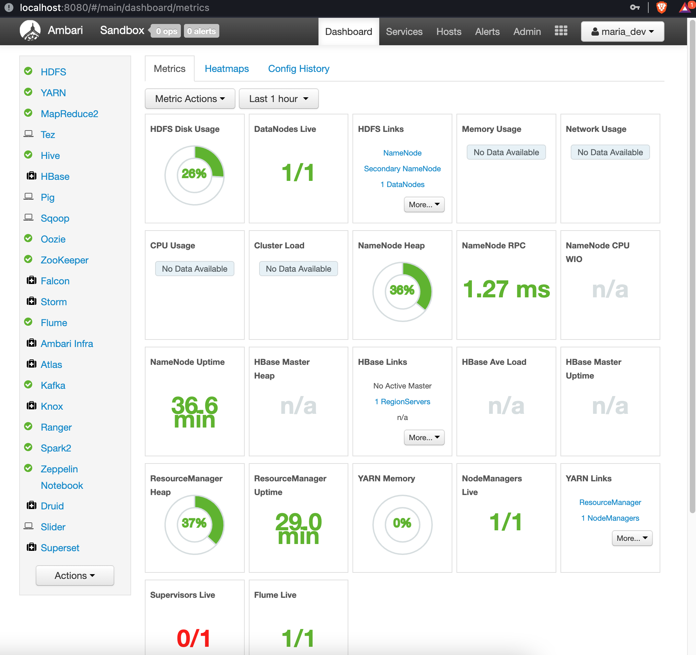
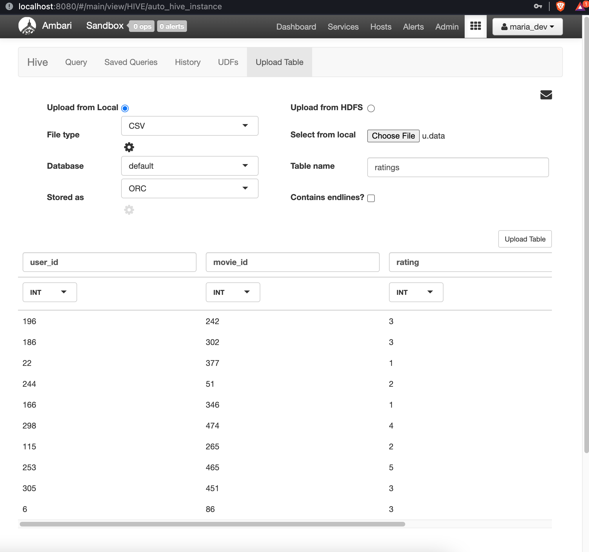
sql
select movie_id, count(movie_id) as rating_count
from ratings
group by movie_id
order by rating_count DESC;
| movie_id | rating_count |
|---|---|
| 50 | 583 |
| 258 | 509 |
| 100 | 508 |
| 181 | 507 |
| ... | ... |
visualization tab
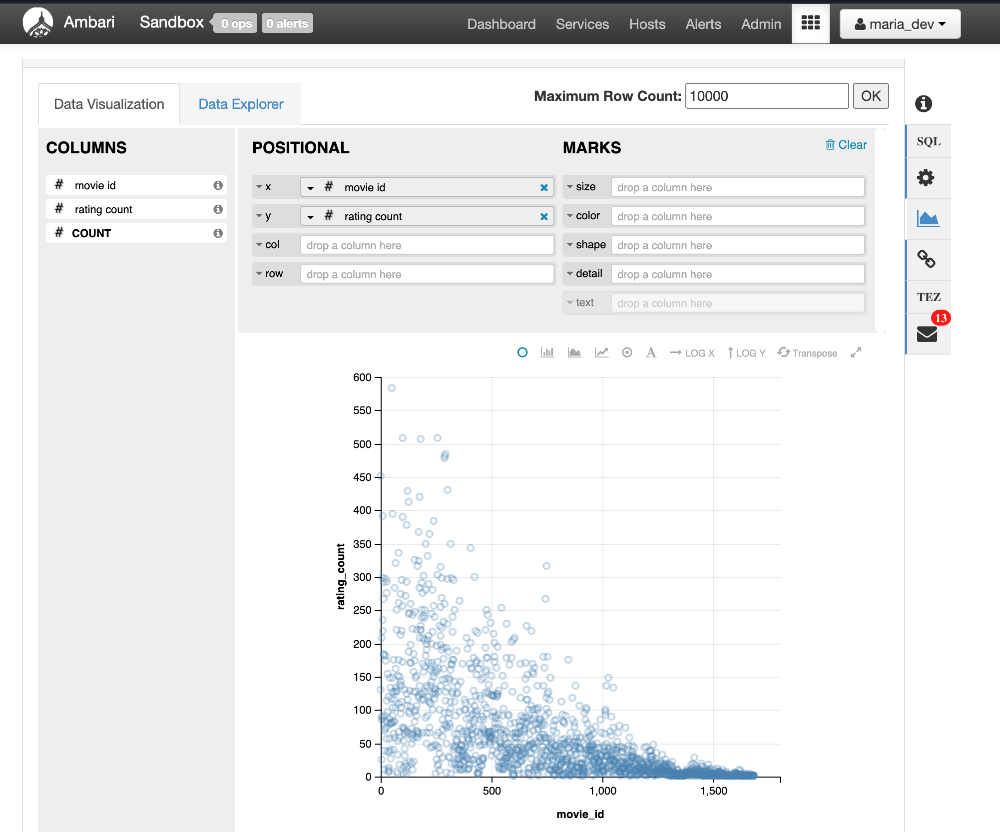
sql
select m.name, x.*
from
(select movie_id, count(movie_id) as rating_count
from ratings
group by movie_id
order by rating_count DESC) x,
movies m
where x.movie_id = m.movie_id;
| m.name | x.movie_id | x.rating_count |
|---|---|---|
| Star Wars (1977) | 50 | 583 |
| Contact (1997) | 258 | 509 |
| Fargo (1996) | 100 | 508 |
| Return of the Jedi (1983) | 181 | 507 |
| Liar Liar (1997) | 294 | 485 |
| English Patient, The (1996) | 286 | 481 |
What is Hadoop? 
"an open source software platform for distributed storage and distributed processing of very large data sets on computer clusters built from commodity hardware" - Hortonworks
Hadoop History
Google published GFS and MapReduce papers in 2003-2004
Yahoo! was building "Nutch," an open source web search engine at the same time
Hadoop was primarily driven by Doug Cutting and Tom White in 2006
It's been evolving ever since...
Comparison
GFS inspired Hadoop's distributed data storage
MapReduce inspired Hadoop's distributed data processing
Why Hadoop
Data's too darn big - terabytes per day
Vertical scaling doesn't cut it
Disk seek times
Hardware failures
Processing times
Horizontal scaling is linear
Hadoop: It's not just for batch processing anymore
Core Hadoop Ecosystem
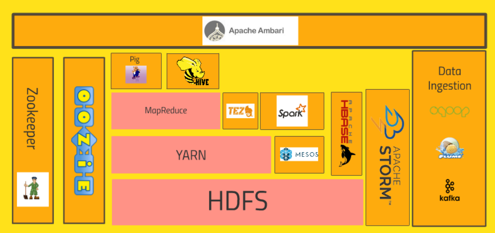
Pink Items - Hadoop itself
HDFS, Hadoop Distributed File System (Data Storage)
Distribute the storage across clusters, across nodes
Make redundant copies of data
YARN, Yet Another Resource Negotiator (Data Processing)
resource manager, to distribute the data processing task
MapReduce, programming metaphor
Mapper, to transform
Reducer, to aggregate
Add-ons
Pig, high-level programming API that sits on, and talk to MapReduce
SQL-alike syntax, no need Python/Java
Hive, similar to Pig, making files on HDFS queried like relational database
SQL syntax
Apache Ambari, overview of everything, dashboard
execute Hive query
import database into Hive
execute Pig query
Mesos, alternative to YARN
Spark, same level as MapReduce
can sit on YARN/Mesos
Python/Java/Scala
SQL
Machine Learning
Streaming data
Tez, similar to Spark, using Directed Acyclic Graph (DAG)
Optimizing the query when executing
Usually used with Hive
Apache HBase, exposing the data on your cluster to trasactional platforms
NoSQL databse
Columnar data store
Built for large transaction rates
Apache Storm, a way of processing streaming data
Alternative, Spark Streaming
Oozie, a way of scheduling jobs on your cluster
Zookeeper, coordinator of everything on Hadoop
Maintain reliable and consistent performance
Data Ingestion
Sqoop, tying Hadoop database into relational database
ODBC/JDBC connection
Connector between Hadoop and legacy database
Flume, a way of trasnporting web logs at a very large scale and reliably
Kafka, can have any sorts of data broadcast to Hadoop Cluster
External Data Storage
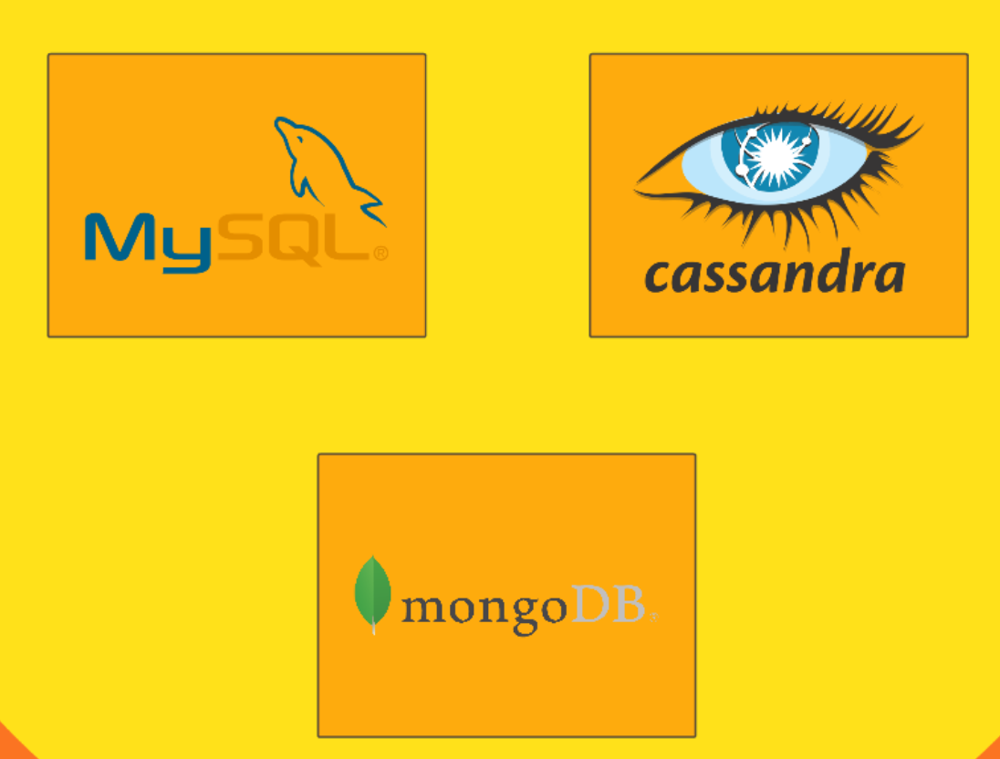
HBase can also be included here
MySQL
Cassandra, Columnar
MongoDB, Columnar
Query Engines
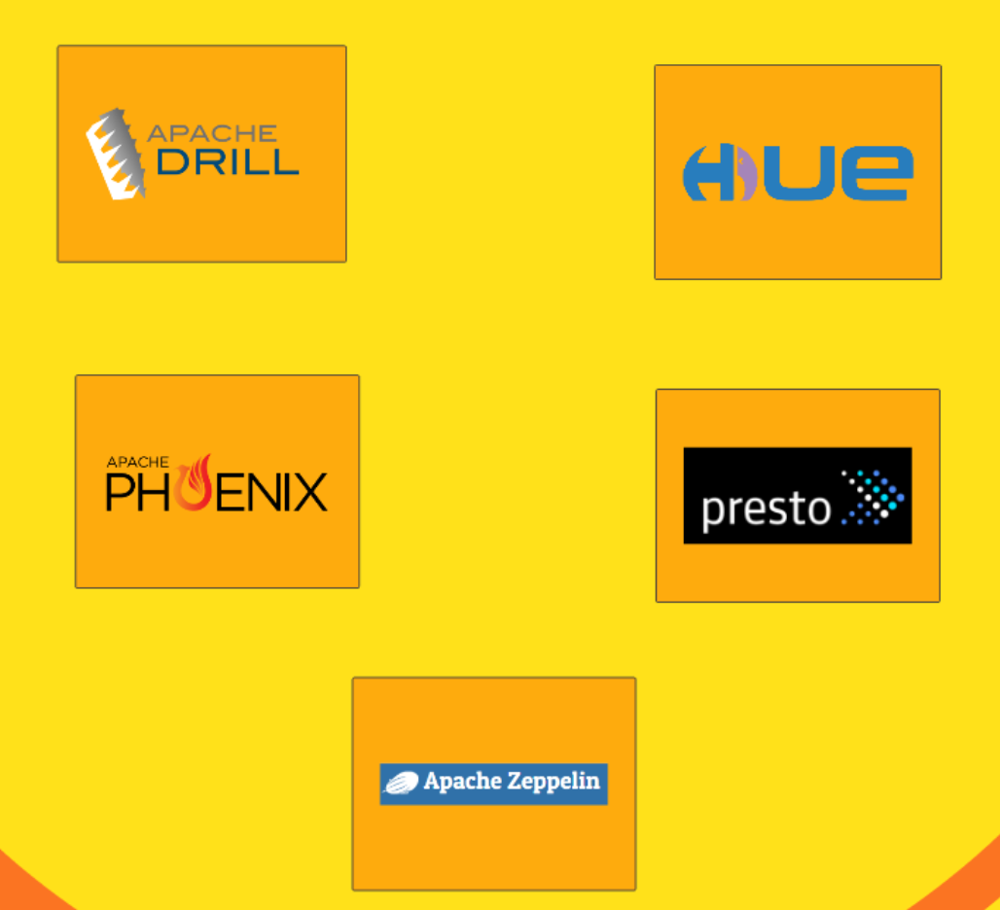
Hive can also be included here
Apache Drill, SQL to query a wide range of NoSQL database
can talk to HBase, Cassandra, MongoDB
Hive, interactive SQL query
work well with Hive and HBase
In Cloudera, Hue takes place of Ambari
Apache Phoenix, similar to Drill
ACID gurantee and OLTP
Presto
Apache Zeppelin
Section 2: Using Hadoop's Core: HDFS and MapReduce
HDFS, built for handling large files
by breaking them into blocks (128MB by default)
stored across several commodity computers (cheap)
Redundant copies, auto failover, high availability
HDFS Architecture
Name Node, tracks where all blocks live
Data Node
Reading FIle Process
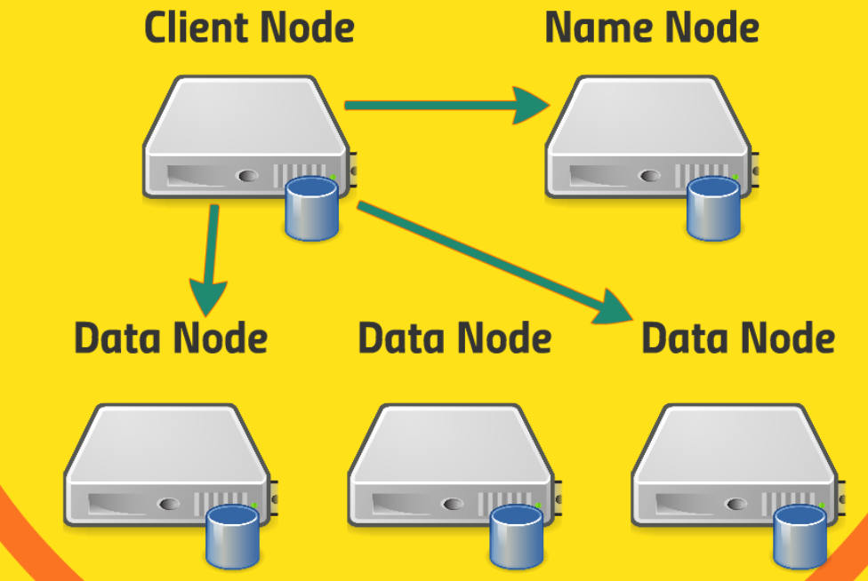
Writing File Process
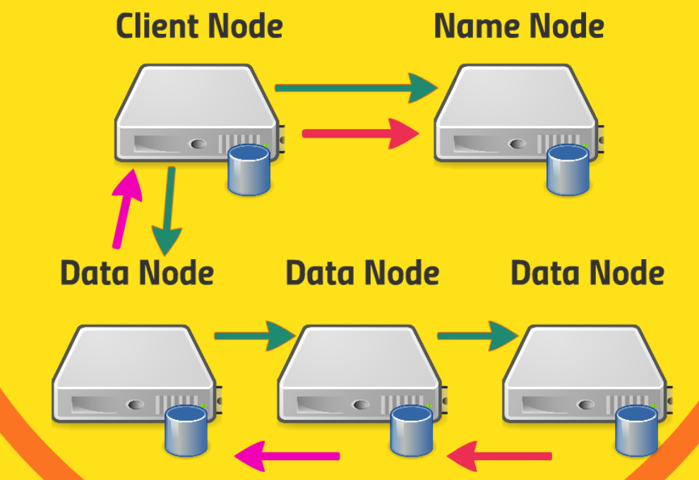
Name Node HA
Back Up Metadata
Namenode writes to local disk and NFS
Secondary Namenode
Maintains merged copy of edit log you can restore from
HDFS Federation
Each namenode manages a specifc namespace volume
HDFS High Availability
Hot standby namenode using shared edit log
Zookeeper tracks active namenode
Uses extreme measures to ensure only one namenode is used at a time
Cut off the power of dead node
Using HDFS
UI (Ambari)
Command-Line Interface
HTTP / HDFS Proxies
Java interface
NFS (Network File System) Gateway
Play with MovieLens Data
bash
ssh maria_dev@127.0.0.1 -p 2222
bash
(base) Amphe-2:~ Amphetamine$ ssh maria_dev@127.0.0.1 -p 2222
The authenticity of host '[127.0.0.1]:2222 ([127.0.0.1]:2222)' can't be established.
ECDSA key fingerprint is SHA256:MZNH/M/FtHhe7wiWlgEfK9YnFDXb7yV8aq6AcOmGq4k.
Are you sure you want to continue connecting (yes/no/[fingerprint])? yes
Warning: Permanently added '[127.0.0.1]:2222' (ECDSA) to the list of known hosts.
maria_dev@127.0.0.1's password:
-bash: warning: setlocale: LC_CTYPE: cannot change locale (UTF-8): No such file or directory
[maria_dev@sandbox-hdp ~]$ hadoop fs -ls
Found 1 items
drwxr-xr-x - maria_dev hdfs 0 2022-09-11 16:18 hive
[maria_dev@sandbox-hdp ~]$ hadoop fs -mkdir ml-100k
[maria_dev@sandbox-hdp ~]$ hadoop fs -ls
Found 2 items
drwxr-xr-x - maria_dev hdfs 0 2022-09-11 16:18 hive
drwxr-xr-x - maria_dev hdfs 0 2022-09-12 13:53 ml-100k
[maria_dev@sandbox-hdp ~]$ wget http://media.sundog-soft.com/hadoop/ml-100k/u.data
--2022-09-12 14:25:52-- http://media.sundog-soft.com/hadoop/ml-100k/u.data
Resolving media.sundog-soft.com (media.sundog-soft.com)... 52.216.238.107
Connecting to media.sundog-soft.com (media.sundog-soft.com)|52.216.238.107|:80... connected.
HTTP request sent, awaiting response... 200 OK
Length: 2079229 (2.0M) [application/octet-stream]
Saving to: 'u.data'
100%[======================================>] 2,079,229 496KB/s in 4.1s
2022-09-12 14:25:57 (496 KB/s) - 'u.data' saved [2079229/2079229]
[maria_dev@sandbox-hdp ~]$ ls
u.data
[maria_dev@sandbox-hdp ~]$ hadoop fs -copyFromLocal u.data ml-100k/u.data
[maria_dev@sandbox-hdp ~]$ hadoop fs -ls ml-100k
Found 1 items
-rw-r--r-- 1 maria_dev hdfs 2079229 2022-09-12 14:27 ml-100k/u.data
[maria_dev@sandbox-hdp ~]$ hadoop fs -rm ml-100k/u.data
22/09/12 14:28:40 INFO fs.TrashPolicyDefault: Moved: 'hdfs://sandbox-hdp.hortonworks.com:8020/user/maria_dev/ml-100k/u.data' to trash at: hdfs://sandbox-hdp.hortonworks.com:8020/user/maria_dev/.Trash/Current/user/maria_dev/ml-100k/u.data
[maria_dev@sandbox-hdp ~]$ hadoop fs -rmdir ml-100k
[maria_dev@sandbox-hdp ~]$ hadoop fs -ls
Found 2 items
drwx------ - maria_dev hdfs 0 2022-09-12 14:28 .Trash
drwxr-xr-x - maria_dev hdfs 0 2022-09-11 16:18 hive
[maria_dev@sandbox-hdp ~]$ hadoop fs
Usage: hadoop fs [generic options]
[-appendToFile <localsrc> ... <dst>]
[-cat [-ignoreCrc] <src> ...]
[-checksum <src> ...]
[-chgrp [-R] GROUP PATH...]
[-chmod [-R] <MODE[,MODE]... | OCTALMODE> PATH...]
[-chown [-R] [OWNER][:[GROUP]] PATH...]
[-copyFromLocal [-f] [-p] [-l] <localsrc> ... <dst>]
[-copyToLocal [-p] [-ignoreCrc] [-crc] <src> ... <localdst>]
[-count [-q] [-h] [-v] [-t [<storage type>]] [-u] <path> ...]
[-cp [-f] [-p | -p[topax]] <src> ... <dst>]
[-createSnapshot <snapshotDir> [<snapshotName>]]
[-deleteSnapshot <snapshotDir> <snapshotName>]
[-df [-h] [<path> ...]]
[-du [-s] [-h] <path> ...]
[-expunge]
[-find <path> ... <expression> ...]
[-get [-p] [-ignoreCrc] [-crc] <src> ... <localdst>]
[-getfacl [-R] <path>]
[-getfattr [-R] {-n name | -d} [-e en] <path>]
[-getmerge [-nl] <src> <localdst>]
[-help [cmd ...]]
[-ls [-C] [-d] [-h] [-q] [-R] [-t] [-S] [-r] [-u] [<path> ...]]
[-mkdir [-p] <path> ...]
[-moveFromLocal <localsrc> ... <dst>]
[-moveToLocal <src> <localdst>]
[-mv <src> ... <dst>]
[-put [-f] [-p] [-l] <localsrc> ... <dst>]
[-renameSnapshot <snapshotDir> <oldName> <newName>]
[-rm [-f] [-r|-R] [-skipTrash] [-safely] <src> ...]
[-rmdir [--ignore-fail-on-non-empty] <dir> ...]
[-setfacl [-R] [{-b|-k} {-m|-x <acl_spec>} <path>]|[--set <acl_spec> <path>]]
[-setfattr {-n name [-v value] | -x name} <path>]
[-setrep [-R] [-w] <rep> <path> ...]
[-stat [format] <path> ...]
[-tail [-f] <file>]
[-test -[defsz] <path>]
[-text [-ignoreCrc] <src> ...]
[-touchz <path> ...]
[-truncate [-w] <length> <path> ...]
[-usage [cmd ...]]
Generic options supported are
-conf <configuration file> specify an application configuration file
-D <property=value> use value for given property
-fs <local|namenode:port> specify a namenode
-jt <local|resourcemanager:port> specify a ResourceManager
-files <comma separated list of files> specify comma separated files to be copied to the map reduce cluster
-libjars <comma separated list of jars> specify comma separated jar files to include in the classpath.
-archives <comma separated list of archives> specify comma separated archives to be unarchived on the compute machines.
The general command line syntax is
bin/hadoop command [genericOptions] [commandOptions]
MapReduce
Why MapReduce?
Distributes the processing of data on your cluster
Divides your data up into partitions that are MAPPED (transformed) and REDUCED (aggregated) by mapper and reducer functions you define
Resilient to failure - an application master monitors your mappers and reducers on each partition
Example: How many movies did each user rate inthe movielens dataset
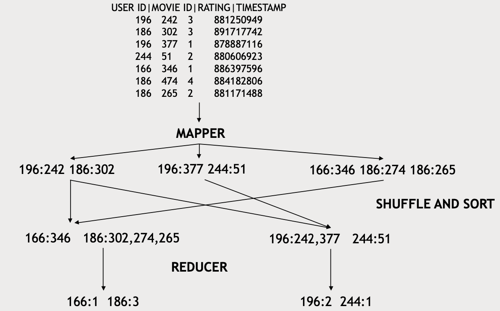
The MAPPER converts raw data into key/value pair
MapReduce sorts and groups the mapped data (shuffle and sort)
The REDUCER processes each key's values
Underlying
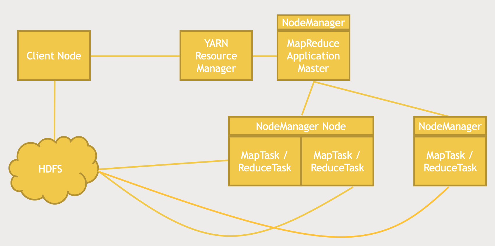
YARN will keep the map/reduce task as close as possible to the data
Writing Mapper and Reducer
MapReduce is natively Java
STREAMING allows interfacing to other languages (ie Python)
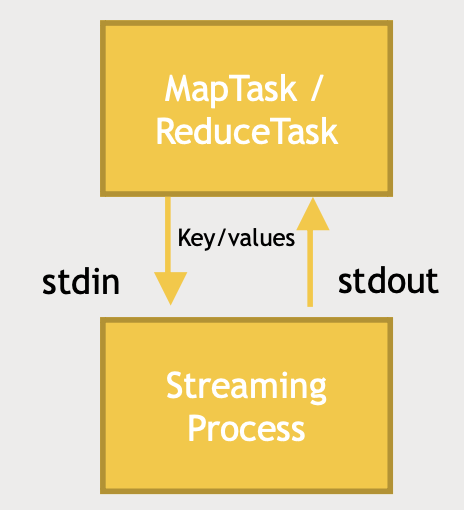
Handling Failure
Application master monitors worker tasks for errors or hanging
Restarts as needed
Preferably on a different node
What if the application master goes down?
YARN can try to restart it
What if an entire Node goes down?
This could be the application master
The resource manager will try to restart it
What if the resource manager goes down?
Can set up "high availability" (HA) using Zookeeper to have a hot standby
Example: How many of each movie rating exist?
Making it a MapReduce problem
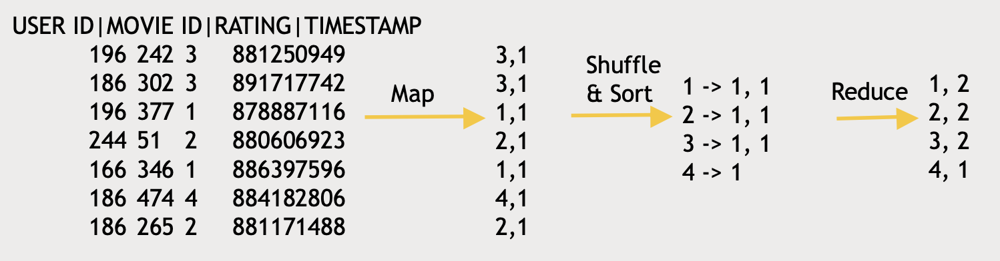
MAP each input line to (rating, 1)
REDUCE each rating with the sum of all the 1's
Writing the mapper
python
def mapper_get_ratings(self, _, line):
(userID, movieID, rating, timestamp) = line.split('\t')
yield rating, 1
Writing the reducer
python
def reducer_count_ratings(self, key, values):
yield key, sum(values)
Putting it all together
python
from mrjob.job import MRJob
from mrjob.step import MRStep
class RatingsBreakdown(MRJob):
def steps(self):
return [
MRStep(mapper = self.mapper_get_ratings,
reducer = self.reducer_count_ratings)
]
def mapper_get_ratings(self, _, line):
(userID, movieID, rating, timestamp) = line.split('\t')
yield rating, 1
def reducer_count_ratings(self, key, values):
yield key, sum(values)
if __name__ == '__main__':
RatingsBreakdown.run()
Installing mrjob on HDP 2.65
The following video will walk you through these steps, but you may find it helpful to have the commands in writing so you can just copy and paste them as you go (be sure to "su root" first, as shown in the video.)
bash
yum-config-manager --save --setopt=HDP-SOLR-2.6-100.skip_if_unavailable=true
yum install https://repo.ius.io/ius-release-el7.rpm https://dl.fedoraproject.org/pub/epel/epel-release-latest-7.noarch.rpm
yum install python-pip
pip install pathlib
pip install mrjob==0.7.4
pip install PyYAML==5.4.1
yum install nano
wget http://media.sundog-soft.com/hadoop/RatingsBreakdown.py
wget http://media.sundog-soft.com/hadoop/ml-100k/u.data
[root@sandbox-hdp maria_dev]# cat RatingsBreakdown.py
from mrjob.job import MRJob
from mrjob.step import MRStep
class RatingsBreakdown(MRJob):
def steps(self):
return [
MRStep(mapper=self.mapper_get_ratings,
reducer=self.reducer_count_ratings)
]
def mapper_get_ratings(self, _, line):
(userID, movieID, rating, timestamp) = line.split('\t')
yield rating, 1
def reducer_count_ratings(self, key, values):
yield key, sum(values)
if __name__ == '__main__':
RatingsBreakdown.run()
[credentials]
Amphe3578 for root pwd
running on local
bash
[maria_dev@sandbox-hdp ~]$ python RatingsBreakdown.py u.data
No configs found; falling back on auto-configuration
No configs specified for inline runner
Creating temp directory /tmp/RatingsBreakdown.maria_dev.20220912.170037.376616
Running step 1 of 1...
job output is in /tmp/RatingsBreakdown.maria_dev.20220912.170037.376616/output
Streaming final output from /tmp/RatingsBreakdown.maria_dev.20220912.170037.376616/output...
"4" 34174
"5" 21203
"1" 6111
"2" 11370
"3" 27145
Removing temp directory /tmp/RatingsBreakdown.maria_dev.20220912.170037.376616...
running on Hadoop
bash
[maria_dev@sandbox-hdp ~]$ python RatingsBreakdown.py -r hadoop --hadoop-streaming-jar /usr/hdp/current/hadoop-mapreduce-client/hadoop-streaming.jar u.data
No configs found; falling back on auto-configuration
No configs specified for hadoop runner
Looking for hadoop binary in $PATH...
Found hadoop binary: /usr/bin/hadoop
Using Hadoop version 2.7.3.2.6.5.0
Creating temp directory /tmp/RatingsBreakdown.maria_dev.20220912.170420.347175
uploading working dir files to hdfs:///user/maria_dev/tmp/mrjob/RatingsBreakdown.maria_dev.20220912.170420.347175/files/wd...
Copying other local files to hdfs:///user/maria_dev/tmp/mrjob/RatingsBreakdown.maria_dev.20220912.170420.347175/files/
Running step 1 of 1...
packageJobJar: [] [/usr/hdp/2.6.5.0-292/hadoop-mapreduce/hadoop-streaming-2.7.3.2.6.5.0-292.jar] /tmp/streamjob530204118478638207.jar tmpDir=null
Connecting to ResourceManager at sandbox-hdp.hortonworks.com/172.18.0.2:8032
Connecting to Application History server at sandbox-hdp.hortonworks.com/172.18.0.2:10200
Connecting to ResourceManager at sandbox-hdp.hortonworks.com/172.18.0.2:8032
Connecting to Application History server at sandbox-hdp.hortonworks.com/172.18.0.2:10200
Total input paths to process : 1
number of splits:2
Submitting tokens for job: job_1662992704302_0001
Submitted application application_1662992704302_0001
The url to track the job: http://sandbox-hdp.hortonworks.com:8088/proxy/application_1662992704302_0001/
Running job: job_1662992704302_0001
Job job_1662992704302_0001 running in uber mode : false
map 0% reduce 0%
map 100% reduce 0%
map 100% reduce 100%
Job job_1662992704302_0001 completed successfully
Output directory: hdfs:///user/maria_dev/tmp/mrjob/RatingsBreakdown.maria_dev.20220912.170420.347175/output
Counters: 49
File Input Format Counters
Bytes Read=2088191
File Output Format Counters
Bytes Written=49
File System Counters
FILE: Number of bytes read=800030
FILE: Number of bytes written=2073009
FILE: Number of large read operations=0
FILE: Number of read operations=0
FILE: Number of write operations=0
HDFS: Number of bytes read=2088549
HDFS: Number of bytes written=49
HDFS: Number of large read operations=0
HDFS: Number of read operations=9
HDFS: Number of write operations=2
Job Counters
Data-local map tasks=2
Launched map tasks=2
Launched reduce tasks=1
Total megabyte-milliseconds taken by all map tasks=5042500
Total megabyte-milliseconds taken by all reduce tasks=1184250
Total time spent by all map tasks (ms)=20170
Total time spent by all maps in occupied slots (ms)=20170
Total time spent by all reduce tasks (ms)=4737
Total time spent by all reduces in occupied slots (ms)=4737
Total vcore-milliseconds taken by all map tasks=20170
Total vcore-milliseconds taken by all reduce tasks=4737
Map-Reduce Framework
CPU time spent (ms)=4750
Combine input records=0
Combine output records=0
Failed Shuffles=0
GC time elapsed (ms)=382
Input split bytes=358
Map input records=100003
Map output bytes=600018
Map output materialized bytes=800036
Map output records=100003
Merged Map outputs=2
Physical memory (bytes) snapshot=513785856
Reduce input groups=5
Reduce input records=100003
Reduce output records=5
Reduce shuffle bytes=800036
Shuffled Maps =2
Spilled Records=200006
Total committed heap usage (bytes)=263192576
Virtual memory (bytes) snapshot=5840756736
Shuffle Errors
BAD_ID=0
CONNECTION=0
IO_ERROR=0
WRONG_LENGTH=0
WRONG_MAP=0
WRONG_REDUCE=0
job output is in hdfs:///user/maria_dev/tmp/mrjob/RatingsBreakdown.maria_dev.20220912.170420.347175/output
Streaming final output from hdfs:///user/maria_dev/tmp/mrjob/RatingsBreakdown.maria_dev.20220912.170420.347175/output...
"1" 6111
"2" 11370
"3" 27145
"4" 34174
"5" 21203
Removing HDFS temp directory hdfs:///user/maria_dev/tmp/mrjob/RatingsBreakdown.maria_dev.20220912.170420.347175...
Removing temp directory /tmp/RatingsBreakdown.maria_dev.20220912.170420.347175...
Exercise: Count up ratings given for each movie
All you need is to change one thing in the mapper – we don’t care about ratings now, we care about movie ID’s!
Start with this and make sure you can do it.
You can use nano to just edit the existing RatingsBreakdown.py script
Strategy
Map to (movieID, 1) key/value pairs
Reduce with output of (rating count, movieID)
Send this to a second reducer so we end up with things sorted by rating
count!
Gotchas:
How do we set up more than one MapReduce step?
How do we ensure the rating counts are sorted properly?
Code
bash
[maria_dev@sandbox-hdp ~]$ cat MovieCount.py
from mrjob.job import MRJob
from mrjob.step import MRStep
class RatingsBreakdown(MRJob):
def steps(self):
return [
MRStep(mapper=self.mapper_get_movies,
reducer=self.reducer_count_ratings)
]
def mapper_get_movies(self, _, line):
(userID, movieID, rating, timestamp) = line.split('\t')
yield movieID, 1
def reducer_count_ratings(self, key, values):
yield key, sum(values)
if __name__ == '__main__':
RatingsBreakdown.run()
[maria_dev@sandbox-hdp ~]$ python MovieCount.py u.data
No configs found; falling back on auto-configuration
No configs specified for inline runner
Creating temp directory /tmp/MovieCount.maria_dev.20220912.171115.715505
Running step 1 of 1...
job output is in /tmp/MovieCount.maria_dev.20220912.171115.715505/output
Streaming final output from /tmp/MovieCount.maria_dev.20220912.171115.715505/output...
"194" 241
"195" 301
"196" 251
"197" 239
"198" 127
"199" 165
"2" 131
"20" 72
...
[maria_dev@sandbox-hdp ~]$ cat TopMovies.py
from mrjob.job import MRJob
from mrjob.step import MRStep
class RatingsBreakdown(MRJob):
def steps(self):
return [
MRStep(mapper=self.mapper_get_ratings,
reducer=self.reducer_count_ratings),
MRStep(reducer=self.reducer_sorted_output)
]
def mapper_get_ratings(self, _, line):
(userID, movieID, rating, timestamp) = line.split('\t')
yield movieID, 1
def reducer_count_ratings(self, key, values):
yield str(sum(values)).zfill(5), key
def reducer_sorted_output(self, count, movies):
for movie in movies:
yield movie, count
if __name__ == '__main__':
RatingsBreakdown.run()
## You may notice that your results aren't sorted the same way mine are.
## Depending on how MapReduce split up the processing of your work,
## you may be getting results back from each CPU core or from multiple threads
## reducing the data in parallel. Only data from the same process can be
## sorted by an individual reducer, so that's expected.
## It would be possible to re-sort your final results via some other process
## once it is all received, but as you'll see in later lectures,
## more modern technologies such as Spark will handle things like this for you.
## output
"443" "00162"
"66" "00162"
"411" "00163"
"523" "00164"
"692" "00164"
"739" "00164"
Section 3: Programming Hadoop with Pig
Prep
getting admin account for hadoop
bash
[root@sandbox-hdp maria_dev]# ambari-admin-password-reset
Please set the password for admin:
Please retype the password for admin:
The admin password has been set.
Restarting ambari-server to make the password change effective...
Using python /usr/bin/python
Restarting ambari-server
Waiting for server stop...
Ambari Server stopped
Ambari Server running with administrator privileges.
Organizing resource files at /var/lib/ambari-server/resources...
Ambari database consistency check started...
Server PID at: /var/run/ambari-server/ambari-server.pid
Server out at: /var/log/ambari-server/ambari-server.out
Server log at: /var/log/ambari-server/ambari-server.log
Waiting for server start..........................................
Server started listening on 8080
DB configs consistency check: no errors and warnings were found.
Pig
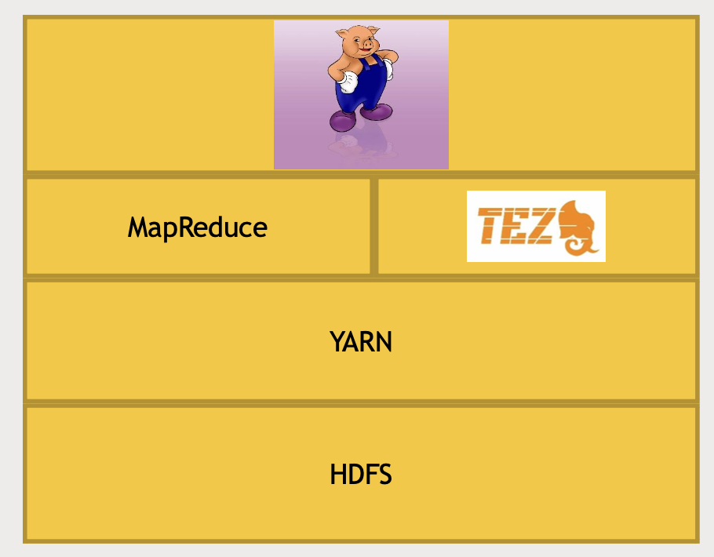
Features
built on Hadoop and MapReduce, to not necessary writing mapper and reducer
also on Tez, offering accelaration compared to MapReduce
Multi sets of (mapper, reducer) forms a DAG, where Tez can observe the interdenpendecies between steps and compute the optimal path
Writing mappers and reducers by hand takes a long time.
Pig introduces Pig Latin, a scripting language that lets you use SQL-like syntax to define your map and reduce steps.
Highly extensible with user-defined functions (UDF’s)
Running Pig
Grunt
MasterNode CLI
Script
Ambari / Hue
Hands-on: Find the oldest good-rates(avg ratings > 4.0) movie
pig
-- load files
ratings = LOAD '/user/maria_dev/ml-100k/u.data' AS (userID:int, movieID:int, rating:int, ratingTime:int);
metadata = LOAD '/user/maria_dev/ml-100k/u.item' USING PigStorage('|')
AS (movieID:int, movieTitle:chararray, releaseDate:chararray, videoRealese:chararray, imdblink:chararray);
-- convert date
nameLookup = FOREACH metadata GENERATE movieID, movieTitle,
ToUnixTime(ToDate(releaseDate, 'dd-MMM-yyyy')) AS releaseTime;
-- group by movieID
ratingsByMovie = GROUP ratings BY movieID;
-- generate the avgRatings
avgRatings = FOREACH ratingsByMovie GENERATE group as movieID, AVG(ratings.rating) as avgRating;
fiveStarMovies = FILTER avgRatings BY avgRating > 4.0;
-- join fiveStarMovies and nameLookup by movieID
fiveStarsWithData = JOIN fiveStarMovies BY movieID, nameLookup BY movieID;
-- sort by releaseTime
oldestFiveStarMovies = ORDER fiveStarsWithData BY nameLookup::releaseTime;
DUMP oldestFiveStarMovies;
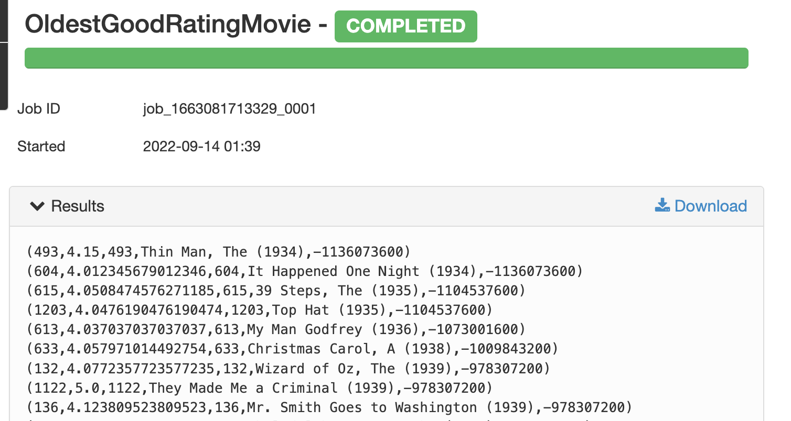
MapReduce Version -- 3 min, 29 sec
accesslog
2022-09-13 17:42:51,749 [main] INFO org.apache.pig.Main - Pig script completed in 1 minute, 42 seconds and 833 milliseconds (102833 ms)
Tez Version (faster) -- 2 min, 35 sec
accesslog
2022-09-13 17:49:46,931 [main] INFO org.apache.pig.Main - Pig script completed in 1 minute, 23 seconds and 573 milliseconds (83573 ms)
Pig Latin
Syntax
LOAD STORE DUMP
– STORE ratings INTO 'outRatings' USING PigStorage(':');
FILTER DISTINCT FOREACH/GENERATE MAPREDUCE STREAM SAMPLE
JOIN COGROUP GROUP CROSS CUBE
ORDER RANK LIMIT
UNION SPLIT
Diagnostics
DESCRIBE (describe the schema of a given relation)
EXPLAIN (SQL explain plan, insight on how Pig execute the query)
ILLUSTRATE (taking sample to explain)
UDFs (Java)
REGISTER (jar file containg UDF imported to Pig)
DEFINE (name the function)
IMPORT (import macros for Pig file)
Some other functions and loaders
AVG CONCAT COUNT MAX MIN SIZE SUM
PigStorage
TextLoader
JsonLoader
AvroStorage
ParquetLoader
OrcStorage
HdBaseStorage
Exercise: find the mostly rated bad rating movie
pig
-- load files
ratings = LOAD '/user/maria_dev/ml-100k/u.data' AS (userID:int, movieID:int, rating:int, ratingTime:int);
metadata = LOAD '/user/maria_dev/ml-100k/u.item' USING PigStorage('|')
AS (movieID:int, movieTitle:chararray, releaseDate:chararray, videoRealese:chararray, imdblink:chararray);
-- convert date
nameLookup = FOREACH metadata GENERATE movieID, movieTitle;
-- group by movieID
groupedRatings = GROUP ratings BY movieID;
-- generate the avgRatings
avgRatings = FOREACH groupedRatings GENERATE group as movieID,
AVG(ratings.rating) as avgRating,
COUNT(ratings.rating) as numRatings;
badMovies = FILTER avgRatings BY avgRating < 2.0;
-- join badMovies and nameLookup by movieID
namedBadMovies = JOIN badMovies BY movieID, nameLookup BY movieID;
-- sort by releaseTime
MostRatedBadRatingMovie = ORDER namedBadMovies BY badMovies::numRatings DESC;
DUMP MostRatedBadRatingMovie;
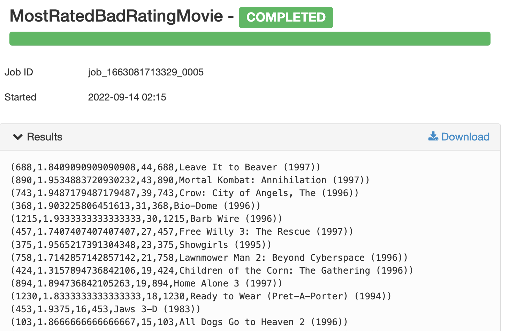
Section 4: Programming Hadoop with Spark
Spark
Scalable
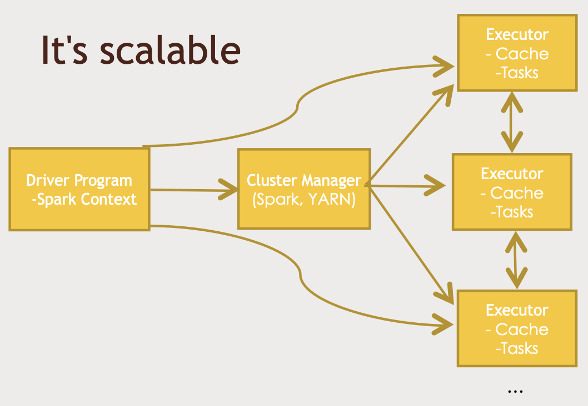
fast: save in RAM and using DAG
"Run programs up to 100x faster than Hadoop MapReduce in memory, or 10x faster on disk."
DAG Engine (directed acyclic graph) optimizes workflows
hot
Amazon
Ebay: log analysis and aggregation
NASA JPL: Deep Space Network
Groupon
TripAdviser
Yahoo
Many others: https://cwiki.apache.org/confluence/display/SPARK/Powered+By+Spark
easy
Code in Python, Java, or Scala
Built around one main concept: the Resilient Distributed Dataset (RDD)
Components
RDD (Resilient Distributed Dataset)
SparkContext
Created by your driver program
Is responsible for making RDD's resilient and distributed!
Creates RDD's
The Spark shell creates a "sc" object for you
Creating RDDs
nums = parallelize([1, 2, 3, 4])
sc.textFile("file:///c:/users/frank/gobs-o-text.txt")
or s3n:// , hdfs://
hiveCtx = HiveContext(sc)
rows = hiveCtx.sql("SELECT name, age FROM users")
Can also create from:
JDBC
Cassandra
HBase
Elastisearch
JSON, CSV, sequence files, object files, various compressed formats
Transforming RDDs
map
python
rdd = sc.parallelize([1, 2, 3, 4])
squaredRDD = rdd.map(lambda x: x*x)
## This yields 1, 4, 9, 16
flatmap
filter
distinct
sample
union, intersection, subtract, cartesian
RDD actions
collect
count
countByValue
take
top
reduce
... and more ...
Lazy evaluation
Nothing actually happens in your driver program until an action is called!
Hands-on: find the bottom 10 movie with the lowest average ratings - with RDD
python
from pyspark import SparkConf, SparkContext
# This function just creates a Python "dictionary" we can later
# use to convert movie ID's to movie names while printing out
# the final results.
def loadMovieNames():
movieNames = {}
with open("ml-100k/u.item") as f:
for line in f:
fields = line.split('|')
movieNames[int(fields[0])] = fields[1]
return movieNames
# Take each line of u.data and convert it to (movieID, (rating, 1.0))
# This way we can then add up all the ratings for each movie, and
# the total number of ratings for each movie (which lets us compute the average)
def parseInput(line):
fields = line.split()
return (int(fields[1]), (float(fields[2]), 1.0))
if __name__ == "__main__":
# The main script - create our SparkContext
conf = SparkConf().setAppName("WorstMovies")
sc = SparkContext(conf = conf)
# Load up our movie ID -> movie name lookup table
movieNames = loadMovieNames()
# Load up the raw u.data file
lines = sc.textFile("hdfs:///user/maria_dev/ml-100k/u.data")
# Convert to (movieID, (rating, 1.0))
movieRatings = lines.map(parseInput)
# Reduce to (movieID, (sumOfRatings, totalRatings))
# this addition is actually doing the sum
ratingTotalsAndCount = movieRatings.reduceByKey(lambda movie1, movie2: ( movie1[0] + movie2[0], movie1[1] + movie2[1] ) )
# Map to (movieID, averageRating)
averageRatings = ratingTotalsAndCount.mapValues(lambda totalAndCount : totalAndCount[0] / totalAndCount[1])
# Sort by average rating
sortedMovies = averageRatings.sortBy(lambda x: x[1])
# Take the top 10 results
results = sortedMovies.take(10)
# Print them out:
for result in results:
print(movieNames[result[0]], result[1])
Spark-submit
bash
[maria_dev@sandbox-hdp ~]$ spark-submit LowestRatedMovieSpark.py
SPARK_MAJOR_VERSION is set to 2, using Spark2
22/09/13 19:27:07 INFO SparkContext: Running Spark version 2.3.0.2.6.5.0-292
22/09/13 19:27:07 INFO SparkContext: Submitted application: WorstMovies
22/09/13 19:27:08 INFO SecurityManager: Changing view acls to: maria_dev
....
22/09/13 19:27:18 INFO DAGScheduler: Job 2 finished: runJob at PythonRDD.scala:141, took 0.328263 s
('3 Ninjas: High Noon At Mega Mountain (1998)', 1.0)
('Beyond Bedlam (1993)', 1.0)
('Power 98 (1995)', 1.0)
('Bloody Child, The (1996)', 1.0)
('Amityville: Dollhouse (1996)', 1.0)
('Babyfever (1994)', 1.0)
('Homage (1995)', 1.0)
('Somebody to Love (1994)', 1.0)
('Crude Oasis, The (1995)', 1.0)
('Every Other Weekend (1990)', 1.0)
Spark SQL -- DataFrame and DataSets
Feature
Extends RDD to a "DataFrame" object
DataFrames:
Contain Row objects
– Can run SQL queries
– Has a schema (leading to more efficient storage)
– Read and write to JSON, Hive, parquet
– Communicates with JDBC/ODBC, Tableau
Using SparkSQL in Python
python
from pyspark.sql import SQLContext, Row
hiveContext = HiveContext(sc)
inputData = spark.read.json(dataFile)
inputData.createOrReplaceTempView("myStructuredStuff")
myResultDataFrame = hiveContext.sql("""SELECT foo FROM bar ORDER BY foobar""")
python
myResultDataFrame.show()
myResultDataFrame.select("someFieldName")
myResultDataFrame.filter(myResultDataFrame("someFieldName" > 200)
myResultDataFrame.groupBy(myResultDataFrame("someFieldName")).mean()
myResultDataFrame.rdd().map(mapperFunction)
DataSet
In Spark 2.0, a DataFrame is really a DataSet of Row objects
DataSets can wrap known, typed data too. But this is mostly transparent to you in Python, since Python is dynamically typed.
So – don’t sweat this too much with Python. But the Spark 2.0 way is to use DataSets instead of DataFrames when you can.
Shell Access
Spark SQL exposes a JDBC/ODBC server (if you built Spark with Hive support)
Start it with sbin/start-thriftserver.sh
Listens on port 10000 by default
Connect using bin/beeline -u jdbc:hive2://localhost:10000
Viola, you have a SQL shell to Spark SQL
You can create new tables, or query existing ones that were cached using hiveCtx.cacheTable("tableName")
User-defined functions (UDF's)
python
from pyspark.sql.types import IntegerType
hiveCtx.registerFunction("square", lambda x: x*x, IntegerType())
df = hiveCtx.sql("SELECT square('someNumericFiled') FROM tableName)
Hands-on: find the bottom 10 movie with the lowest average ratings - with DataFrame
python
# LowestRatedPopularMovieDataFrame.py
from pyspark.sql import SparkSession
from pyspark.sql import Row
from pyspark.sql import functions
def loadMovieNames():
movieNames = {}
with open("ml-100k/u.item") as f:
for line in f:
fields = line.split('|')
movieNames[int(fields[0])] = fields[1]
return movieNames
def parseInput(line):
fields = line.split()
return Row(movieID = int(fields[1]), rating = float(fields[2]))
if __name__ == "__main__":
# Create a SparkSession
spark = SparkSession.builder.appName("PopularMovies").getOrCreate()
# Load up our movie ID -> name dictionary
movieNames = loadMovieNames()
# Get the raw data
lines = spark.sparkContext.textFile("hdfs:///user/maria_dev/ml-100k/u.data")
# Convert it to a RDD of Row objects with (movieID, rating)
movies = lines.map(parseInput)
# Convert that to a DataFrame
movieDataset = spark.createDataFrame(movies)
# Compute average rating for each movieID
averageRatings = movieDataset.groupBy("movieID").avg("rating")
# Compute count of ratings for each movieID
counts = movieDataset.groupBy("movieID").count()
# Join the two together (We now have movieID, avg(rating), and count columns)
averagesAndCounts = counts.join(averageRatings, "movieID")
# Pull the top 10 results
topTen = averagesAndCounts.orderBy("avg(rating)").take(10)
# Print them out, converting movie ID's to names as we go.
for movie in topTen:
print (movieNames[movie[0]], movie[1], movie[2])
# Stop the session
spark.stop()
bash
[maria_dev@sandbox-hdp ~]$ export SPARK_MAJOR_VERSION=2
[maria_dev@sandbox-hdp ~]$ spark-submit LowestRatedMovieDataFrame.py
SPARK_MAJOR_VERSION is set to 2, using Spark2
...
22/09/14 14:48:21 INFO DAGScheduler: Job 1 finished: take at /home/maria_dev/LowestRatedMovieDataFrame.py:41, took 31.479431 s
('Amityville: A New Generation (1993)', 5, 1.0)
('Hostile Intentions (1994)', 1, 1.0)
('Lotto Land (1995)', 1, 1.0)
('Low Life, The (1994)', 1, 1.0)
('Amityville: Dollhouse (1996)', 3, 1.0)
('Careful (1992)', 1, 1.0)
('Falling in Love Again (1980)', 2, 1.0)
('Power 98 (1995)', 1, 1.0)
('Further Gesture, A (1996)', 1, 1.0)
('Touki Bouki (Journey of the Hyena) (1973)', 1, 1.0)
Hands-on: Movie Recommendations with MLLib
python
# MovieRecommendationsALS.py
from pyspark.sql import SparkSession
from pyspark.ml.recommendation import ALS
from pyspark.sql import Row
from pyspark.sql.functions import lit
# Load up movie ID -> movie name dictionary
def loadMovieNames():
movieNames = {}
with open("ml-100k/u.item") as f:
for line in f:
fields = line.split('|')
movieNames[int(fields[0])] = fields[1].decode('ascii', 'ignore')
return movieNames
# Convert u.data lines into (userID, movieID, rating) rows
def parseInput(line):
fields = line.value.split()
return Row(userID = int(fields[0]), movieID = int(fields[1]), rating = float(fields[2]))
if __name__ == "__main__":
# Create a SparkSession
spark = SparkSession.builder.appName("MovieRecs").getOrCreate()
spark.conf.set("spark.sql.crossJoin.enabled", "true")
# Load up our movie ID -> name dictionary
movieNames = loadMovieNames()
# Get the raw data
lines = spark.read.text("hdfs:///user/maria_dev/ml-100k/u.data").rdd
# Convert it to a RDD of Row objects with (userID, movieID, rating)
ratingsRDD = lines.map(parseInput)
# Convert to a DataFrame and cache it
ratings = spark.createDataFrame(ratingsRDD).cache()
# Create an ALS collaborative filtering model from the complete data set
als = ALS(maxIter=5, regParam=0.01, userCol="userID", itemCol="movieID", ratingCol="rating")
model = als.fit(ratings)
# Print out ratings from user 0:
print("\nRatings for user ID 0:")
userRatings = ratings.filter("userID = 0")
for rating in userRatings.collect():
print movieNames[rating['movieID']], rating['rating']
print("\nTop 20 recommendations:")
# Find movies rated more than 100 times
ratingCounts = ratings.groupBy("movieID").count().filter("count > 100")
# Construct a "test" dataframe for user 0 with every movie rated more than 100 times
popularMovies = ratingCounts.select("movieID").withColumn('userID', lit(0))
# Run our model on that list of popular movies for user ID 0
recommendations = model.transform(popularMovies)
# Get the top 20 movies with the highest predicted rating for this user
topRecommendations = recommendations.sort(recommendations.prediction.desc()).take(20)
for recommendation in topRecommendations:
print (movieNames[recommendation['movieID']], recommendation['prediction'])
spark.stop()
bash
[maria_dev@sandbox-hdp ~]$ spark-submit MovieRecommendationsALS.py
SPARK_MAJOR_VERSION is set to 2, using Spark2
...
Ratings for user ID 0:
Star Wars (1977) 5.0
Empire Strikes Back, The (1980) 5.0
Gone with the Wind (1939) 1.0
Top 20 recommendations:
(u'Wrong Trousers, The (1993)', 5.749821662902832)
(u'Fifth Element, The (1997)', 5.232528209686279)
(u'Close Shave, A (1995)', 5.050625324249268)
(u'Monty Python and the Holy Grail (1974)', 4.99659538269043)
(u'Star Wars (1977)', 4.98954963684082)
(u'Army of Darkness (1993)', 4.980320930480957)
(u'Empire Strikes Back, The (1980)', 4.972929954528809)
(u'Princess Bride, The (1987)', 4.957705497741699)
(u'Blade Runner (1982)', 4.910674571990967)
(u'Return of the Jedi (1983)', 4.77808141708374)
(u'Rumble in the Bronx (1995)', 4.69175910949707)
(u'Raiders of the Lost Ark (1981)', 4.636718273162842)
(u"Jackie Chan's First Strike (1996)", 4.632108211517334)
(u'Twelve Monkeys (1995)', 4.614840507507324)
(u'Spawn (1997)', 4.57417106628418)
(u'Terminator, The (1984)', 4.561151027679443)
(u'Alien (1979)', 4.54151725769043)
(u'Terminator 2: Judgment Day (1991)', 4.529487133026123)
(u'Usual Suspects, The (1995)', 4.517911911010742)
(u'Mystery Science Theater 3000: The Movie (1996)', 4.5095906257629395)
Hands-on: change lowest-rated only valid when 10 or more peple rate that movie in both RDD and Dataframe version
RDD
python
# Reduce to (movieID, (sumOfRatings, totalRatings))
# Filter out movies rated 10 or fewer times
popularTotalsAndCount = ratingTotalsAndCount.filter(lambda x: x[1][1] > 10)
DataFrame
python
# Filter movies rated 10 or fewer times
popularAveragesAndCounts = averagesAndCounts.filter("count > 10")
Result
python
('Children of the Corn: The Gathering (1996)', 19, 1.3157894736842106)
('Body Parts (1991)', 13, 1.6153846153846154)
('Amityville II: The Possession (1982)', 14, 1.6428571428571428)
('Lawnmower Man 2: Beyond Cyberspace (1996)', 21, 1.7142857142857142)
('Robocop 3 (1993)', 11, 1.7272727272727273)
('Free Willy 3: The Rescue (1997)', 27, 1.7407407407407407)
("Gone Fishin' (1997)", 11, 1.8181818181818181)
('Solo (1996)', 12, 1.8333333333333333)
('Vampire in Brooklyn (1995)', 12, 1.8333333333333333)
('Ready to Wear (Pret-A-Porter) (1994)', 18, 1.8333333333333333)
Section 5: Using relational data stores with Hadoop
Hive
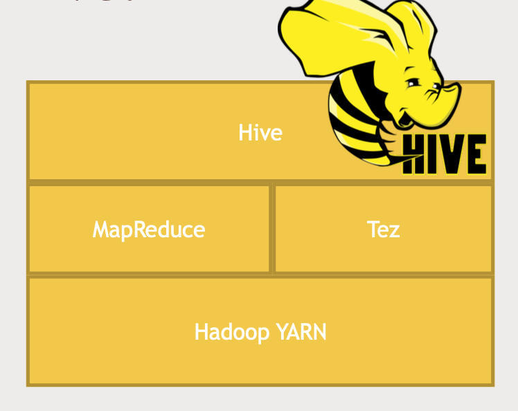
Features
Make Hadoop Cluster look like Relational Database
Translates SQL queries to MapReduce or Tez jobs on your cluster!
Why Hive
Uses familiar SQL syntax (HiveQL)
Interactive
Scalable – works with “big data” on a cluster
Really most appropriate for data warehouse applications
Easy OLAP queries – WAY easier than writing MapReduce in Java
Highly optimized
Highly extensible
User defined functions
Thrift server
JDBC / ODBC driver
Why not Hive
High latency – not appropriate for OLTP (no latency situations)
Stores data de-normalized
SQL is limited in what it can do
Pig, Spark allows more complex stuff
No transactions
No record-level updates, inserts, deletes
HiveQL
Pretty much MySQL with some extensions
For example: views (logical view)
Can store results of a query into a “view”, which subsequent queries can use as a table
Allows you to specify how structured data is stored and partitioned
Hands-on: find the most rated movie
sql
CREATE VIEW topMovieIDs AS
SELECT movie_id, count(movie_id) AS ratingCount
FROM ratings
GROUP BY movie_id
ORDER BY ratingCount DESC;
SELECT n.title, t.ratingCount
FROM topMovieIDs t
JOIN names n
ON t.movie_id = n.movie_id;
| n.title | t.ratingcount |
|---|---|
| Star Wars (1977) | 583 |
| Contact (1997) | 509 |
| Fargo (1996) | 508 |
| Return of the Jedi (1983) | 507 |
| Liar Liar (1997) | 485 |
Mechanism
Schema on read
Hive maintains a “metastore” that imparts a structure you define on the unstructured data that is stored on HDFS etc.
sql
CREATE TABLE ratings (
userID INT,
movieID INT,
rating INT,
time INT)
ROW FORMAT DELIMTED
FIELDS TERMINATED BY '\t'
STORED AS TEXTFILE;
LOAD DATA LOCAL INPATH '${env:HOME}/ml-100k/u.data'
OVERWRITE INTO TABLE ratings;
Where is the data?
LOAD DATA
MOVES data from a distributed filesystem into Hive (only one copy on HDFS, just where Hive expects the data to be)
LOAD DATA LOCAL
COPIES data from your local filesystem into Hive (two copies on HDFS)
Managed vs. External tables
sql
-- Data resides in origin path, no moving/copying
CREATE EXTERNAL TABLE IF NOT EXISTS ratings (
userID INT,
movieID INT,
rating INT,
time INT)
ROW FORMAT DELIMITED
FIELDS TERMINATED BY '\t'
LOCATION '/data/ml-100k/u.data';
Partitioning
You can store your data in partitioned subdirectories
Huge optimization if your queries are only on certain partitions
sql
CREATE TABLE customers (
name STRING,
address STRUCT<street:STRING, city:STRING, state:STRING, zip:INT>
)
PARTITIONED BY (country STRING);
-- result
.../customers/country=CA/
.../customers/country=GB/
Ways to use Hive
Interactive via hive> prompt / Command line interface (CLI)
Saved query files
hive –f /somepath/queries.hql
Through Ambari / Hue
Through JDBC/ODBC server
Through Thrift service
But remember, Hive is not suitable for OLTP
Via Oozie
Hands-on: Find the movie with the highest average rating
sql
SELECT r.movie_id, n.title, AVG(r.rating) as avgrating, COUNT(r.rating) as countrating
FROM ratings r, names n
WHERE r.movie_id = n.movie_id
GROUP BY r.movie_id, n.title
HAVING countrating > 10
ORDER BY avgrating DESC
| r.movie_id | n.title | avgrating | countrating |
|---|---|---|---|
| 408 | Close Shave, A (1995) | 4.491071428571429 | 112 |
| 318 | Schindler's List (1993) | 4.466442953020135 | 298 |
| 169 | Wrong Trousers, The (1993) | 4.466101694915254 | 118 |
| 483 | Casablanca (1942) | 4.45679012345679 | 243 |
| 114 | Wallace & Gromit: The Best of Aardman Animation (1996) | 4.447761194029851 | 67 |
| 64 | Shawshank Redemption, The (1994) | 4.445229681978798 | 283 |
Integrating MySQL & Hadoop
MySQL
Popular, free relational database
Generally monolithic in nature
But, can be used for OLTP – so exporting data into MySQL can be useful
Existing data may exist in MySQL that you want to import to Hadoop
Sqoop
Actually kicks off MapReduce jobs to handle importing or exporting your data!
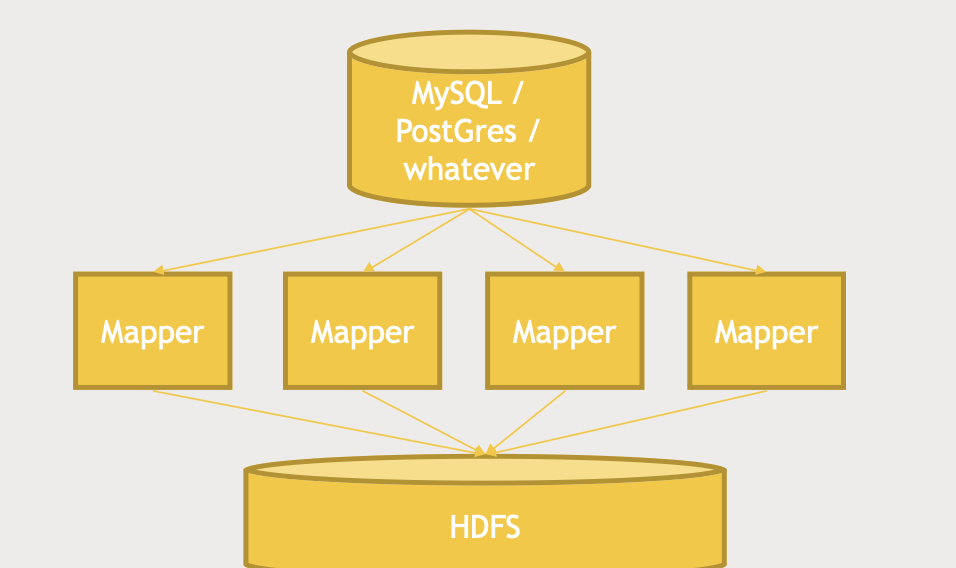
Sqoop: Import data from MySQL to HDFS
export from DB, import to HDFS
efficient on giant dataset, but not on lots of small datasets
bash
## import to HDFS
sqoop import --connect jdbc:mysql://localhost/movielens \
--driver com.mysql.jdbc.Driver \
--table movies\
## import to Hive
sqoop import --connect jdbc:mysql://localhost/movielens \
--driver com.mysql.jdbc.Driver \
--table movies \
--hive-import
Incremental imports
You can keep your relational database and Hadoop in sync
--check-column and -–last-value
Sqoop: Export data from Hive to MySQL
bash
# -m how many mappers needed
sqoop export --connect jdbc:mysql://localhost/movielens -m 1 \
--driver com.mysql.jdbc.Driver \
--table exported_movies \
--export-dir /apps/hive/warehouse/movies \
--input-fields-terminated-by '\0001'
Target table must already exist in MySQL, with columns in expected order
Hands-on: Let’s play with MySQL and Sqoop
bash
## cheatsheet
## On new HDP sandbixes, mysql's root account has no defualt password.
## Need to set one up the hard way first
su root
systemctl stop mysqld
systemctl set-environment MYSQLD_OPTS="--skip-grant-tables --skip-networking"
systemctl start mysqld
mysql -u root
------- Mysql cmd
FLUSH PRIVILEGES;
alter user 'root'@'localhost' IDENTIFIED BY 'hadoop';
FLUSH PRIVILEGES;
QUIT;
------ CMD
systemctl unset-environment MYSQLD_OPTS
systemctl restart mysqld
Prep
bash
[root@sandbox-hdp maria_dev]# systemctl stop mysqld
[root@sandbox-hdp maria_dev]# systemctl set-environment MYSQLD_OPTS="--skip-grant-tables --skip-networking"
[root@sandbox-hdp maria_dev]# systemctl start mysqld
[root@sandbox-hdp maria_dev]# mysql -u root
Welcome to the MySQL monitor. Commands end with ; or \g.
Your MySQL connection id is 2
Server version: 5.7.22 MySQL Community Server (GPL)
Copyright (c) 2000, 2018, Oracle and/or its affiliates. All rights reserved.
Oracle is a registered trademark of Oracle Corporation and/or its
affiliates. Other names may be trademarks of their respective
owners.
Type 'help;' or '\h' for help. Type '\c' to clear the current input statement.
mysql> FLUSH PRIVILEGES;
Query OK, 0 rows affected (0.08 sec)
mysql> alter user 'root'@'localhost' IDENTIFIED BY 'hadoop';
Query OK, 0 rows affected (0.02 sec)
mysql> FLUSH PRIVILEGES;
Query OK, 0 rows affected (0.00 sec)
mysql> QUIT;
Bye
[root@sandbox-hdp maria_dev]# systemctl unset-environment MYSQLD_OPTS
[root@sandbox-hdp maria_dev]# systemctl restart mysqld
Import MovieLens data into a MySQL database
bash
[maria_dev@sandbox-hdp ~]$ mysql -u root -p
Enter password:
Welcome to the MySQL monitor. Commands end with ; or \g.
Your MySQL connection id is 35
Server version: 5.7.22 MySQL Community Server (GPL)
Copyright (c) 2000, 2018, Oracle and/or its affiliates. All rights reserved.
Oracle is a registered trademark of Oracle Corporation and/or its
affiliates. Other names may be trademarks of their respective
owners.
Type 'help;' or '\h' for help. Type '\c' to clear the current input statement.
mysql> create database movielens;
Query OK, 1 row affected (0.01 sec)
mysql> show databases;
+--------------------+
| Database |
+--------------------+
| information_schema |
| druid |
| hive |
| movielens |
| mysql |
| performance_schema |
| ranger |
| superset |
| sys |
+--------------------+
9 rows in set (0.01 sec)
mysql> exit
Bye
[maria_dev@sandbox-hdp ~]$ wget http://media.sundog-soft.com/hadoop/movielens.sql
[maria_dev@sandbox-hdp ~]$ mysql -u root -p
Enter password:
Welcome to the MySQL monitor. Commands end with ; or \g.
Your MySQL connection id is 44
Server version: 5.7.22 MySQL Community Server (GPL)
Copyright (c) 2000, 2018, Oracle and/or its affiliates. All rights reserved.
Oracle is a registered trademark of Oracle Corporation and/or its
affiliates. Other names may be trademarks of their respective
owners.
Type 'help;' or '\h' for help. Type '\c' to clear the current input statement.
mysql> SET NAMES 'utf8';
Query OK, 0 rows affected (0.02 sec)
mysql> SET CHARACTER utf8;
ERROR 1064 (42000): You have an error in your SQL syntax; check the manual that corresponds to your MySQL server version for the right syntax to use near 'utf8' at line 1
mysql> SET CHARACTER SET utf8;
Query OK, 0 rows affected (0.00 sec)
mysql> use movielens;
Database changed
mysql> source movielens.sql;
Query OK, 0 rows affected (0.00 sec)
Query OK, 0 rows affected, 1 warning (0.00 sec)
Query OK, 0 rows affected (0.02 sec)
Query OK, 21 rows affected (0.00 sec)
Records: 21 Duplicates: 0 Warnings: 0
Query OK, 0 rows affected, 1 warning (0.00 sec)
Query OK, 0 rows affected (0.02 sec)
Query OK, 943 rows affected (0.01 sec)
Records: 943 Duplicates: 0 Warnings: 0
Query OK, 0 rows affected, 1 warning (0.00 sec)
Query OK, 0 rows affected (0.01 sec)
Query OK, 100000 rows affected (0.97 sec)
Records: 100000 Duplicates: 0 Warnings: 0
Query OK, 0 rows affected, 1 warning (0.05 sec)
Query OK, 0 rows affected (0.05 sec)
Query OK, 1682 rows affected, 9 warnings (0.04 sec)
Records: 1682 Duplicates: 0 Warnings: 9
Query OK, 0 rows affected, 1 warning (0.00 sec)
Query OK, 0 rows affected (0.01 sec)
Query OK, 18 rows affected (0.00 sec)
Records: 18 Duplicates: 0 Warnings: 0
Query OK, 0 rows affected, 1 warning (0.00 sec)
Query OK, 0 rows affected (0.01 sec)
Query OK, 2891 rows affected (0.02 sec)
Records: 2891 Duplicates: 0 Warnings: 0
Query OK, 0 rows affected (0.00 sec)
mysql> show tables;
+---------------------+
| Tables_in_movielens |
+---------------------+
| genres |
| genres_movies |
| movies |
| occupations |
| ratings |
| users |
+---------------------+
6 rows in set (0.00 sec)
mysql> select * from movies limit 10;
+----+------------------------------------------------------+--------------+
| id | title | release_date |
+----+------------------------------------------------------+--------------+
| 1 | Toy Story (1995) | 1995-01-01 |
| 2 | GoldenEye (1995) | 1995-01-01 |
| 3 | Four Rooms (1995) | 1995-01-01 |
| 4 | Get Shorty (1995) | 1995-01-01 |
| 5 | Copycat (1995) | 1995-01-01 |
| 6 | Shanghai Triad (Yao a yao yao dao waipo qiao) (1995) | 1995-01-01 |
| 7 | Twelve Monkeys (1995) | 1995-01-01 |
| 8 | Babe (1995) | 1995-01-01 |
| 9 | Dead Man Walking (1995) | 1995-01-01 |
| 10 | Richard III (1995) | 1996-01-22 |
+----+------------------------------------------------------+--------------+
10 rows in set (0.00 sec)
mysql> describe ratings;
+----------+-----------+------+-----+-------------------+-----------------------------+
| Field | Type | Null | Key | Default | Extra |
+----------+-----------+------+-----+-------------------+-----------------------------+
| id | int(11) | NO | PRI | NULL | |
| user_id | int(11) | YES | | NULL | |
| movie_id | int(11) | YES | | NULL | |
| rating | int(11) | YES | | NULL | |
| rated_at | timestamp | NO | | CURRENT_TIMESTAMP | on update CURRENT_TIMESTAMP |
+----------+-----------+------+-----+-------------------+-----------------------------+
5 rows in set (0.01 sec)
mysql> SELECT r.movie_id, m.title, AVG(r.rating) as avgrating, COUNT(r.rating) as countrating
-> FROM ratings r, movies m
-> WHERE r.movie_id = m.id
-> GROUP BY r.movie_id, m.title
-> HAVING countrating > 10
-> ORDER BY avgrating DESC;
+----------+---------------------------------------------------------------------------------+-----------+-------------+
| movie_id | title | avgrating | countrating |
+----------+---------------------------------------------------------------------------------+-----------+-------------+
| 408 | Close Shave, A (1995) | 4.4911 | 112 |
| 318 | Schindler's List (1993) | 4.4664 | 298 |
| 169 | Wrong Trousers, The (1993) | 4.4661 | 118 |
| 483 | Casablanca (1942) | 4.4568 | 243 |
| 114 | Wallace & Gromit: The Best of Aardman Animation (1996) | 4.4478 | 67 |
| 64 | Shawshank Redemption, The (1994) | 4.4452 | 283 |
....
Import the movies to HDFS
bash
[maria_dev@sandbox-hdp ~]$ sqoop import --connect jdbc:mysql://localhost/movielens --driver com.mysql.jdbc.Driver --table movies -m 1 --username root --password hadoop
Warning: /usr/hdp/2.6.5.0-292/accumulo does not exist! Accumulo imports will fail.
Please set $ACCUMULO_HOME to the root of your Accumulo installation.
22/09/15 15:18:30 INFO sqoop.Sqoop: Running Sqoop version: 1.4.6.2.6.5.0-292
22/09/15 15:18:31 WARN tool.BaseSqoopTool: Setting your password on the command-line is insecure. Consider using -P instead.
22/09/15 15:18:31 WARN sqoop.ConnFactory: Parameter --driver is set to an explicit driver however appropriate connection manager is not being set (via --connection-manager). Sqoop is going to fall back to org.apache.sqoop.manager.GenericJdbcManager. Please specify explicitly which connection manager should be used next time.
22/09/15 15:18:31 INFO manager.SqlManager: Using default fetchSize of 1000
22/09/15 15:18:31 INFO tool.CodeGenTool: Beginning code generation
Thu Sep 15 15:18:31 UTC 2022 WARN: Establishing SSL connection without server's identity verification is not recommended. According to MySQL 5.5.45+, 5.6.26+ and 5.7.6+ requirements SSL connection must be established by default if explicit option isn't set. For compliance with existing applications not using SSL the verifyServerCertificate property is set to 'false'. You need either to explicitly disable SSL by setting useSSL=false, or set useSSL=true and provide truststore for server certificate verification.
22/09/15 15:18:32 INFO manager.SqlManager: Executing SQL statement: SELECT t.* FROM movies AS t WHERE 1=0
22/09/15 15:18:32 INFO manager.SqlManager: Executing SQL statement: SELECT t.* FROM movies AS t WHERE 1=0
22/09/15 15:18:32 INFO orm.CompilationManager: HADOOP_MAPRED_HOME is /usr/hdp/2.6.5.0-292/hadoop-mapreduce
Note: /tmp/sqoop-maria_dev/compile/cfd36910eae404a5461062068f189b6e/movies.java uses or overrides a deprecated API.
Note: Recompile with -Xlint:deprecation for details.
22/09/15 15:18:37 INFO orm.CompilationManager: Writing jar file: /tmp/sqoop-maria_dev/compile/cfd36910eae404a5461062068f189b6e/movies.jar
22/09/15 15:18:37 INFO mapreduce.ImportJobBase: Beginning import of movies
22/09/15 15:18:37 INFO manager.SqlManager: Executing SQL statement: SELECT t.* FROM movies AS t WHERE 1=0
22/09/15 15:18:39 INFO client.RMProxy: Connecting to ResourceManager at sandbox-hdp.hortonworks.com/172.18.0.2:8032
22/09/15 15:18:39 INFO client.AHSProxy: Connecting to Application History server at sandbox-hdp.hortonworks.com/172.18.0.2:10200
Thu Sep 15 15:18:57 UTC 2022 WARN: Establishing SSL connection without server's identity verification is not recommended. According to MySQL 5.5.45+, 5.6.26+ and 5.7.6+ requirements SSL connection must be established by default if explicit option isn't set. For compliance with existing applications not using SSL the verifyServerCertificate property is set to 'false'. You need either to explicitly disable SSL by setting useSSL=false, or set useSSL=true and provide truststore for server certificate verification.
22/09/15 15:18:58 INFO db.DBInputFormat: Using read commited transaction isolation
22/09/15 15:18:58 INFO mapreduce.JobSubmitter: number of splits:1
22/09/15 15:19:00 INFO mapreduce.JobSubmitter: Submitting tokens for job: job_1663252961477_0001
22/09/15 15:19:03 INFO impl.YarnClientImpl: Submitted application application_1663252961477_0001
22/09/15 15:19:03 INFO mapreduce.Job: The url to track the job: http://sandbox-hdp.hortonworks.com:8088/proxy/application_1663252961477_0001/
22/09/15 15:19:03 INFO mapreduce.Job: Running job: job_1663252961477_0001
22/09/15 15:19:43 INFO mapreduce.Job: Job job_1663252961477_0001 running in uber mode : false
22/09/15 15:19:43 INFO mapreduce.Job: map 0% reduce 0%
22/09/15 15:19:55 INFO mapreduce.Job: map 100% reduce 0%
22/09/15 15:19:56 INFO mapreduce.Job: Job job_1663252961477_0001 completed successfully
22/09/15 15:19:56 INFO mapreduce.Job: Counters: 30
File System Counters
FILE: Number of bytes read=0
FILE: Number of bytes written=171639
FILE: Number of read operations=0
FILE: Number of large read operations=0
FILE: Number of write operations=0
HDFS: Number of bytes read=87
HDFS: Number of bytes written=66940
HDFS: Number of read operations=4
HDFS: Number of large read operations=0
HDFS: Number of write operations=2
Job Counters
Launched map tasks=1
Other local map tasks=1
Total time spent by all maps in occupied slots (ms)=7715
Total time spent by all reduces in occupied slots (ms)=0
Total time spent by all map tasks (ms)=7715
Total vcore-milliseconds taken by all map tasks=7715
Total megabyte-milliseconds taken by all map tasks=1928750
Map-Reduce Framework
Map input records=1682
Map output records=1682
Input split bytes=87
Spilled Records=0
Failed Shuffles=0
Merged Map outputs=0
GC time elapsed (ms)=116
CPU time spent (ms)=3350
Physical memory (bytes) snapshot=154779648
Virtual memory (bytes) snapshot=1951809536
Total committed heap usage (bytes)=37748736
File Input Format Counters
Bytes Read=0
File Output Format Counters
Bytes Written=66940
22/09/15 15:19:56 INFO mapreduce.ImportJobBase: Transferred 65.3711 KB in 77.1852 seconds (867.2646 bytes/sec)
22/09/15 15:19:56 INFO mapreduce.ImportJobBase: Retrieved 1682 records.
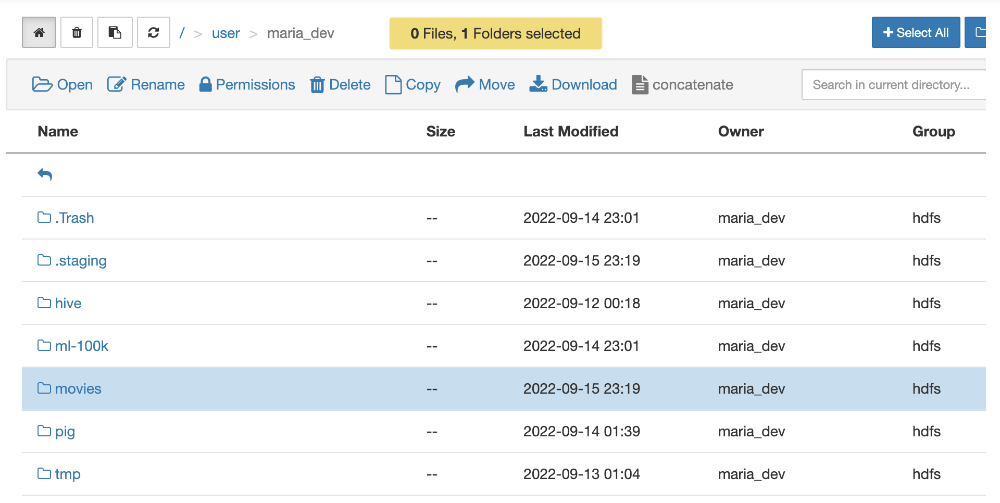
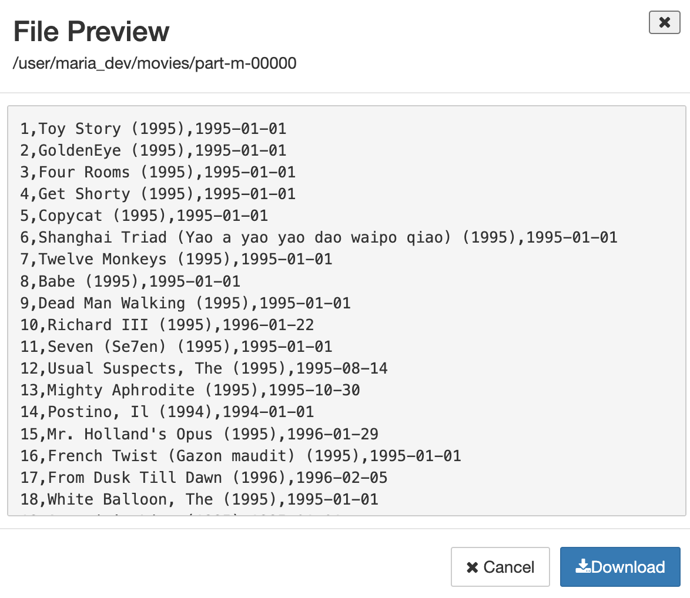
Import the movies into Hive
bash
[maria_dev@sandbox-hdp ~]$ sqoop import --connect jdbc:mysql://localhost/movielens --driver com.mysql.jdbc.Driver --table movies -m 1 --username root --password hadoop --hive-import
Warning: /usr/hdp/2.6.5.0-292/accumulo does not exist! Accumulo imports will fail.
...
22/09/15 15:45:43 INFO hive.HiveImport: Loading uploaded data into Hive
Logging initialized using configuration in jar:file:/usr/hdp/2.6.5.0-292/hive/lib/hive-common-1.2.1000.2.6.5.0-292.jar!/hive-log4j.properties
OK
Time taken: 14.802 seconds
Loading data to table default.movies
Failed with exception org.apache.hadoop.security.AccessControlException: User null does not belong to hadoop
at org.apache.hadoop.hdfs.server.namenode.FSDirAttrOp.setOwner(FSDirAttrOp.java:89)
at org.apache.hadoop.hdfs.server.namenode.FSNamesystem.setOwner(FSNamesystem.java:1877)
at org.apache.hadoop.hdfs.server.namenode.NameNodeRpcServer.setOwner(NameNodeRpcServer.java:828)
at org.apache.hadoop.hdfs.protocolPB.ClientNamenodeProtocolServerSideTranslatorPB.setOwner(ClientNamenodeProtocolServerSideTranslatorPB.java:476)
at org.apache.hadoop.hdfs.protocol.proto.ClientNamenodeProtocolProtos$ClientNamenodeProtocol$2.callBlockingMethod(ClientNamenodeProtocolProtos.java)
at org.apache.hadoop.ipc.ProtobufRpcEngine$Server$ProtoBufRpcInvoker.call(ProtobufRpcEngine.java:640)
at org.apache.hadoop.ipc.RPC$Server.call(RPC.java:982)
at org.apache.hadoop.ipc.Server$Handler$1.run(Server.java:2351)
at org.apache.hadoop.ipc.Server$Handler$1.run(Server.java:2347)
at java.security.AccessController.doPrivileged(Native Method)
at javax.security.auth.Subject.doAs(Subject.java:422)
at org.apache.hadoop.security.UserGroupInformation.doAs(UserGroupInformation.java:1869)
at org.apache.hadoop.ipc.Server$Handler.run(Server.java:2347)
FAILED: Execution Error, return code 1 from org.apache.hadoop.hive.ql.exec.MoveTask
## actually succeed
Export the movies back into MySQL
The movies file actually resides in
/apps/hive/warehouse/movies/bash
[maria_dev@sandbox-hdp ~]$ mysql -u root -p
Enter password:
Welcome to the MySQL monitor. Commands end with ; or \g.
Your MySQL connection id is 99
Server version: 5.7.22 MySQL Community Server (GPL)
Copyright (c) 2000, 2018, Oracle and/or its affiliates. All rights reserved.
Oracle is a registered trademark of Oracle Corporation and/or its
affiliates. Other names may be trademarks of their respective
owners.
Type 'help;' or '\h' for help. Type '\c' to clear the current input statement.
mysql> use movielens;
Reading table information for completion of table and column names
You can turn off this feature to get a quicker startup with -A
Database changed
mysql> CREATE TABLE exported_movies (id INTEGER, title VARCHAR(255), releaseDate DATE);
Query OK, 0 rows affected (0.04 sec)
mysql> exit
Bye
[maria_dev@sandbox-hdp ~]$ sqoop export --connect jdbc:mysql://localhost/movielens -m 1 --driver com.mysql.jdbc.Driver --table exported_movies --export-dir /apps/hive/warehouse/movies/ --input-fields-terminated-by '\001' --username root --password hadoop
...
22/09/15 16:00:38 INFO mapreduce.ExportJobBase: Transferred 65.5303 KB in 46.2457 seconds (1.417 KB/sec)
22/09/15 16:00:38 INFO mapreduce.ExportJobBase: Exported 1682 records.
[maria_dev@sandbox-hdp ~]$ mysql -u root -p
mysql> select * from movielens.exported_movies limit 10;
+------+------------------------------------------------------+-------------+
| id | title | releaseDate |
+------+------------------------------------------------------+-------------+
| 1 | Toy Story (1995) | 1995-01-01 |
| 2 | GoldenEye (1995) | 1995-01-01 |
| 3 | Four Rooms (1995) | 1995-01-01 |
| 4 | Get Shorty (1995) | 1995-01-01 |
| 5 | Copycat (1995) | 1995-01-01 |
| 6 | Shanghai Triad (Yao a yao yao dao waipo qiao) (1995) | 1995-01-01 |
| 7 | Twelve Monkeys (1995) | 1995-01-01 |
| 8 | Babe (1995) | 1995-01-01 |
| 9 | Dead Man Walking (1995) | 1995-01-01 |
| 10 | Richard III (1995) | 1996-01-22 |
+------+------------------------------------------------------+-------------+
10 rows in set (0.00 sec)
Section 6: Using non-relational data stores with Hadoop
NoSQL
Features
Random Access to Planet-Size Data
Speed up the answer on massive dataset under high transaction env
Give me all the stuff of this keyIF NOT -- Painful: Scaling up MySQL etc. to massive loads requires extreme measures
Denormalization
Caching layers (MemCached)
Master/slave setups
Sharding
Materialized views
Removing stored procedures
Sample Architecture
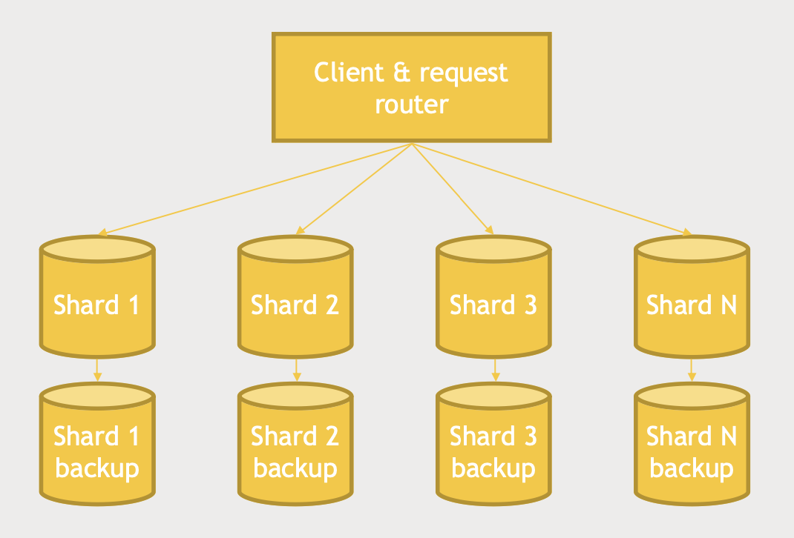
Use the right tool for the job
For analytic queries, Hive, Pig, Spark, etc. work great.
Exporting data to MySQL is plenty fast for most applications too.
But if you work at giant scale – export your data to a non-relational database for fast and scalable serving of that data to web applications, etc.
Sample Application Architecture
Choose a database design that meets your usage patterns
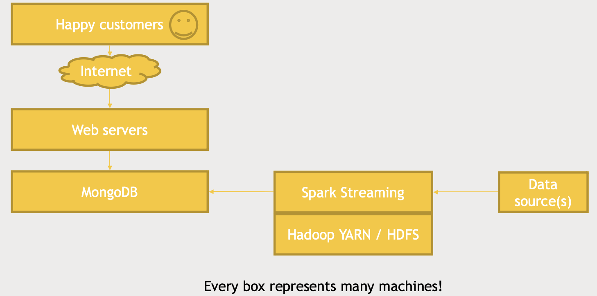
HBase
Non-relational, scalable database built on HDFS
Based on Google’s BigTable
CRUD
Create
Read
Update
Delete
There is no query language, only CRUD API’s!
HBase Architecture
Region: Range of keys (like sharding)
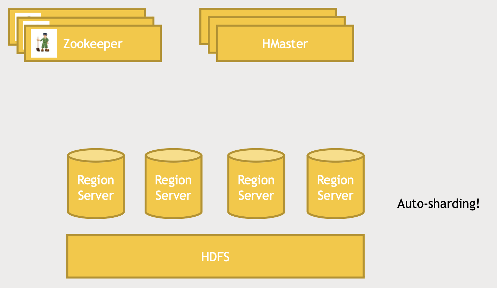
HBase data model
Fast access to any given ROW
A ROW is referenced by a unique KEY
Each ROW has some small number of COLUMN FAMILIES
not defining a fixed set of columns for each row
A COLUMN FAMILY may contain arbitrary COLUMNS
You can have a very large number of COLUMNS in a COLUMN FAMILY
Each CELL can have many VERSIONS with given timestamps
Sparse data is A-OK – missing columns in a row consume no storage.
Example: One row of a web table
find out all pages linked to www.cnn.com
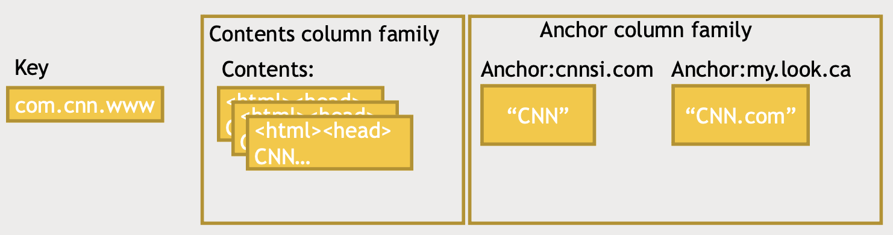
Some ways to access HBase
HBase shell
Java API
Wrappers for Python, Scala, etc.
Spark, Hive, Pig
REST service
Thrift service
Avro service
Hands-on
Create a HBase table for movie ratings by user
Then show we can quickly query it for individual users
Good example of sparse data
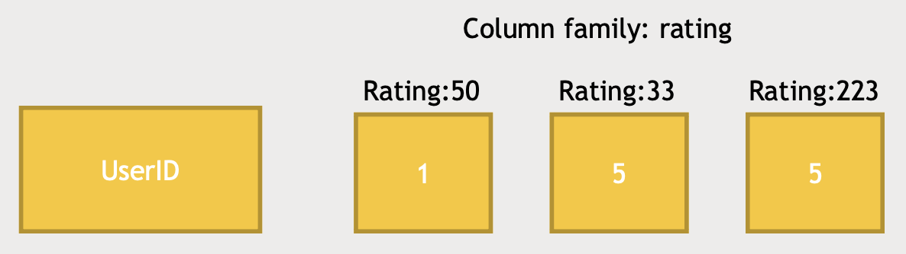 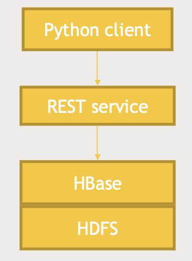
Add on port forwarding rule to virtualbox env -- HBase REST
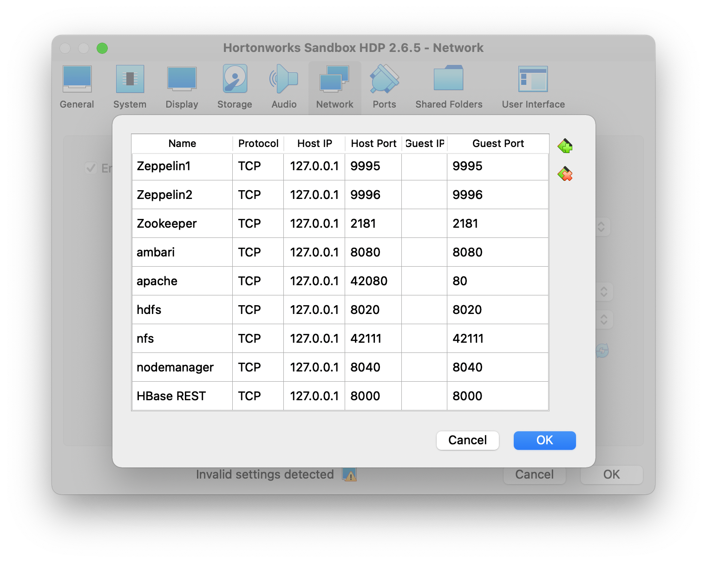
operate on Python
python
from starbase import Connection
c = Connection("127.0.0.1", "8000")
# create table ratings
ratings = c.table('ratings')
if (ratings.exists()):
print("Dropping existing ratings table\n")
ratings.drop()
# create column family named rating
ratings.create('rating')
print("Parsing the ml-100k ratings data...\n")
ratingFile = open("/Users/Amphetamine/Downloads/Udemy-BigData/ml-100k/u.data", "r")
batch = ratings.batch()
for line in ratingFile:
(userID, movieID, rating, timestamp) = line.split()
batch.update(userID, {'rating': {movieID: rating}})
ratingFile.close()
print ("Committing ratings data to HBase via REST service\n")
batch.commit(finalize=True)
print ("Get back ratings for some users...\n")
print ("Ratings for user ID 1:\n")
print (ratings.fetch("1"))
print ("Ratings for user ID 33:\n")
print (ratings.fetch("33"))
ratings.drop()
bash
# on hdp
[root@sandbox-hdp maria_dev]# /usr/hdp/current/hbase-master/bin/hbase-daemon.sh start rest -p 8000 --infoport 8002
starting rest, logging to /var/log/hbase/hbase-maria_dev-rest-sandbox-hdp.hortonworks.com.out
(base) Amphe-2:HadoopMaterials Amphetamine$ python HBaseExamples.py
Parsing the ml-100k ratings data...
Committing ratings data to HBase via REST service
Get back ratings for some users...
Ratings for user ID 1:
{'rating': {'1': '5', '10': '3', '100': '5', '101': '2', ......., '99': '3'}}
Ratings for user ID 33:
{'rating': {'245': '3', '258': '4', '260': '4', '271': '4', ......, '895': '3'}}
# on hdp
[root@sandbox-hdp maria_dev]# /usr/hdp/current/hbase-master/bin/hbase-daemon.sh stop rest
Hands-on: Integrating Pig with HBase
Must create HBase table ahead of time
Your relation must have a unique key as its first column, followed by
subsequent columns as you want them saved in Hbase
USING clause allows you to STORE into an HBase table
Can work at scale – Hbase is transactional on rowsdd
bash
[root@sandbox-hdp maria_dev]# hbase sehll
Error: Could not find or load main class sehll
[root@sandbox-hdp maria_dev]# hbase shell
HBase Shell; enter 'help<RETURN>' for list of supported commands.
Type "exit<RETURN>" to leave the HBase Shell
Version 1.1.2.2.6.5.0-292, r897822d4dd5956ca186974c10382e9094683fa29, Fri May 11 08:00:59 UTC 2018
hbase(main):001:0> list
TABLE
ATLAS_ENTITY_AUDIT_EVENTS
atlas_titan
2 row(s) in 0.6920 seconds
=> ["ATLAS_ENTITY_AUDIT_EVENTS", "atlas_titan"]
hbase(main):002:0> create 'users', 'userinfo'
0 row(s) in 2.3240 seconds
=> Hbase::Table - users
hbase(main):003:0> list
TABLE
ATLAS_ENTITY_AUDIT_EVENTS
atlas_titan
users
3 row(s) in 0.0120 seconds
=> ["ATLAS_ENTITY_AUDIT_EVENTS", "atlas_titan", "users"]
hbase(main):004:0> exit
[root@sandbox-hdp maria_dev]# wget http://media.sundog-soft.com/hadoop/hbase.pig
## hbase.pig
users = LOAD '/user/maria_dev/ml-100k/u.user'
USING PigStorage('|')
AS (userID:int, age:int, gender:chararray, occupation:chararray, zip:int);
STORE users INTO 'hbase://users'
USING org.apache.pig.backend.hadoop.hbase.HBaseStorage (
'userinfo:age,userinfo:gender,userinfo:occupation,userinfo:zip');
[root@sandbox-hdp maria_dev]# pig hbase.pig
...
[root@sandbox-hdp maria_dev]# hbase shell
HBase Shell; enter 'help<RETURN>' for list of supported commands.
Type "exit<RETURN>" to leave the HBase Shell
Version 1.1.2.2.6.5.0-292, r897822d4dd5956ca186974c10382e9094683fa29, Fri May 11 08:00:59 UTC 2018
hbase(main):001:0> list
TABLE
ATLAS_ENTITY_AUDIT_EVENTS
atlas_titan
users
3 row(s) in 0.2680 seconds
=> ["ATLAS_ENTITY_AUDIT_EVENTS", "atlas_titan", "users"]
hbase(main):002:0> scan 'users'
ROW COLUMN+CELL
1 column=userinfo:age, timestamp=1663271151696, value=24
1 column=userinfo:gender, timestamp=1663271151696, value=M
1 column=userinfo:occupation, timestamp=1663271151696, value=technician
1 column=userinfo:zip, timestamp=1663271151696, value=85711
10 column=userinfo:age, timestamp=1663271151754, value=53
10 column=userinfo:gender, timestamp=1663271151754, value=M
10 column=userinfo:occupation, timestamp=1663271151754, value=lawyer
10 column=userinfo:zip, timestamp=1663271151754, value=90703
100 column=userinfo:age, timestamp=1663271151852, value=36
100 column=userinfo:gender, timestamp=1663271151852, value=M
hbase(main):003:0> disable 'users'
hbase(main):003:0> drop 'users'
Cassandra -- A distributed database with no single point of failure
NoSQL with a twist
Unlike HBase, there is no master node at all – every node runs exactly the same software and performs the same functions
Data model is similar to BigTable / Hbase
It’s non-relational, but has a limited CQL query language as its interface (like SQL, but limited to NoSQL)
Cassandra’s Design Choices
The CAP Theorem says you can only have 2 out of 3:
consistency
if writing new values, immediately expect the new values
availability
reliable and always up and running, redundant
partition-tolerance
easily split up and distributed across clusters
And partition-tolerance is a requirement with “big data,” so you really only get to choose between consistency and availability
Cassandra favors availability over consistency
It is “eventually consistent” (may delay a second or 2)
But you can specify your consistency requirements as part of your requests. So really it’s “tunable consistency”
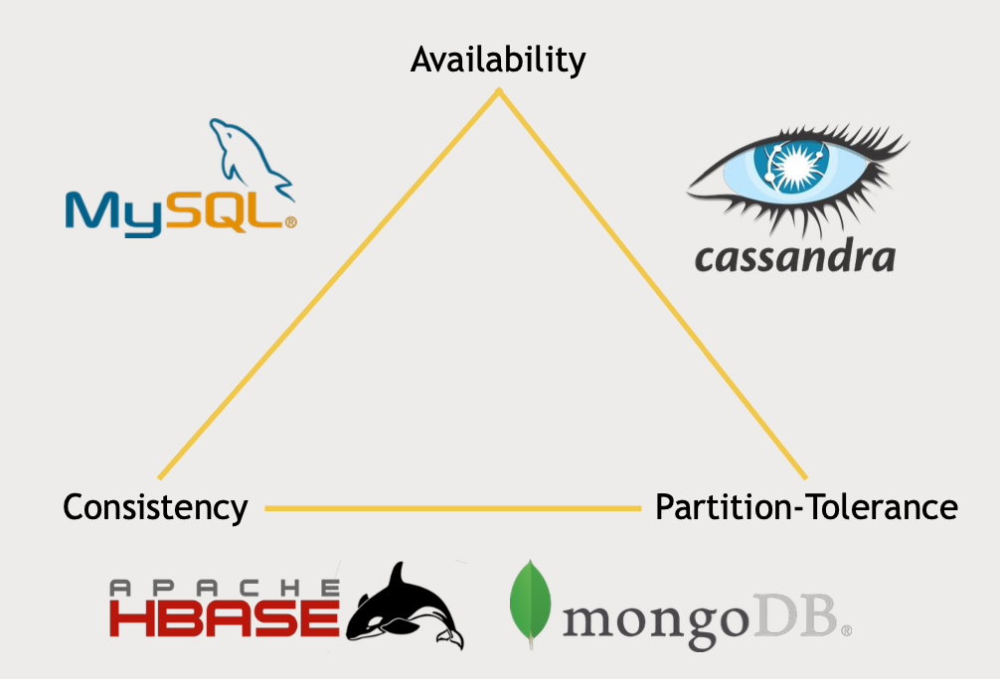
Cassandra HA
Gossip protocol: every node in your cluster is communicating with each other every second to keep track. Every node is performing same operations and functions
Talk to a node, get to know where the requested data sit then retrieve
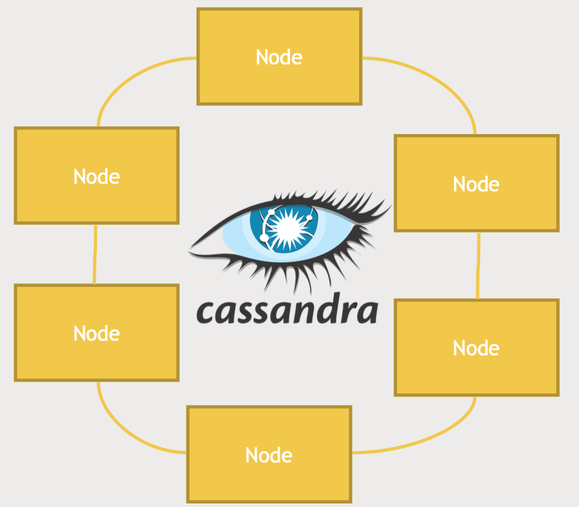
Cassandra and your cluster
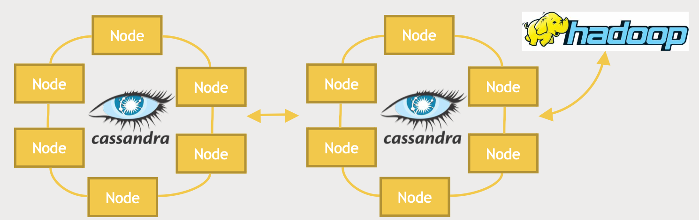
Cassandra’s great for fast access to rows of information
Get the best of both worlds – replicate Cassandra to a another ring that is used for analytics and Spark integration
CQL (Wait, I thought this was NoSQL!)
Cassandra’s API is CQL, which makes it easy to look like existing database drivers to applications.
CQL is like SQL, but with some big limitations!
NO JOINS
Your data must be de-normalized
So, it’s still non-relational
All queries must be on some primary key
Secondary indices are supported, but...
CQLSH can be used on the command line to create tables, etc.
All tables must be in a keyspace – keyspaces are like databases
Cassandra and Spark
DataStax offers a Spark-Cassandra connector
Allows you to read and write Cassandra tables as DataFrames (Spark - CQL translation)
Is smart about passing queries on those DataFrames down to the appropriate level
Use cases:
Use Spark for analytics on data stored in Cassandra
Use Spark to transform data and store it into Cassandra for transactional use
Hands-on
In the next lecture, we'll install Cassandra into your sandbox. It's a complicated process, and a lot can go wrong. Really, if you're not pretty comfortable with Linux, you might want to just watch the exercises that involve Cassandra instead of running them yourself.
One common issue is ending up in a state where your RPM database (which keeps track of what packages you have installed on your system) becomes corrupt. You'll experience this as seeing an error message like this:
rpmts_HdrFromFdno – error: rpmdbNextIterator – Header V3 RSA/SHA1 Signature, key ID BADIf you encounter this, "yum" will no longer work at all. But, there is a way to fix it.
Just enter the following commands (you can paste them into PuTTY by right-clicking in the PuTTY terminal window after copying them; and be sure you've already run "
su root" to run the following as the root user:)bash
cd ~
wget http://mirror.centos.org/centos/6/os/x86_64/Packages/nss-softokn-freebl-3.14.3-23.3.el6_8.x86_64.rpm
rpm2cpio http://mirror.centos.org/centos/6/os/x86_64/Packages/nss-softokn-freebl-3.14.3-23.3.el6_8.x86_64.rpm | cpio -idmv
cp ./lib64/libfreeblpriv3.* /lib64
Now, yum should work again. Note that if you do a big "yum update" and the ssl library is updated, you may lose your connection via PuTTY. If you're disconnected, wait a couple of minutes to allow yum to finish what it's doing, issue an ACPI Shutdown command to the virtual machine (via the Machine menu,) restart the sandbox, and connect again.
And if that didn't work, you can try following the similar instructions at https://techjourney.net/centos-yum-rpm-error-rpmts_hdrfromfdno-rpmdbnextiterator-header-v3-rsasha1-signature-key-id-bad/ instead (follow the steps for x64 CentOS.)
Install Cassandra on our virtual Hadoop node
bash
[maria_dev@sandbox-hdp ~]$ su root
Password:
[root@sandbox-hdp maria_dev]# python --version
Python 2.7.5
[root@sandbox-hdp maria_dev]# cd /etc/yum.repos.d
[root@sandbox-hdp yum.repos.d]# ls
CentOS-Base.repo CentOS-fasttrack.repo ius-archive.repo
CentOS-CR.repo ambari-hdp-1.repo ius-testing.repo
CentOS-Debuginfo.repo ambari.repo ius.repo
CentOS-Media.repo epel-testing.repo mysql.repo
CentOS-Sources.repo epel.repo
CentOS-Vault.repo hdp-solr.repo
[root@sandbox-hdp yum.repos.d]# vi datastax.repo
[root@sandbox-hdp yum.repos.d]# cat datastax.repo
[datastax]
name = DataStax Repo for Apache Cassandra
baseurl = http://rpm.datastax.com/community
enabled = 1
gpgcheck = 0
[root@sandbox-hdp yum.repos.d]# yum install dsc30
...
Loading mirror speeds from cached hostfile
* base: mirror.vodien.com
* epel: download.nus.edu.sg
* extras: mirror.vodien.com
* updates: mirror.vodien.com
Resolving Dependencies
--> Running transaction check
---> Package dsc30.noarch 0:3.0.9-1 will be installed
--> Processing Dependency: cassandra30 = 3.0.9 for package: dsc30-3.0.9-1.noarch
--> Running transaction check
---> Package cassandra30.noarch 0:3.0.9-1 will be installed
--> Finished Dependency Resolution
Dependencies Resolved
================================================================================
Package Arch Version Repository Size
================================================================================
Installing:
dsc30 noarch 3.0.9-1 datastax 1.9 k
Installing for dependencies:
cassandra30 noarch 3.0.9-1 datastax 24 M
Transaction Summary
================================================================================
Install 1 Package (+1 Dependent package)
Total download size: 24 M
Installed size: 31 M
Is this ok [y/d/N]: y
Downloading packages:
(1/2): dsc30-3.0.9-1.noarch.rpm | 1.9 kB 00:01
(2/2): cassandra30-3.0.9-1.noarch.rpm | 24 MB 00:25
--------------------------------------------------------------------------------
Total 969 kB/s | 24 MB 00:25
Running transaction check
Running transaction test
Transaction test succeeded
Running transaction
Installing : cassandra30-3.0.9-1.noarch 1/2
Installing : dsc30-3.0.9-1.noarch 2/2
Verifying : cassandra30-3.0.9-1.noarch 1/2
Verifying : dsc30-3.0.9-1.noarch 2/2
Installed:
dsc30.noarch 0:3.0.9-1
Dependency Installed:
cassandra30.noarch 0:3.0.9-1
Complete!
[root@sandbox-hdp yum.repos.d]# service cassandra start
Reloading systemd: [ OK ]
Starting cassandra (via systemctl): [ OK ]
Set up a table for MovieLens users
bash
[root@sandbox-hdp yum.repos.d]# cqlsh --cqlversion="3.4.0"
Connected to Test Cluster at 127.0.0.1:9042.
[cqlsh 5.0.1 | Cassandra 3.0.9 | CQL spec 3.4.0 | Native protocol v4]
Use HELP for help.
cqlsh> CREATE KEYSPACE movielens WITH replication = {'class': 'SimpleStrategy', 'replication_factor': '1'} AND durable_writes = true;
cqlsh> USE movielens;
cqlsh:movielens> CREATE TABLE users (user_id int, age int, gender text, occupation text, zip text, PRIMARY KEY (user_id));
cqlsh:movielens> DESCRIBE TABLE users;
CREATE TABLE movielens.users (
user_id int PRIMARY KEY,
age int,
gender text,
occupation text,
zip text
) WITH bloom_filter_fp_chance = 0.01
AND caching = {'keys': 'ALL', 'rows_per_partition': 'NONE'}
AND comment = ''
AND compaction = {'class': 'org.apache.cassandra.db.compaction.SizeTieredCompactionStrategy', 'max_threshold': '32', 'min_threshold': '4'}
AND compression = {'chunk_length_in_kb': '64', 'class': 'org.apache.cassandra.io.compress.LZ4Compressor'}
AND crc_check_chance = 1.0
AND dclocal_read_repair_chance = 0.1
AND default_time_to_live = 0
AND gc_grace_seconds = 864000
AND max_index_interval = 2048
AND memtable_flush_period_in_ms = 0
AND min_index_interval = 128
AND read_repair_chance = 0.0
AND speculative_retry = '99PERCENTILE';
cqlsh:movielens> SELECT * FROM users;
user_id | age | gender | occupation | zip
---------+-----+--------+------------+-----
(0 rows)
Write into that table and query it from Spark!
python
from pyspark.sql import SparkSession
from pyspark.sql import Row
from pyspark.sql import functions
def parseInput(line):
fields = line.split('|')
return Row(user_id = int(fields[0]), age = int(fields[1]), gender = fields[2], occupation = fields[3], zip = fields[4])
if __name__ == "__main__":
# Create a SparkSession
spark = SparkSession.builder.appName("CassandraIntegration").config("spark.cassandra.connection.host", "127.0.0.1").getOrCreate()
# Get the raw data
lines = spark.sparkContext.textFile("hdfs:///user/maria_dev/ml-100k/u.user")
# Convert it to a RDD of Row objects with (userID, age, gender, occupation, zip)
users = lines.map(parseInput)
# Convert that to a DataFrame
usersDataset = spark.createDataFrame(users)
# Write it into Cassandra
usersDataset.write\
.format("org.apache.spark.sql.cassandra")\
.mode('append')\
.options(table="users", keyspace="movielens")\
.save()
# Read it back from Cassandra into a new Dataframe
readUsers = spark.read\
.format("org.apache.spark.sql.cassandra")\
.options(table="users", keyspace="movielens")\
.load()
readUsers.createOrReplaceTempView("users")
sqlDF = spark.sql("SELECT * FROM users WHERE age < 20")
sqlDF.show()
# Stop the session
spark.stop()
bash
[root@sandbox-hdp yum.repos.d]# wget http://media.sundog-soft.com/hadoop/CassandraSpark.py
[root@sandbox-hdp yum.repos.d]# export SPARK_MAJOR_VERSION=2
[root@sandbox-hdp yum.repos.d]# spark-submit --packages com.datastax.spark:spark-cassandra-connector_2.11:2.3.0 CassandraSpark.py
SPARK_MAJOR_VERSION is set to 2, using Spark2
Ivy Default Cache set to: /root/.ivy2/cache
The jars for the packages stored in: /root/.ivy2/jars
...
downloading https://repo1.maven.org/maven2/com/datastax/spark/spark-cassandra-connector_2.11/2.3.0/spark-cassandra-connector_2.11-2.3.0.jar ...
[SUCCESSFUL ] com.datastax.spark#spark-cassandra-connector_2.11;2.3.0!spark-cassandra-connector_2.11.jar (28303ms)
downloading https://repo1.maven.org/maven2/com/twitter/jsr166e/1.1.0/jsr166e-1.1.0.jar ...
[SUCCESSFUL ] com.twitter#jsr166e;1.1.0!jsr166e.jar (445ms)
downloading https://repo1.maven.org/maven2/commons-beanutils/commons-beanutils/1.9.3/commons-beanutils-1.9.3.jar ...
[SUCCESSFUL ] commons-beanutils#commons-beanutils;1.9.3!commons-beanutils.jar (635ms)
downloading https://repo1.maven.org/maven2/joda-time/joda-time/2.3/joda-time-2.3.jar ...
[SUCCESSFUL ] joda-time#joda-time;2.3!joda-time.jar (1063ms)
downloading https://repo1.maven.org/maven2/org/joda/joda-convert/1.2/joda-convert-1.2.jar ...
[SUCCESSFUL ] org.joda#joda-convert;1.2!joda-convert.jar (264ms)
downloading https://repo1.maven.org/maven2/io/netty/netty-all/4.0.33.Final/netty-all-4.0.33.Final.jar ...
[SUCCESSFUL ] io.netty#netty-all;4.0.33.Final!netty-all.jar (3802ms)
downloading https://repo1.maven.org/maven2/org/scala-lang/scala-reflect/2.11.8/scala-reflect-2.11.8.jar ...
[SUCCESSFUL ] org.scala-lang#scala-reflect;2.11.8!scala-reflect.jar (12473ms)
downloading https://repo1.maven.org/maven2/commons-collections/commons-collections/3.2.2/commons-collections-3.2.2.jar ...
[SUCCESSFUL ] commons-collections#commons-collections;3.2.2!commons-collections.jar (1943ms)
:: resolution report :: resolve 19432ms :: artifacts dl 48958ms
:: modules in use:
com.datastax.spark#spark-cassandra-connector_2.11;2.3.0 from central in [default]
com.twitter#jsr166e;1.1.0 from central in [default]
commons-beanutils#commons-beanutils;1.9.3 from central in [default]
commons-collections#commons-collections;3.2.2 from central in [default]
io.netty#netty-all;4.0.33.Final from central in [default]
joda-time#joda-time;2.3 from central in [default]
org.joda#joda-convert;1.2 from central in [default]
org.scala-lang#scala-reflect;2.11.8 from central in [default]
---------------------------------------------------------------------
| | modules || artifacts |
| conf | number| search|dwnlded|evicted|| number|dwnlded|
---------------------------------------------------------------------
| default | 8 | 8 | 8 | 0 || 8 | 8 |
---------------------------------------------------------------------
22/09/16 18:16:03 INFO DAGScheduler: Job 3 finished: showString at NativeMethodAccessorImpl.java:0, took 0.346564 s
+-------+---+------+-------------+-----+
|user_id|age|gender| occupation| zip|
+-------+---+------+-------------+-----+
| 223| 19| F| student|47906|
| 462| 19| F| student|02918|
| 550| 16| F| student|95453|
| 289| 11| M| none|94619|
| 521| 19| M| student|02146|
| 281| 15| F| student|06059|
| 36| 19| F| student|93117|
| 347| 18| M| student|90210|
| 68| 19| M| student|22904|
| 341| 17| F| student|44405|
| 179| 15| M|entertainment|20755|
| 620| 18| F| writer|81648|
| 863| 17| M| student|60089|
| 904| 17| F| student|61073|
| 588| 18| F| student|93063|
| 30| 7| M| student|55436|
| 528| 18| M| student|55104|
| 674| 13| F| student|55337|
| 375| 17| M|entertainment|37777|
| 851| 18| M| other|29646|
+-------+---+------+-------------+-----+
only showing top 20 rows
[root@sandbox-hdp yum.repos.d]# cqlsh --cqlversion="3.4.0"
Connected to Test Cluster at 127.0.0.1:9042.
[cqlsh 5.0.1 | Cassandra 3.0.9 | CQL spec 3.4.0 | Native protocol v4]
Use HELP for help.
cqlsh> USE movielens;
cqlsh:movielens> SELECT * FROM users LIMIT 10;
user_id | age | gender | occupation | zip
---------+-----+--------+------------+-------
769 | 39 | M | executive | 06927
23 | 30 | F | artist | 48197
114 | 27 | M | programmer | 75013
660 | 26 | M | student | 77380
893 | 25 | M | student | 95823
53 | 26 | M | programmer | 55414
878 | 50 | F | educator | 98027
110 | 19 | M | student | 77840
91 | 55 | M | marketing | 01913
128 | 24 | F | marketing | 20009
(10 rows)
[root@sandbox-hdp yum.repos.d]# service cassandra stop
Stopping cassandra (via systemctl): [ OK ]
MongoDB
Example of MongoDB documet
json
## Looks like JSON. Example:
{
"_id" : ObjectID("7b33e366ae32223aee34fd3"),
"title" : "A blog post about MongoDB",
"content" : "This is a blog post about MongoDB",
"comments": [
{
"name" : "Frank",
"email" : "fkane@sundog-soft.com",
"content" : "This is the best article ever written!".
"rating" : 1
}
]
}
No real schema is enforced. (if defined, MongoDB will adhere to it)
You can have different fields in every document if you want to (sacrifice speed querying)
No single “key” as in other databases (auto add on unique ID)
But you can create indices on any fields you want, or even combinations of fields.
If you want to “shard”, then you must do so on some index.
Results in a lot of flexibility
But with great power comes great responsibility
MongoDB terminology
Databases
Collections (same level as tables)
Documents (same level as rows)
MongoDB’s kinda corporate-y
Replication Sets (Prefer consistency over availability)
Single-master!
Maintains backup copies of your database instance
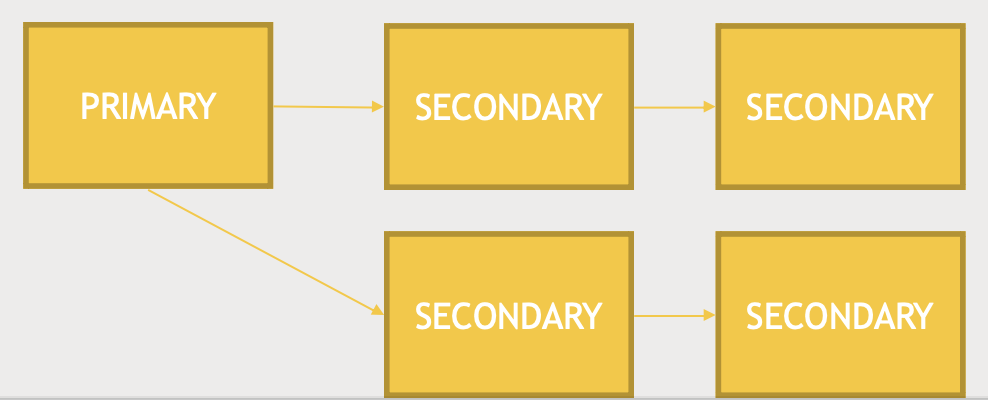
Secondaries can elect a new primary within seconds if your primary goes down
But make sure your operation log is long enough to give you time to recover the primary when it comes back...
Replica Set Quirks
A majority of the servers in your set must agree on the primary
Even numbers of servers (like 2) don’t work well
Don’t want to spend money on 3 servers? You can set up an ‘arbiter’ node
But only one
Apps must know about enough servers in the replica set to be able to reach one to learn who’s primary
Replicas only address durability, not your ability to scale
Well, unless you can take advantage of reading from secondaries – which generally isn’t recommended
And your DB will still go into read-only mode for a bit while a new primary is elected
Delayed secondaries can be set up as insurance against people doing dumb things
Sharding
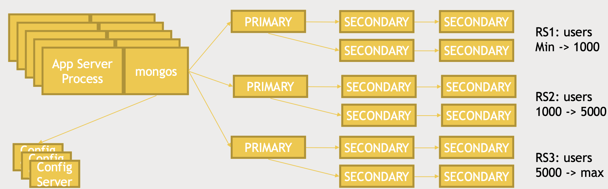
Finally – “big data”
Ranges of some indexed value you specify are assigned to different replica sets
Sharding Quirks
Auto-sharding sometimes doesn’t work
Split storms, mongos processes restarted too often
You must have 3 config servers (MongoDB < 3.2)
And if any one goes down, your DB is down
This is on top of the single-master design of replica sets
In Current versions config servers are part of replica set, it just has to have a primary
MongoDB’s loose document model can be at odds with effective sharding
Neat Things About MongoDB
It’s not just a NoSQL database – very flexible document model
Shell is a full JavaScript interpreter
Supports many indices
But only one can be used for sharding
More than 2-3 are still discouraged
Full-text indices for text searches
Spatial indices (latitudes and longtitudes)
Built-in aggregation capabilities, MapReduce, GridFS
For some applications you might not need Hadoop at all
But MongoDB still integrates with Hadoop, Spark, and most languages
A SQL connector is available
– But MongoDB still isn’t designed for joins and normalized data really.
Hands-on
integrate MongoDB with Spark
bash
[root@sandbox-hdp maria_dev]# cd /var/lib/ambari-server/resources/stacks
[root@sandbox-hdp stacks]# ls
BigInsights service_advisor.py service_advisor.pyo stack_advisor.pyc
HDP service_advisor.pyc stack_advisor.py stack_advisor.pyo
[root@sandbox-hdp stacks]# cd HDP/
[root@sandbox-hdp HDP]# ls
2.0 2.0.6 2.0.6.GlusterFS 2.1 2.1.GlusterFS 2.2 2.3 2.3.ECS 2.3.GlusterFS 2.4 2.5 2.6
[root@sandbox-hdp HDP]# cd 2.6
[root@sandbox-hdp 2.6]# cd services
[root@sandbox-hdp services]# pwd
/var/lib/ambari-server/resources/stacks/HDP/2.6/services
[root@sandbox-hdp services]# git clone https://github.com/nikunjness/mongo-ambari.git
Cloning into 'mongo-ambari'...
remote: Enumerating objects: 121, done.
remote: Total 121 (delta 0), reused 0 (delta 0), pack-reused 121
Receiving objects: 100% (121/121), 615.88 KiB | 0 bytes/s, done.
Resolving deltas: 100% (35/35), done.
[root@sandbox-hdp services]# sudo service ambari-server restart
Using python /usr/bin/python
Restarting ambari-server
Waiting for server stop...
Ambari Server stopped
Ambari Server running with administrator privileges.
Organizing resource files at /var/lib/ambari-server/resources...
Ambari database consistency check started...
Server PID at: /var/run/ambari-server/ambari-server.pid
Server out at: /var/log/ambari-server/ambari-server.out
Server log at: /var/log/ambari-server/ambari-server.log
Waiting for server start............................................
Server started listening on 8080
DB configs consistency check: no errors and warnings were found.
[root@sandbox-hdp services]# sudo service ambari-agent restart
Restarting ambari-agent
Verifying Python version compatibility...
Using python /usr/bin/python
Found ambari-agent PID: 370
Stopping ambari-agent
Removing PID file at /run/ambari-agent/ambari-agent.pid
ambari-agent successfully stopped
Verifying Python version compatibility...
Using python /usr/bin/python
Checking for previously running Ambari Agent...
Checking ambari-common dir...
Starting ambari-agent
Verifying ambari-agent process status...
Ambari Agent successfully started
Agent PID at: /run/ambari-agent/ambari-agent.pid
Agent out at: /var/log/ambari-agent/ambari-agent.out
Agent log at: /var/log/ambari-agent/ambari-agent.log
[root@sandbox-hdp services]# pip install pymongo==3.4.0
play around with the resulting database in the mongo shell
python
from pyspark.sql import SparkSession
from pyspark.sql import Row
from pyspark.sql import functions
def parseInput(line):
fields = line.split('|')
return Row(user_id = int(fields[0]), age = int(fields[1]), gender = fields[2], occupation = fields[3], zip = fields[4])
if __name__ == "__main__":
# Create a SparkSession
spark = SparkSession.builder.appName("MongoDBIntegration").getOrCreate()
# Get the raw data
lines = spark.sparkContext.textFile("hdfs:///user/maria_dev/ml-100k/u.user")
# Convert it to a RDD of Row objects with (userID, age, gender, occupation, zip)
users = lines.map(parseInput)
# Convert that to a DataFrame
usersDataset = spark.createDataFrame(users)
# Write it into MongoDB
usersDataset.write\
.format("com.mongodb.spark.sql.DefaultSource")\
.option("uri","mongodb://127.0.0.1/movielens.users")\
.mode('append')\
.save()
# Read it back from MongoDB into a new Dataframe
readUsers = spark.read\
.format("com.mongodb.spark.sql.DefaultSource")\
.option("uri","mongodb://127.0.0.1/movielens.users")\
.load()
readUsers.createOrReplaceTempView("users")
sqlDF = spark.sql("SELECT * FROM users WHERE age < 20")
sqlDF.show()
# Stop the session
spark.stop()
bash
[maria_dev@sandbox-hdp ~]$ wget http://media.sundog-soft.com/hadoop/MongoSpark.py
[maria_dev@sandbox-hdp ~]$ export SPARK_MAJOR_VERSION=2
[maria_dev@sandbox-hdp ~]$ spark-submit --packages org.mongodb.spark:mongo-spark-connector_2.11:2.3.3 MongoSpark.py
SPARK_MAJOR_VERSION is set to 2, using Spark2
...
:: modules in use:
org.mongodb#mongo-java-driver;3.10.2 from central in [default]
org.mongodb.spark#mongo-spark-connector_2.11;2.3.3 from central in [default]
---------------------------------------------------------------------
| | modules || artifacts |
| conf | number| search|dwnlded|evicted|| number|dwnlded|
---------------------------------------------------------------------
| default | 2 | 2 | 2 | 0 || 2 | 2 |
---------------------------------------------------------------------
22/09/17 06:17:57 INFO DAGScheduler: Job 3 finished: showString at NativeMethodAccessorImpl.java:0, took 0.067224 s
+--------------------+---+------+-------------+-------+-----+
| _id|age|gender| occupation|user_id| zip|
+--------------------+---+------+-------------+-------+-----+
|[63256691a77df07d...| 7| M| student| 30|55436|
|[63256691a77df07d...| 19| F| student| 36|93117|
|[63256691a77df07d...| 18| F| student| 52|55105|
|[63256691a77df07d...| 16| M| none| 57|84010|
|[63256691a77df07d...| 17| M| student| 67|60402|
|[63256691a77df07d...| 19| M| student| 68|22904|
|[63256691a77df07d...| 15| M| student| 101|05146|
|[63256691a77df07d...| 19| M| student| 110|77840|
|[63256691a77df07d...| 13| M| other| 142|48118|
|[63256691a77df07d...| 15| M|entertainment| 179|20755|
|[63256691a77df07d...| 14| F| student| 206|53115|
|[63256691a77df07d...| 19| M| student| 221|20685|
|[63256691a77df07d...| 19| F| student| 223|47906|
|[63256691a77df07d...| 19| M| student| 246|28734|
|[63256691a77df07d...| 17| M| student| 257|77005|
|[63256691a77df07d...| 19| F| student| 258|77801|
|[63256691a77df07d...| 19| F| student| 262|78264|
|[63256691a77df07d...| 18| F| student| 270|63119|
|[63256691a77df07d...| 15| F| student| 281|06059|
|[63256691a77df07d...| 11| M| none| 289|94619|
+--------------------+---+------+-------------+-------+-----+
only showing top 20 rows
# using MongoDB Shell
[maria_dev@sandbox-hdp ~]$ export LC_ALL=C
[maria_dev@sandbox-hdp ~]$ mongo
MongoDB shell version: 3.2.22
connecting to: test
Welcome to the MongoDB shell.
For interactive help, type "help".
For more comprehensive documentation, see
http://docs.mongodb.org/
Questions? Try the support group
http://groups.google.com/group/mongodb-user
Server has startup warnings:
2022-09-17T06:05:25.905+0000 I CONTROL [initandlisten]
2022-09-17T06:05:25.905+0000 I CONTROL [initandlisten] ** WARNING: /sys/kernel/mm/transparent_hugepage/enabled is 'always'.
2022-09-17T06:05:25.905+0000 I CONTROL [initandlisten] ** We suggest setting it to 'never'
2022-09-17T06:05:25.905+0000 I CONTROL [initandlisten]
2022-09-17T06:05:25.905+0000 I CONTROL [initandlisten] ** WARNING: soft rlimits too low. rlimits set to 4096 processes, 64000 files. Number of processes should be at least 32000 : 0.5 times number of files.
2022-09-17T06:05:25.905+0000 I CONTROL [initandlisten]
> use movielens
switched to db movielens
> db.users.find( {user_id: 100} )
{ "_id" : ObjectId("63256691a77df07de9446051"), "age" : NumberLong(36), "gender" : "M", "occupation" : "executive", "user_id" : NumberLong(100), "zip" : "90254" }
## to explain what is under the hood
> db.users.find( {user_id: 100} )
{ "_id" : ObjectId("63256691a77df07de9446051"), "age" : NumberLong(36), "gender" : "M", "occupation" : "executive", "user_id" : NumberLong(100), "zip" : "90254" }
# full scan on whole DB and find out user_id 100
> db.users.explain().find( {user_id: 100} )
{
"queryPlanner" : {
"plannerVersion" : 1,
"namespace" : "movielens.users",
"indexFilterSet" : false,
"parsedQuery" : {
"user_id" : {
"$eq" : 100
}
},
"winningPlan" : {
"stage" : "COLLSCAN",
"filter" : {
"user_id" : {
"$eq" : 100
}
},
"direction" : "forward"
},
"rejectedPlans" : [ ]
},
"serverInfo" : {
"host" : "sandbox-hdp.hortonworks.com",
"port" : 27017,
"version" : "3.2.22",
"gitVersion" : "105acca0d443f9a47c1a5bd608fd7133840a58dd"
},
"ok" : 1
}
# to add on index, 1 means ascending
> db.users.createIndex( {user_id: 1} )
{
"createdCollectionAutomatically" : false,
"numIndexesBefore" : 1,
"numIndexesAfter" : 2,
"ok" : 1
}
# instead of COLLSCAN, it uses IXSCAN (index)
> db.users.explain().find( {user_id: 100} )
{
"queryPlanner" : {
"plannerVersion" : 1,
"namespace" : "movielens.users",
"indexFilterSet" : false,
"parsedQuery" : {
"user_id" : {
"$eq" : 100
}
},
"winningPlan" : {
"stage" : "FETCH",
"inputStage" : {
"stage" : "IXSCAN",
"keyPattern" : {
"user_id" : 1
},
"indexName" : "user_id_1",
"isMultiKey" : false,
"isUnique" : false,
"isSparse" : false,
"isPartial" : false,
"indexVersion" : 1,
"direction" : "forward",
"indexBounds" : {
"user_id" : [
"[100.0, 100.0]"
]
}
}
},
"rejectedPlans" : [ ]
},
"serverInfo" : {
"host" : "sandbox-hdp.hortonworks.com",
"port" : 27017,
"version" : "3.2.22",
"gitVersion" : "105acca0d443f9a47c1a5bd608fd7133840a58dd"
},
"ok" : 1
}
> db.users.aggregate( [
... { $group: { _id: { occupation: "$occupation"}, avgAge: { $avg: "$age" } } }
... ] )
{ "_id" : { "occupation" : "doctor" }, "avgAge" : 43.57142857142857 }
{ "_id" : { "occupation" : "healthcare" }, "avgAge" : 41.5625 }
{ "_id" : { "occupation" : "none" }, "avgAge" : 26.555555555555557 }
{ "_id" : { "occupation" : "engineer" }, "avgAge" : 36.38805970149254 }
{ "_id" : { "occupation" : "homemaker" }, "avgAge" : 32.57142857142857 }
{ "_id" : { "occupation" : "marketing" }, "avgAge" : 37.61538461538461 }
{ "_id" : { "occupation" : "artist" }, "avgAge" : 31.392857142857142 }
{ "_id" : { "occupation" : "librarian" }, "avgAge" : 40 }
{ "_id" : { "occupation" : "entertainment" }, "avgAge" : 29.22222222222222 }
{ "_id" : { "occupation" : "scientist" }, "avgAge" : 35.54838709677419 }
{ "_id" : { "occupation" : "salesman" }, "avgAge" : 35.666666666666664 }
{ "_id" : { "occupation" : "educator" }, "avgAge" : 42.01052631578948 }
{ "_id" : { "occupation" : "lawyer" }, "avgAge" : 36.75 }
{ "_id" : { "occupation" : "student" }, "avgAge" : 22.081632653061224 }
{ "_id" : { "occupation" : "programmer" }, "avgAge" : 33.121212121212125 }
{ "_id" : { "occupation" : "administrator" }, "avgAge" : 38.74683544303797 }
{ "_id" : { "occupation" : "writer" }, "avgAge" : 36.31111111111111 }
{ "_id" : { "occupation" : "retired" }, "avgAge" : 63.07142857142857 }
{ "_id" : { "occupation" : "executive" }, "avgAge" : 38.71875 }
{ "_id" : { "occupation" : "other" }, "avgAge" : 34.523809523809526 }
Type "it" for more
> db.users.count()
943
> db.getCollectionInfos()
[ { "name" : "users", "options" : { } } ]
> db.users.drop()
Choosing a database technology
Factors
Integration considerations
Scaling requirements
Support considerations
Budget considerations
CAP considerations
Examples
You’re building an internal phone directory app
Scale: limited
Consistency: Eventual is fine
Availability requirements: not mission critical
MySQL is probably already installed on your web server...
MySQL
You want to mine web server logs for interesting patterns
What are the most popular times of day? What’s the average session length? Etc.
None of the above, can just use Hive/Spark on Hadoop
You have a big Spark job that produces movie recommendations for end users nightly
Something needs to vend this data to your web applications
You work for some huge company with massive scale
Downtime is not tolerated (availability)
Must be fast
Eventual consistency OK – it’s just reads
Cassandra
You’re building a massive stock trading system
Consistency is more important than anything
“Big data” is present
It’s really, really important – so having access to professional support might be a good idea. And you have enough budget to pay for it.
MongoDB
Section 7: Querying your Data Interactively
Where we stand
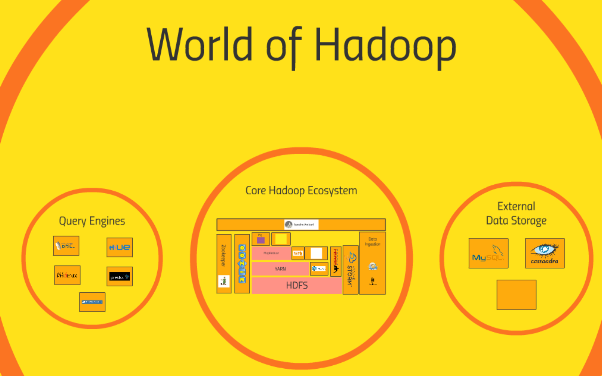
Query Engines
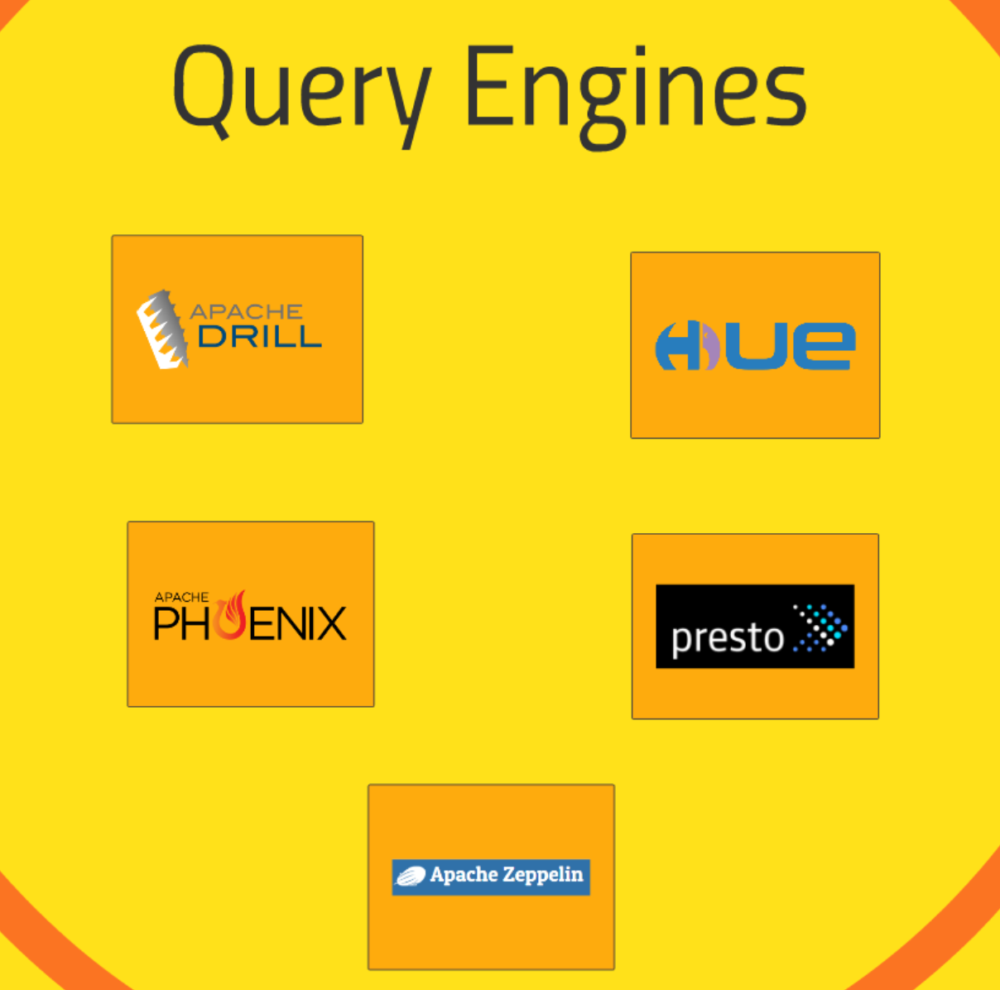
Apache Drill
Features
A SQL query engine for a variety of non-relational databases and data files
Hive, MongoDB, HBase
Even flat JSON or Parquet files on HDFS, S3, Azure, Google cloud, local file system
Based on Google’s Dremel
It’s real SQL (somehow can replace Hive)
Not SQL-Like
And it has a ODBC / JDBC driver so other tools can connect to it just like any relational database
It’s fast and pretty easy to set up.
But remember, these are still non-relational databases under the hood!
Allows SQL analysis of disparate data source without having to transform and load it first
Internally data is represented as JSON and so has no fixed schema
You can even do joins across different database technologies
Or with flat JSON files that are just sitting around
Hands-on:
import data into Hive and MongoDB
prep: drop from mongodb
bash
> db.getCollectionInfos()
[ ]
> use movielens
switched to db movielens
> db.getCollectionInfos()
[ { "name" : "users", "options" : { } } ]
> db.users.drop()
true
Hive
bash
CREATE DATABASE movielens;
## upload u.data as movielens.ratings
MongoDB
bash
[maria_dev@sandbox-hdp ~]$ su root
Password:
[root@sandbox-hdp maria_dev]# ls
LowestRatedMovieDataFrame.py TopMovies.py
LowestRatedMovieSpark.py exported_movies.java
LowestRatedPopularMovieDataFrame.py hbase.pig
LowestRatedPopularMovieSpark.py ml-100k
MongoSpark.py movielens.sql
MovieCount.py movies.java
MovieRecommendationsALS.py spark-warehouse
RatingsBreakdown.py u.data
Spark.zip
[root@sandbox-hdp maria_dev]# export SPARK_MAJOR_VERSION=2
[root@sandbox-hdp maria_dev]# spark-submit --packages org.mongodb.spark:mongo-spark-connector_2.11:2.3.3 MongoSpark.py
22/09/18 08:53:06 INFO DAGScheduler: Job 3 finished: showString at NativeMethodAccessorImpl.java:0, took 0.073679 s
+--------------------+---+------+----------+-------+-----+
| _id|age|gender|occupation|user_id| zip|
+--------------------+---+------+----------+-------+-----+
|[6326dc7028f0a136...| 18| F| student| 482|40256|
|[6326dc7028f0a136...| 18| F| writer| 507|28450|
|[6326dc7028f0a136...| 19| M| student| 521|02146|
|[6326dc7028f0a136...| 18| M| student| 528|55104|
|[6326dc7028f0a136...| 19| F| student| 541|84302|
|[6326dc7028f0a136...| 16| F| student| 550|95453|
|[6326dc7028f0a136...| 16| M| student| 580|17961|
|[6326dc7028f0a136...| 17| M| student| 582|93003|
|[6326dc7028f0a136...| 18| F| student| 588|93063|
|[6326dc7028f0a136...| 18| M| student| 592|97520|
|[6326dc7028f0a136...| 19| F| artist| 601|99687|
|[6326dc7028f0a136...| 13| F| student| 609|55106|
|[6326dc7028f0a136...| 15| F| student| 618|44212|
|[6326dc7028f0a136...| 17| M| student| 619|44134|
|[6326dc7028f0a136...| 18| F| writer| 620|81648|
|[6326dc7028f0a136...| 17| M| student| 621|60402|
|[6326dc7028f0a136...| 19| M| student| 624|30067|
|[6326dc7028f0a136...| 13| M| none| 628|94306|
|[6326dc7028f0a136...| 18| F| student| 631|38866|
|[6326dc7028f0a136...| 18| M| student| 632|55454|
+--------------------+---+------+----------+-------+-----+
only showing top 20 rows
Set up Drill on top of both
Drill
bash
[root@sandbox-hdp maria_dev]# wget http://archive.apache.org/dist/drill/drill-1.12.0/apache-drill-1.12.0.tar.gz
[root@sandbox-hdp maria_dev]# tar -xvf apache-drill-1.12.0.tar.gz
...
[root@sandbox-hdp maria_dev]# cd apache-drill-1.12.0
[root@sandbox-hdp apache-drill-1.12.0]# bin/drillbit.sh stop -Ddrill.exec.http.port=8765
Stopping drillbit
.
[root@sandbox-hdp apache-drill-1.12.0]# bin/drillbit.sh start -Ddrill.exec.http.port=8086
Starting drillbit, logging to /home/maria_dev/apache-drill-1.12.0/log/drillbit.out
Turn on storage
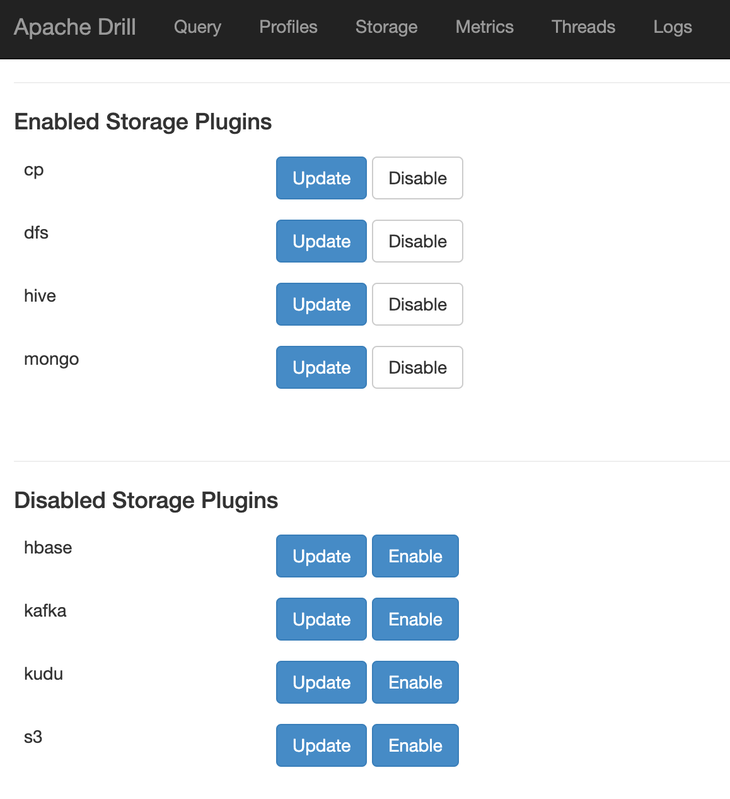
Config Hive
json
{
"type": "hive",
"enabled": true,
"configProps": {
"hive.metastore.uris": "thrift://localhost:9083",
"javax.jdo.option.ConnectionURL": "jdbc:derby:;databaseName=../sample-data/drill_hive_db;create=true",
"hive.metastore.warehouse.dir": "/tmp/drill_hive_wh",
"fs.default.name": "file:///",
"hive.metastore.sasl.enabled": "false"
}
}
And do some queries!
sql
SHOW DATABASES;
| SCHEMA_NAME |
|---|
| INFORMATION_SCHEMA |
| cp.default |
| dfs.default |
| dfs.root |
| dfs.tmp |
| hive.default |
| hive.foodmart |
| hive.movielens |
| mongo.local |
| mongo.movielens |
| sys |
sql
SELECT * FROM hive.movielens.ratings LIMIT 10;
| user_id | movie_id | rating | epoch_seconds |
|---|---|---|---|
| 0 | 50 | 5 | 881250949 |
| 0 | 172 | 5 | 881250949 |
| 0 | 133 | 1 | 881250949 |
| 196 | 242 | 3 | 881250949 |
| 186 | 302 | 3 | 891717742 |
| 22 | 377 | 1 | 878887116 |
| 244 | 51 | 2 | 880606923 |
| 166 | 346 | 1 | 886397596 |
| 298 | 474 | 4 | 884182806 |
| 115 | 265 | 2 | 881171488 |
sql
SELECT * FROM mongo.movielens.users LIMIT 10;
| _id | age | gender | occupation | user_id | zip |
|---|---|---|---|---|---|
| [B@5a96209f | 24 | M | student | 472 | 87544 |
| [B@64d66e20 | 29 | M | student | 473 | 94708 |
| [B@41e482ac | 51 | M | executive | 474 | 93711 |
| [B@1d49f645 | 30 | M | programmer | 475 | 75230 |
| [B@76b0bfab | 28 | M | student | 476 | 60440 |
| [B@21407833 | 23 | F | student | 477 | 02125 |
| [B@44546f55 | 29 | M | other | 478 | 10019 |
| [B@16fd5244 | 30 | M | educator | 479 | 55409 |
| [B@6543ead7 | 57 | M | retired | 480 | 98257 |
| [B@47e087ac | 73 | M | retired | 481 | 37771 |
sql
-- how many ratings were provided by each occupation
SELECT u.occupation, COUNT(*)
FROM hive.movielens.ratings r
JOIN mongo.movielens.users u
ON r.user_id = u.user_id
GROUP BY u.occupation;
| occupation | EXPR$1 |
|---|---|
| none | 901 |
| technician | 3506 |
| retired | 1609 |
| doctor | 540 |
| other | 10663 |
| healthcare | 2804 |
| scientist | 2058 |
| educator | 9442 |
| artist | 2308 |
| lawyer | 1345 |
bash
[root@sandbox-hdp maria_dev]# cd apache-drill-1.12.0
[root@sandbox-hdp apache-drill-1.12.0]# bin/drillbit.sh stop
Stopping drillbit
..
Apache Phoenix 
What is Phoenix?
A SQL driver for HBase that supports transactions
Fast, low-latency – OLTP support
Originally developed by Salesforce, then open-sourced
Exposes a JDBC connector for HBase
Supports secondary indices and user-defined functions
Integrates with MapReduce, Spark, Hive, Pig, and Flume
Why Phoenix?
It’s really fast. You probably won’t pay a performance cost from having this extra layer on top of Hbase.
Why Phoenix and not Drill?
Phoenix exclusively for HBase (more optimized), but Drill is comprehensive
Why Phoenix and not HBase’s native clients?
Your apps, and analysts, may find SQL easier to work with.
Phoenix can do the work of optimizing more complex queries for you
But remember HBase is still fundamentally non-relational!
Phoneix Architecture
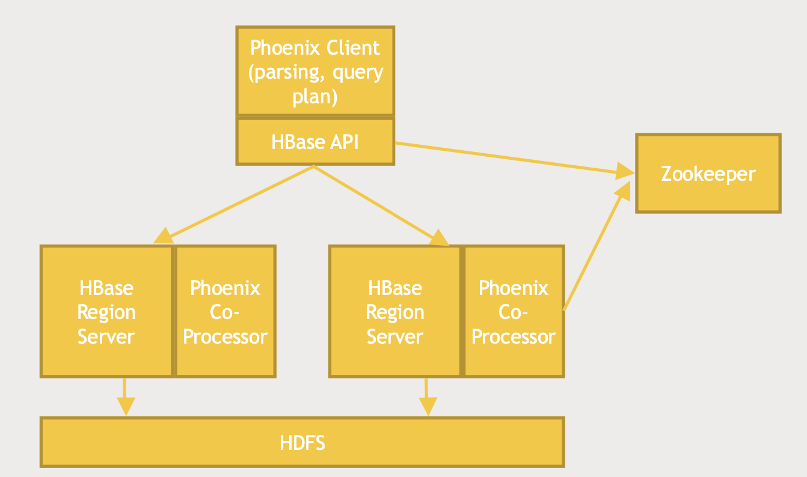
Using Phoenix
Command-Line Interface (CLI)
Phoenix API for Java
JDBC Driver (thick client)
Phoenix Query Server (PQS) (thin client)
Intended to eventually enable non-JVM access
JAR’s for MapReduce, Hive, Pig, Flume, Spark
Hands-on
Install Phoenix on our Hortonworks Sandbox
Mess around with the CLI
bash
[root@sandbox-hdp maria_dev]# cd /usr/hdp/current/phoenix-client/bin
[root@sandbox-hdp bin]# ls
daemon.py performance.py phoenix_utils.py sqlline-thin.py
end2endTest.py pherf-cluster.py psql.py sqlline.py
log4j.properties pherf-standalone.py queryserver.py traceserver.py
[root@sandbox-hdp bin]# python sqlline.py
Setting property: [incremental, false]
Setting property: [isolation, TRANSACTION_READ_COMMITTED]
issuing: !connect jdbc:phoenix: none none org.apache.phoenix.jdbc.PhoenixDriver
Connecting to jdbc:phoenix:
SLF4J: Class path contains multiple SLF4J bindings.
SLF4J: Found binding in [jar:file:/usr/hdp/2.6.5.0-292/phoenix/phoenix-4.7.0.2.6.5.0-292-client.jar!/org/slf4j/impl/StaticLoggerBinder.class]
SLF4J: Found binding in [jar:file:/usr/hdp/2.6.5.0-292/hadoop/lib/slf4j-log4j12-1.7.10.jar!/org/slf4j/impl/StaticLoggerBinder.class]
SLF4J: See http://www.slf4j.org/codes.html#multiple_bindings for an explanation.
22/09/18 18:33:08 WARN util.NativeCodeLoader: Unable to load native-hadoop library for your platform... using builtin-java classes where applicable
22/09/18 18:33:10 WARN shortcircuit.DomainSocketFactory: The short-circuit local reads feature cannot be used because libhadoop cannot be loaded.
Connected to: Phoenix (version 4.7)
Driver: PhoenixEmbeddedDriver (version 4.7)
Autocommit status: true
Transaction isolation: TRANSACTION_READ_COMMITTED
Building list of tables and columns for tab-completion (set fastconnect to true to skip)...
84/84 (100%) Done
Done
sqlline version 1.1.8
0: jdbc:phoenix:> CREATE TABLE IF NOT EXISTS us_population(
. . . . . . . . > state CHAR(2) NOT NULL,
. . . . . . . . > city VARCHAR NOT NULL,
. . . . . . . . > population BIGINT
. . . . . . . . > CONSTRAINT my_pk PRIMARY KEY (state, city));
No rows affected (2.309 seconds)
0: jdbc:phoenix:> !tables
+------------+--------------+----------------+---------------+----------+------+
| TABLE_CAT | TABLE_SCHEM | TABLE_NAME | TABLE_TYPE | REMARKS | TYPE |
+------------+--------------+----------------+---------------+----------+------+
| | SYSTEM | CATALOG | SYSTEM TABLE | | |
| | SYSTEM | FUNCTION | SYSTEM TABLE | | |
| | SYSTEM | SEQUENCE | SYSTEM TABLE | | |
| | SYSTEM | STATS | SYSTEM TABLE | | |
| | | US_POPULATION | TABLE | | |
+------------+--------------+----------------+---------------+----------+------+
## no insert keyword, only upsert available
0: jdbc:phoenix:> UPSERT INTO US_POPULATION VALUES ('NY', 'New York', 8143197);
1 row affected (0.113 seconds)
0: jdbc:phoenix:> UPSERT INTO US_POPULATION VALUES ('CA', 'Los Angeles', 3844829);
1 row affected (0.007 seconds)
0: jdbc:phoenix:> SELECT * FROM US_POPULATION
. . . . . . . . > ;
+--------+--------------+-------------+
| STATE | CITY | POPULATION |
+--------+--------------+-------------+
| CA | Los Angeles | 3844829 |
| NY | New York | 8143197 |
+--------+--------------+-------------+
2 rows selected (0.084 seconds)
0: jdbc:phoenix:> SELECT * FROM US_POPULATION WHERE STATE = 'CA';
+--------+--------------+-------------+
| STATE | CITY | POPULATION |
+--------+--------------+-------------+
| CA | Los Angeles | 3844829 |
+--------+--------------+-------------+
1 row selected (0.047 seconds)
0: jdbc:phoenix:> !quit
Closing: org.apache.phoenix.jdbc.PhoenixConnection
Set up a users table for MovieLens
Store and load data to it through the Pig integration
bash
[root@sandbox-hdp bin]# python sqlline.py
...
0: jdbc:phoenix:> CREATE TABLE users( USERID INTEGER NOT NULL, AGE INTEGER, GENDER CHAR(1), OCCUPATION VARCHAR, ZIP VARCHAR CONSTRAINT pk PRIMARY KEY(USERID));
No rows affected (3.277 seconds)
[root@sandbox-hdp maria_dev]# wget http://media.sundof-soft.com/hadoop/phoenix.pig
[root@sandbox-hdp maria_dev]# cat phoenix.pig
set zookeeper.znode.parent '/hbase-unsecure'
REGISTER /usr/hdp/current/phoenix-client/phoenix-client.jar
users = LOAD '/user/maria_dev/ml-100k/u.user'
USING PigStorage('|')
AS (USERID:int, AGE:int, GENDER:chararray, OCCUPATION:chararray, ZIP:chararray);
STORE users into 'hbase://users' using
org.apache.phoenix.pig.PhoenixHBaseStorage('localhost','-batchSize 5000');
## tweak a bit, just retrieve USERID,OCCUPATION
occupations = load 'hbase://table/users/USERID,OCCUPATION' using org.apache.phoenix.pig.PhoenixHBaseLoader('localhost');
grpd = GROUP occupations BY OCCUPATION;
cnt = FOREACH grpd GENERATE group AS OCCUPATION,COUNT(occupations);
DUMP cnt;
[root@sandbox-hdp maria_dev]# pig phoenix.pig
...
(none,9)
(other,105)
(artist,28)
(doctor,7)
(lawyer,12)
(writer,45)
(retired,14)
(student,196)
(educator,95)
(engineer,67)
(salesman,12)
(executive,32)
(homemaker,7)
(librarian,51)
(marketing,26)
(scientist,31)
(healthcare,16)
(programmer,66)
(technician,27)
(administrator,79)
(entertainment,18)
...
[root@sandbox-hdp maria_dev]# cd /usr/hdp/current/phoenix-client/bin
[root@sandbox-hdp bin]# python sqlline.py
0: jdbc:phoenix:> SELECT * FROM USERS LIMIT 10;
+---------+------+---------+----------------+--------+
| USERID | AGE | GENDER | OCCUPATION | ZIP |
+---------+------+---------+----------------+--------+
| 1 | 24 | M | technician | 85711 |
| 2 | 53 | F | other | 94043 |
| 3 | 23 | M | writer | 32067 |
| 4 | 24 | M | technician | 43537 |
| 5 | 33 | F | other | 15213 |
| 6 | 42 | M | executive | 98101 |
| 7 | 57 | M | administrator | 91344 |
| 8 | 36 | M | administrator | 05201 |
| 9 | 29 | M | student | 01002 |
| 10 | 53 | M | lawyer | 90703 |
+---------+------+---------+----------------+--------+
10 rows selected (0.408 seconds)
Presto 
What is Presto
It’s a lot like Drill
It can connect to many different “big data” databases and data stores at once, and query across them
Familiar SQL syntax
Optimized for OLAP – analytical queries, data warehousing
Developed, and still partially maintained by Facebook
Exposes JDBC, Command-Line, and Tableau interfaces
Why Presto
Vs. Drill? Well, it has a Cassandra connector for one thing.
If it’s good enough for Facebook...
“Facebook uses Presto for interactive queries against several internal data stores, including their 300PB data warehouse. Over 1,000 Facebook employees use Presto daily to run more than 30,000 queries that in total scan over a petabyte each per day.”
Also used by DropBox and AirBNB
“A single Presto query can combine data from multiple sources, allowing for analytics across your entire organization.”
“Presto breaks the false choice between having fast analytics using an expensive commercial solution or using a slow "free" solution that requires excessive hardware.”
What can Presto connect to?
Cassandra (It’s Facebook, after all)
Hive
MongoDB
MySQL
Local files
And stuff we haven’t talked about just yet:
Kafka, JMX, PostgreSQL, Redis, Accumulo
Hands-on
Set up Presto
bash
[root@sandbox-hdp maria_dev]# wget https://repo1.maven.org/maven2/com/facebook/presto/presto-server/0.165/presto-server-0.165.tar.gz
[root@sandbox-hdp maria_dev]# tar -xvf presto-server-0.165.tar.gz
[root@sandbox-hdp maria_dev]# cd presto-server-0.165
[root@sandbox-hdp presto-server-0.165]# ls
NOTICE README.txt bin lib plugin
## create etc folder and setup the config files
[root@sandbox-hdp presto-server-0.165]# wget http://media.sundog-soft.com/hadoop/presto-hdp-config.tgz
...
2022-09-19 03:05:16 (81.0 MB/s) - 'presto-hdp-config.tgz' saved [734/734]
[root@sandbox-hdp presto-server-0.165]# tar -xvf presto-hdp-config.tgz
etc/
etc/log.properties
etc/jvm.config
etc/config.properties
etc/catalog/
etc/catalog/jmx.properties
etc/catalog/hive.properties
etc/node.properties
[root@sandbox-hdp presto-server-0.165]# cd etc
[root@sandbox-hdp etc]# cat config.properties
coordinator=true
node-scheduler.include-coordinator=true
http-server.http.port=8090
query.max-memory=10GB
query.max-memory-per-node=1GB
discovery-server.enabled=true
discovery.uri=http://127.0.0.1:8090
[root@sandbox-hdp etc]# cat node.properties
node.environment=production
node.id=f7c4bf3c-dbb4-4807-baae-9b7e41807bc8
node.data-dir=/var/presto/data
[root@sandbox-hdp etc]# cat catalog/hive.properties
connector.name=hive-hadoop2
hive.metastore.uri=thrift://127.0.0.1:9083
hive.config.resources=/etc/hadoop/conf/core-site.xml,/etc/hadoop/conf/hdfs-site.xml
[root@sandbox-hdp presto-server-0.165]# pwd
/home/maria_dev/presto-server-0.165
[root@sandbox-hdp presto-server-0.165]# cd bin
[root@sandbox-hdp bin]# wget https://repo1.maven.org/maven2/com/facebook/presto/presto-cli/0.165/presto-cli-0.165-executable.jar
[root@sandbox-hdp bin]# mv presto-cli-0.165-executable.jar presto
[root@sandbox-hdp bin]# chmod +x presto
[root@sandbox-hdp bin]# cd ..
[root@sandbox-hdp presto-server-0.165]# pwd
/home/maria_dev/presto-server-0.165
[root@sandbox-hdp presto-server-0.165]# bin/launcher start
Started as 3811
[root@sandbox-hdp presto-server-0.165]# bin/presto --server 127.0.0.1:8090 --catalog hive
Query our Hive ratings table using Presto
bash
[root@sandbox-hdp presto-server-0.165]# bin/presto --server 127.0.0.1:8090 --catalog hive
presto> show tables from default;
Table
-------------
movies
names
ratings
topmovieids
(4 rows)
Query 20220919_154332_00001_wznaq, FINISHED, 1 node
Splits: 18 total, 18 done (100.00%)
0:04 [4 rows, 97B] [1 rows/s, 24B/s]
presto> select * from default.ratings limit 10;
user_id | movie_id | rating | rating_time
---------+----------+--------+-------------
196 | 242 | 3 | 881250949
186 | 302 | 3 | 891717742
22 | 377 | 1 | 878887116
244 | 51 | 2 | 880606923
166 | 346 | 1 | 886397596
298 | 474 | 4 | 884182806
115 | 265 | 2 | 881171488
253 | 465 | 5 | 891628467
305 | 451 | 3 | 886324817
6 | 86 | 3 | 883603013
(10 rows)
Query 20220919_154422_00002_wznaq, FINISHED, 1 node
Splits: 18 total, 18 done (100.00%)
0:06 [1.02K rows, 647KB] [177 rows/s, 112KB/s]
presto> select count(*) from default.ratings where rating = 1;
_col0
-------
6110
(1 row)
Query 20220919_172121_00005_wznaq, FINISHED, 1 node
Splits: 18 total, 18 done (100.00%)
0:01 [100K rows, 647KB] [79.7K rows/s, 515KB/s]
[root@sandbox-hdp presto-server-0.165]# bin/launcher stop
Stopped 3811
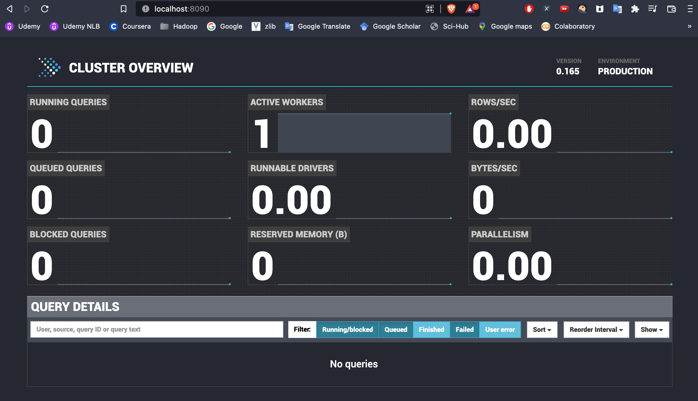
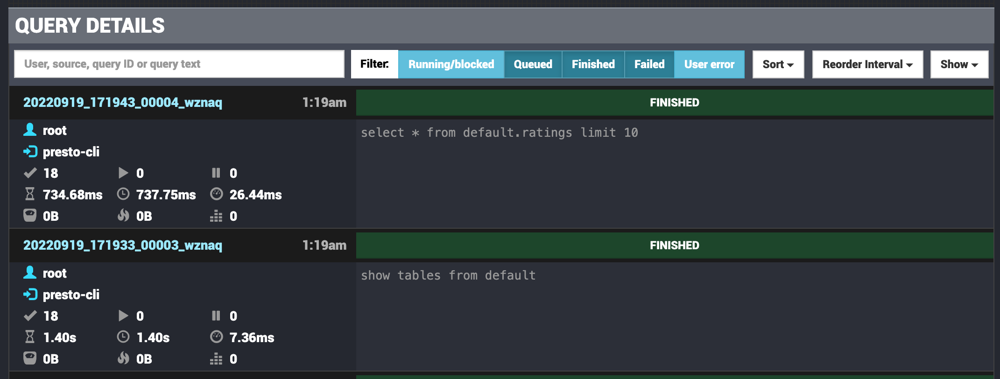
Spin Cassandra back up, and query our users table in Cassandra with Presto
bash
[root@sandbox-hdp presto-server-0.165]# python --version
Python 2.7.5
[root@sandbox-hdp presto-server-0.165]# service cassandra start
Starting cassandra (via systemctl): [ OK ]
## to get thrift spun, so presto can talk to cassandra
[root@sandbox-hdp presto-server-0.165]# nodetool enablethrift
[root@sandbox-hdp presto-server-0.165]# cqlsh --cqlversion="3.4.0"
Connected to Test Cluster at 127.0.0.1:9042.
[cqlsh 5.0.1 | Cassandra 3.0.9 | CQL spec 3.4.0 | Native protocol v4]
Use HELP for help.
cqlsh> describe keyspaces;
system_schema system_auth system movielens system_distributed system_traces
cqlsh> use movielens;
cqlsh:movielens> describe tables;
users
cqlsh:movielens> select * from users limit 10;
user_id | age | gender | occupation | zip
---------+-----+--------+------------+-------
769 | 39 | M | executive | 06927
23 | 30 | F | artist | 48197
114 | 27 | M | programmer | 75013
660 | 26 | M | student | 77380
893 | 25 | M | student | 95823
53 | 26 | M | programmer | 55414
878 | 50 | F | educator | 98027
110 | 19 | M | student | 77840
91 | 55 | M | marketing | 01913
128 | 24 | F | marketing | 20009
(10 rows)
Execute a query that joins users in Cassandra with ratings in Hive!
bash
[root@sandbox-hdp presto-server-0.165]# cd etc/catalog
[root@sandbox-hdp catalog]# ls
hive.properties jmx.properties
[root@sandbox-hdp catalog]# vi cassandra.properties
[root@sandbox-hdp catalog]# cat cassandra.properties
connector.name=cassandra
cassandra.contact-points=127.0.0.1
[root@sandbox-hdp catalog]# cd ../..
[root@sandbox-hdp presto-server-0.165]# bin/launcher start
Started as 20630
[root@sandbox-hdp presto-server-0.165]# bin/presto --server 127.0.0.1:8090 --catalog hive,cassandra
presto> show tables from cassandra.movielens;
Table
-------
users
(1 row)
Query 20220919_173356_00000_qd7fc, FINISHED, 1 node
Splits: 18 total, 18 done (100.00%)
0:03 [1 rows, 24B] [0 rows/s, 7B/s]
presto> describe cassandra.movielens.users;
Column | Type | Extra | Comment
------------+---------+-------+---------
user_id | integer | |
age | integer | |
gender | varchar | |
occupation | varchar | |
zip | varchar | |
(5 rows)
Query 20220919_173425_00001_qd7fc, FINISHED, 1 node
Splits: 18 total, 18 done (100.00%)
0:01 [5 rows, 329B] [8 rows/s, 550B/s]
presto> select * from cassandra.movielens.users limit 10;
user_id | age | gender | occupation | zip
---------+-----+--------+---------------+-------
268 | 24 | M | engineer | 19422
572 | 51 | M | educator | 20003
754 | 59 | F | librarian | 62901
314 | 20 | F | student | 08043
523 | 50 | F | administrator | 04102
730 | 31 | F | scientist | 32114
279 | 33 | M | programmer | 85251
173 | 56 | M | other | 22306
183 | 33 | M | scientist | 27708
386 | 36 | M | salesman | 43221
(10 rows)
Query 20220919_173453_00002_qd7fc, FINISHED, 1 node
Splits: 117 total, 58 done (49.57%)
0:01 [115 rows, 115B] [88 rows/s, 88B/s]
presto> select * from hive.default.ratings limit 10;
user_id | movie_id | rating | rating_time
---------+----------+--------+-------------
196 | 242 | 3 | 881250949
186 | 302 | 3 | 891717742
22 | 377 | 1 | 878887116
244 | 51 | 2 | 880606923
166 | 346 | 1 | 886397596
298 | 474 | 4 | 884182806
115 | 265 | 2 | 881171488
253 | 465 | 5 | 891628467
305 | 451 | 3 | 886324817
6 | 86 | 3 | 883603013
(10 rows)
Query 20220919_173523_00003_qd7fc, FINISHED, 1 node
Splits: 18 total, 18 done (100.00%)
0:05 [1.02K rows, 647KB] [217 rows/s, 137KB/s]
presto> select u.occupation, count(*) from hive.default.ratings r join cassandra.movielens.users u on r.user_id = u.user_id group by u.occupation;
occupation | _col1
---------------+-------
entertainment | 2095
artist | 2308
student | 21957
retired | 1609
educator | 9442
engineer | 8175
technician | 3506
other | 10663
librarian | 5273
lawyer | 1345
marketing | 1950
doctor | 540
administrator | 7479
writer | 5536
scientist | 2058
none | 901
homemaker | 299
salesman | 856
healthcare | 2804
programmer | 7801
executive | 3403
(21 rows)
Query 20220919_173701_00004_qd7fc, FINISHED, 1 node
Splits: 354 total, 354 done (100.00%)
0:55 [101K rows, 648KB] [1.85K rows/s, 11.9KB/s]
presto> exit
[root@sandbox-hdp presto-server-0.165]# bin/launcher stop
Stopped 20630
[root@sandbox-hdp presto-server-0.165]# service cassandra stop
Stopping cassandra (via systemctl): [ OK ]
Section 8: Managing your Cluster
YARN
What is YARN?
Yet Another Resource Negotiator
Introduced in Hadoop 2
Separates the problem of managing resources on your cluster from MapReduce
Enabled development of MapReduce alternatives (Spark, Tez) built on top of YARN
It’s just there, under the hood, managing the usage of your cluster
I can’t think of a reason why you’d need to actually write code against it yourself in this day and age. But you can.
Where YARN fits in
YARN manages the computing resources
HDFS manages the storage resources
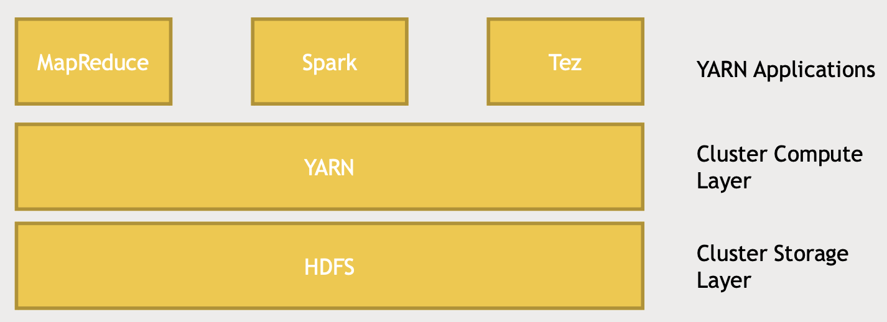
YARN workflow
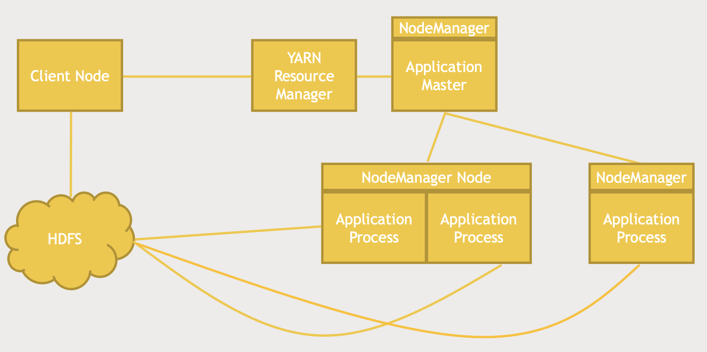
How YARN works
Your application talks to the Resource Manager to distribute work to your cluster
You can specify data locality – which HDFS block(s) do you want to process?
YARN will try to get your process on the same node that has your HDFS blocks
You can specify different scheduling options for applications
So you can run more than one application at once on your cluster
FIFO, Capacity, and Fair schedulers
FIFO runs jobs in sequence, first in first out
Capacity may run jobs in parallel if there’s enough spare capacity
Fair may cut into a larger running job if you just want to squeeze in a small one
Building new YARN applications
Why? There are so many existing projects you can just use
Need a DAG*-based application? Build it on Spark or Tez
(*Directed Acyclic Graph)
But if you really really need to
There are frameworks: Apache Slider, Apache Twill
And there are some books on the topic.
That's pretty much
Want to practice “using YARN?” Well, we already did that with MapReduce and Spark!
You just need to know it’s there, under the hood, managing your cluster’s resources for you
Tez 
What is Tez?
Another bit of infrastructure you can just use
Makes your Hive, Pig, or MapReduce jobs faster!
It’s an application framework clients can code against as a replacement for MapReduce
Constructs Directed Acyclic Graphs (DAGs) for more efficient processing of distributed jobs
Relies on a more holistic view of your job; eliminates unnecessary steps and dependencies.
Optimizes physical data flow and resource usage
Directed Acyclic Graphs
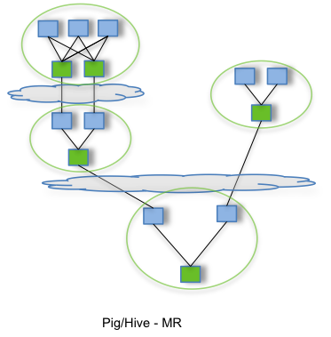
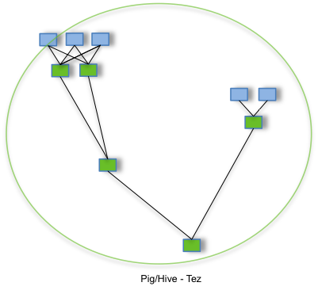
Where Tez sits
Just tell Hive or Pig to use it.
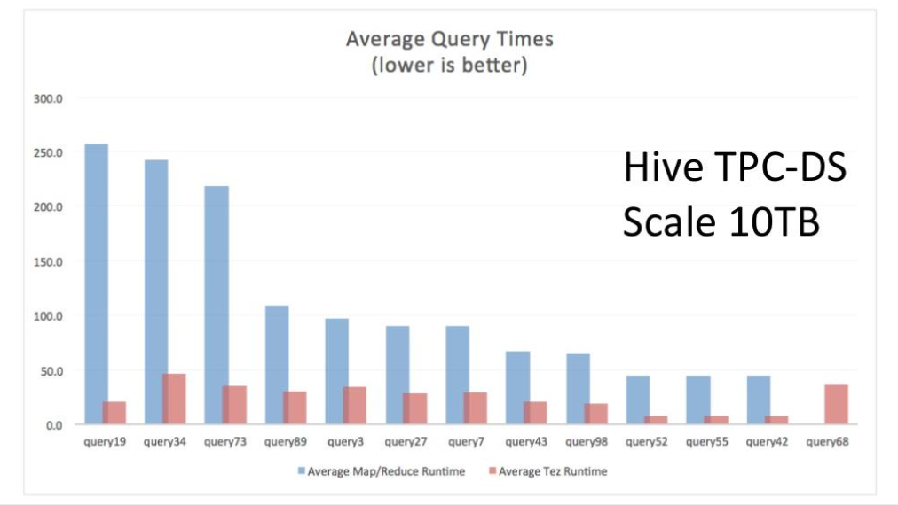
It probably does by default anyhow.
It really is a lot faster!
Hands-on: Compare performance of a Hive query using Tez vs. MapReduce
sql
DROP VIEW IF EXISTS topMovieIDs;
CREATE VIEW topMovieIDs AS
SELECT movie_id, count(movie_id) AS ratingCount
FROM movielens.ratings
GROUP BY movie_id
ORDER BY ratingCount DESC;
SELECT n.name, t.ratingCount
FROM topMovieIDs t
JOIN movielens.names n
ON t.movie_id = n.movie_id;
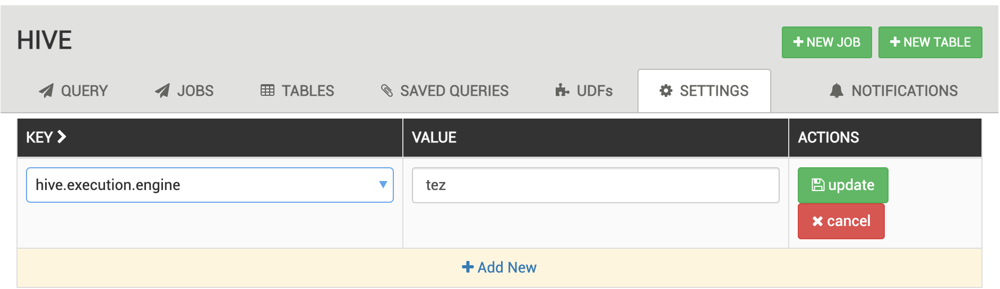
| Start Time | 20 Sep 2022 02:31:50 |
|---|---|
| End Time | 20 Sep 2022 02:33:50 |
| Duration | 1m 59s 687ms |
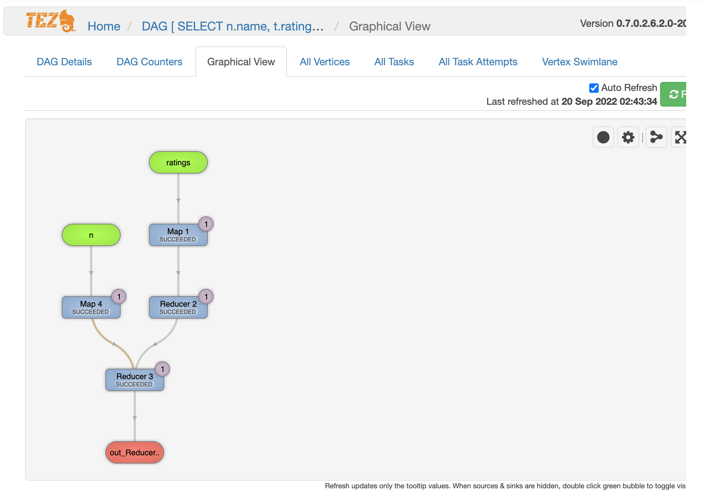
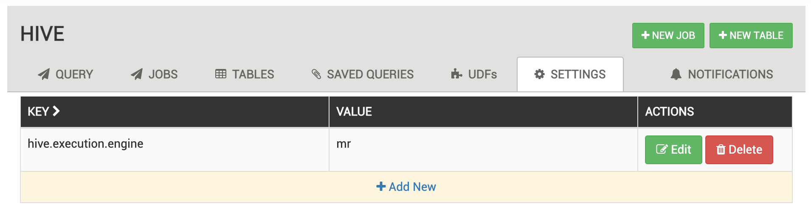
Duration around 2min 27s
Tez 20s, MR 71s (in udemy course)
Apache Mesos 
What is Mesos?
Came out of Twitter – it’s a system that manages resources across your data center(s)
YARN is confined to Hadoop system, but Mesos is generic to all systems
Not just for big data stuff – it can allocate resources for web servers, small scripts, whatever.
Meant to solve a more general problem than YARN – it’s really a general container management system
We’re kind of going off the reservation
Mesos isn’t really part of the Hadoop ecosystem per se, but it can play nice with it
Spark and Storm may both run on Mesos instead of YARN
Spark originally written on mesos
Hadoop YARN may be integrated with Mesos using Myriad
So you don’t necessarily need to partition your data center between your Hadoop cluster and everything else!
Differences between Mesos and YARN
YARN is a monolithic scheduler – you give it a job, and YARN figures out where to run
Mesos is a two-tiered system
Mesos just makes offers of resources to your application (“framework”)
Your framework decides whether to accept or reject them
You also decide your own scheduling algorithm
YARN is optimized for long, analytical jobs like you see in Hadoop
Mesos is built to handle that, as well as long-lived processes (servers) and short-lived processes as well.
How Mesos fits in
If you’re looking for an architecture you can code all of your organization’s cluster applications against – not just Hadoop stuff – Mesos can be really useful
You should also look at Kuberentes / Docker
If all you are about is Spark and Storm from the Hadoop-y world, Mesos is an option
But YARN’s probably better, especially if your data is on HDFS
Spark on Mesos is limited to one executor per slave (node)
YARN-operated spark will be efficient
Siloed vs resource sharing
Myriad -- to integrate Hadoop YARN with Mesos
p1, Hadoop managed by YARN, other reources managed by Mesos
p2, using Myriad, more integration, less waste on resources
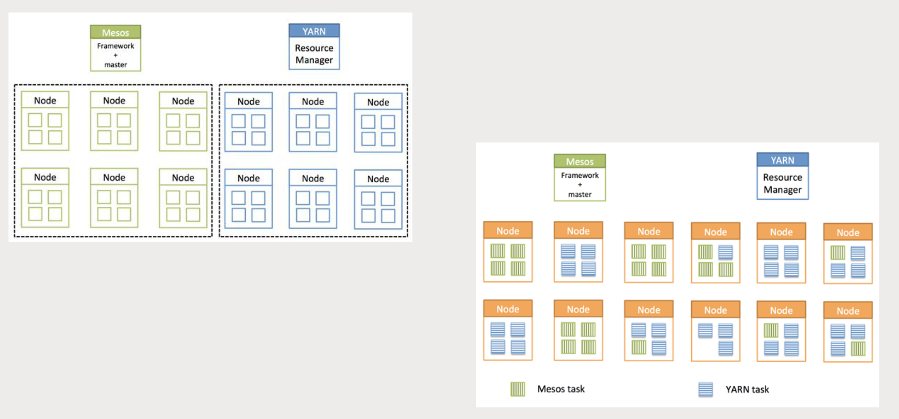
When to use Mesos?
If your organization as a whole has chosen to use Mesos to manage its computing resources in general
Then you can avoid partitioning off a Hadoop cluster by using Myriad
There is also a “Hadoop on Mesos” package for Cloudera that bypasses YARN entirely
Otherwise – probably not. I just want you know what Mesos is and how it’s different from YARN.
ZooKeeper 
What is ZooKeeper?
It basically keeps track of information that must be synchronized across your cluster
Which node is the master?
What tasks are assigned to which workers?
Which workers are currently available?
It’s a tool that applications can use to recover from partial failures in your cluster.
An integral part of HBase, High-Availability (HA) MapReduce, Drill, Storm, Solr, and much more
Failure modes
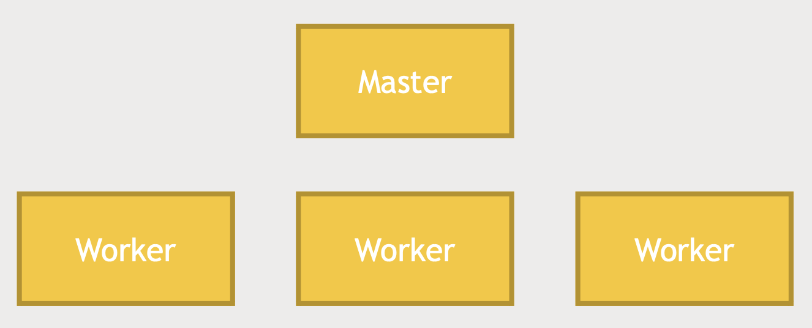
Master crashes, needs to fail over to a backup
Worker crashes – its work needs to be redistributed
Network trouble – part of your cluster can’t see the rest of it
“Primitive” operations in a distributed system
Master election
One node registers itself as a master, and holds a “lock” on that data
Other nodes cannot become master until that lock is released
Only one node allowed to hold the lock at a time
Crash detection
“Ephemeral” data on a node’s availability automatically goes away if the node disconnects, or fails to refresh itself after some time-out period.
Group management
Metadata
List of outstanding tasks, task assignments
But ZooKeeper’s API is not about these primitives.
Instead they have built a more general purpose system that makes it easy for applications to implement them.
Zookeeper’s API
Really a little distributed file system
With strong consistency guarantees
Replace the concept of “file” with “znode” and you’ve pretty much got it
Here’s the ZooKeeper API:
Create, delete, exists, setData, getData, getChildren
bash
./
├── /master "master1.foobar.com:2223"
└── /workers
├── worker-1 "worker-2.foobar.com:2225"
└── worker-2 "worker-5.foobar.com:2225"
Notifications
A client can register for notifications on a znode
Avoids continuous polling
Example: register for notification on /master – if it goes away, try to take over as the new master.
Persistent and ephemeral znodes
Persistent znodes remain stored until explicitly deleted
i.e., assignment of tasks to workers must persist even if master crashes
when new master picks up, it knows where to pick up from where the previous master left off
Ephemeral znodes go away if the client that created it crashes or loses its connection to ZooKeeper
i.e., if the master crashes, it should release its lock on the znode that indicates which node is the master!
ZooKeeper Architecture
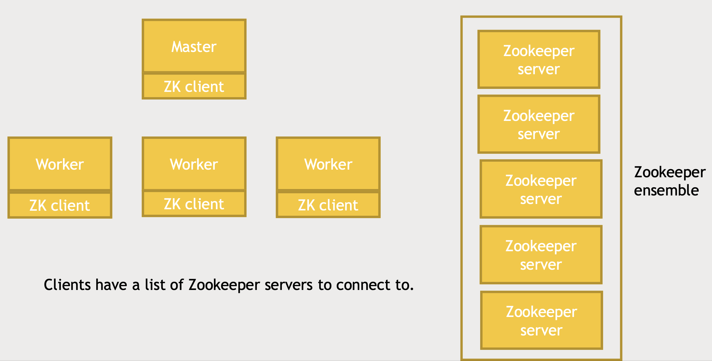
ZK ensemble has replicated data among themselves
ZooKeeper quorums 法定人数 (voting to decide)
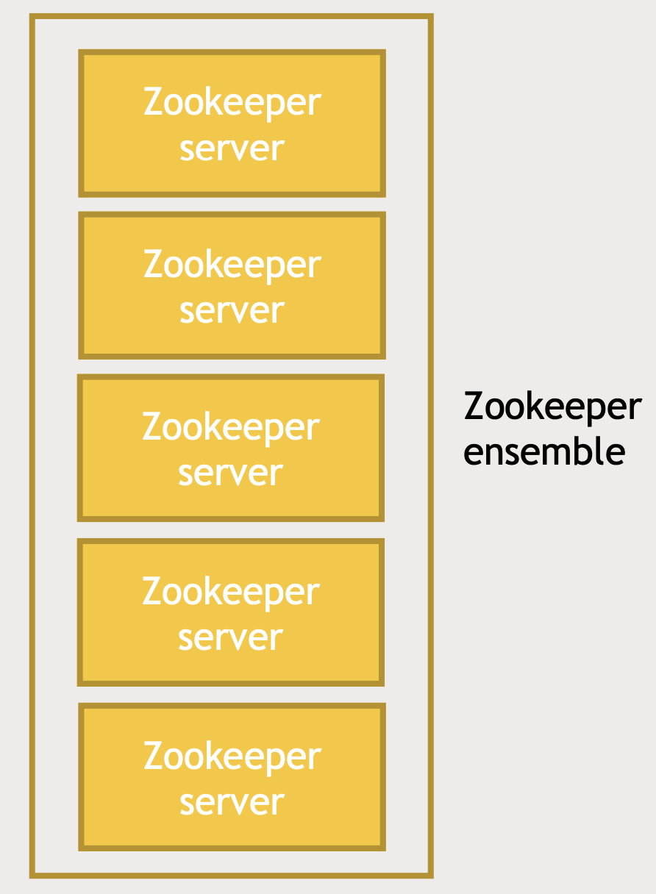
quorum = 2, accept the result if at least 2 servers agree on that
p2, when network stops between upper 2 and lower 3, 2 sides will give different answer
solution: have quorum = 3 or more
Hands-on
bash
[root@sandbox-hdp maria_dev]# cd /usr/hdp/current/zookeeper-client/
[root@sandbox-hdp zookeeper-client]# ls
bin doc lib usr zookeeper.jar
conf etc man zookeeper-3.4.6.2.6.5.0-292.jar
[root@sandbox-hdp zookeeper-client]# cd bin
[root@sandbox-hdp bin]# ls
zkCleanup.sh zkServer-initialize.sh zookeeper-server
zkCli.sh zkServer.sh zookeeper-server-cleanup
zkEnv.sh zookeeper-client zookeeper-server-initialize
[root@sandbox-hdp bin]# ./zkCli.sh
[zk: localhost:2181(CONNECTED) 2] ls /
[registry, cluster, controller, brokers, storm, zookeeper, infra-solr,
hbase-unsecure, admin, isr_change_notification, log_dir_event_notification,
drill, templeton-hadoop, hiveserver2, controller_epoch, druid, consumers,
latest_producer_id_block, config]
## create an ephemeral znode
[zk: localhost:2181(CONNECTED) 3] create -e /testmaster "127.0.0.1:2233"
Created /testmaster
[zk: localhost:2181(CONNECTED) 4] get /testmaster
"127.0.0.1:2233"
cZxid = 0x194d
ctime = Wed Sep 21 03:25:09 UTC 2022
mZxid = 0x194d
mtime = Wed Sep 21 03:25:09 UTC 2022
pZxid = 0x194d
cversion = 0
dataVersion = 0
aclVersion = 0
ephemeralOwner = 0x1835dbd82d70004
dataLength = 16
numChildren = 0
# quit, to kill the ephemeral
[zk: localhost:2181(CONNECTED) 3] quit
Quitting...
2022-09-21 03:43:11,545 - INFO [main:ZooKeeper@684] - Session: 0x1835dbd82d70005 closed
2022-09-21 03:43:11,545 - INFO [main-EventThread:ClientCnxn$EventThread@524] - EventThread shut down
[root@sandbox-hdp bin]# ./zkCli.sh
[zk: localhost:2181(CONNECTED) 1] ls /
[registry, cluster, controller, brokers, storm, zookeeper, infra-solr, hbase-unsecure, admin, isr_change_notification, log_dir_event_notification, drill, templeton-hadoop, hiveserver2, controller_epoch, druid, consumers, latest_producer_id_block, config]
## so ephemeral disappear
[zk: localhost:2181(CONNECTED) 2] get /testmaster
Node does not exist: /testmaster
# only one allowed to be master
[zk: localhost:2181(CONNECTED) 3] create -e /testmaster "127.0.0.1:2225"
Created /testmaster
[zk: localhost:2181(CONNECTED) 5] create -e /testmaster "127.0.0.1:2225"
Node already exists: /testmaster
Apache Oozie 
What is Oozie?
Burmese for “elephant keeper”
A system for running and scheduling Hadoop tasks
Workflows
A multi-stage Hadoop job
Might chain together MapReduce, Hive, Pig, sqoop, and distcp tasks
Other systems available via add-ons (like Spark)
A workflow is a Directed Acyclic Graph of actions
Specified via XML
So, you can run actions that don’t depend on each other in parallel.
Workflow example
xml
<?xml version="1.0" encoding="UTF-8"?>
<workflow-app xmlns="uri:oozie:workflow:0.2" name="top-movies">
<start to="fork-node"/>
<fork name="fork-node">
<path start="sqoop-node" />
<path start="pig-node" />
</fork>
<action name="sqoop-node">
<sqoop xmlns="uri:oozie:sqoop-action:0.2">
... sqoop configuration here ...
</sqoop>
<ok to="joining"/>
<error to="fail"/>
</action>
<action name="pig-node">
<pig>
... pig configuration here ...
</pig>
<ok to="joining"/>
<error to="fail"/>
</action>
<join name="joining" to="hive-node"/>
<action name="hive-node">
<hive xmlns="uri:oozie:hive-action:0.2">
... hive configuration here ...
</hive>
<ok to="end"/>
<error to="fail"/>
</action>
<kill name="fail">
<message>Sqoop failed, error
message[${wf:errorMessage(wf:lastErrorNode())}]</message>
</kill>
<end name="end"/>
</workflow-app>
Steps to set up a workflow in Oozie
Make sure each action works on its own
Make a directory in HDFS for your job
Create your workflow.xml file and put it in your HDFS folder
Create job.properties defining any variables your workflow.xml needs
This goes on your local filesystem where you’ll launch the job from
You could also set these properties within your XML.
xml
nameNode=hdfs://sandbox.hortonworks.com:8020
jobTracker=http://sandbox.hortonworks.com:8050
queueName=default
oozie.use.system.libpath=true
oozie.wf.application.path=${nameNode}/user/maria_dev
Running a workflow with Oozie
oozie job --oozie http://localhost:11000/oozie -config /home/maria_dev/job.properties –run
Monitor progress at http://127.0.0.1:11000/oozie
Oozie Coordinators
xml
<coordinator-app xmlns = "uri:oozie:coordinator:0.2" name = "sample coordinator"
frequency = "5 * * * *" start = "2016-00-18T01:00Z" end = "2025-12-31T00:00Z"
timezone = "America/Los_Angeles">
<controls>
<timeout>1</timeout>
<concurrency>1</concurrency>
<execution>FIFO</execution>
<throttle>1</throttle>
</controls>
<action>
<workflow>
<app-path>pathof_workflow_xml/workflow.xml</app-path>
</workflow>
</action>
</coordinator-app>
Schedules workflow execution
Launches workflows based on a given start time and frequency
Will also wait for required input data to become available
Run in exactly the same way as a workflow
Oozie bundles
New in Oozie 3.0
A bundle is a collection of coordinators that can be managed together
Example: you may have a bunch of coordinators for processing log data in various ways
By grouping them in a bundle, you could suspend them all if there were some problem with log collection
Hands-on: set up a simple workflow in Oozie.
We’ll get movielens back into MySQL if it’s not still there
bash
[maria_dev@sandbox-hdp ~]$ mysql -u root -p
Enter password:
Welcome to the MySQL monitor. Commands end with ; or \g.
Your MySQL connection id is 154
Server version: 5.7.22 MySQL Community Server (GPL)
Copyright (c) 2000, 2018, Oracle and/or its affiliates. All rights reserved.
Oracle is a registered trademark of Oracle Corporation and/or its
affiliates. Other names may be trademarks of their respective
owners.
Type 'help;' or '\h' for help. Type '\c' to clear the current input statement.
mysql> show databases;
+--------------------+
| Database |
+--------------------+
| information_schema |
| druid |
| hive |
| movielens |
| mysql |
| performance_schema |
| ranger |
| superset |
| sys |
+--------------------+
9 rows in set (0.02 sec)
mysql> use movielens;
Reading table information for completion of table and column names
You can turn off this feature to get a quicker startup with -A
Database changed
mysql> show tables;
+---------------------+
| Tables_in_movielens |
+---------------------+
| exported_movies |
| genres |
| genres_movies |
| movies |
| occupations |
| ratings |
| users |
+---------------------+
7 rows in set (0.01 sec)
mysql> select * from movies limit 10;
+----+------------------------------------------------------+--------------+
| id | title | release_date |
+----+------------------------------------------------------+--------------+
| 1 | Toy Story (1995) | 1995-01-01 |
| 2 | GoldenEye (1995) | 1995-01-01 |
| 3 | Four Rooms (1995) | 1995-01-01 |
| 4 | Get Shorty (1995) | 1995-01-01 |
| 5 | Copycat (1995) | 1995-01-01 |
| 6 | Shanghai Triad (Yao a yao yao dao waipo qiao) (1995) | 1995-01-01 |
| 7 | Twelve Monkeys (1995) | 1995-01-01 |
| 8 | Babe (1995) | 1995-01-01 |
| 9 | Dead Man Walking (1995) | 1995-01-01 |
| 10 | Richard III (1995) | 1996-01-22 |
+----+------------------------------------------------------+--------------+
10 rows in set (0.01 sec)
mysql> grant all on movielens.* to 'root'@'localhost' identified by 'hadoop';
Query OK, 0 rows affected, 1 warning (0.02 sec)
Write a Hive script to find all movies released before 1940
bash
[maria_dev@sandbox-hdp ~]$ wget http://media.sundog-soft.com/hadoop/oldmovies.sql
[maria_dev@sandbox-hdp ~]$ cat oldmovies.sql
DROP TABLE movies;
CREATE EXTERNAL TABLE movies (movie_id INT, title STRING, release DATE)
ROW FORMAT DELIMITED FIELDS TERMINATED BY ','
LOCATION '/user/maria_dev/movies/';
INSERT OVERWRITE DIRECTORY '${OUTPUT}'
SELECT * FROM movies WHERE release < '1940-01-01' ORDER BY release;
[maria_dev@sandbox-hdp ~]$ wget http://media.sundog-soft.com/hadoop/workflow.xml
Set up an Oozie workflow that uses sqoop to extract movie information from MySQL, then analyze it with Hive
xml
<?xml version="1.0" encoding="UTF-8"?>
<workflow-app xmlns="uri:oozie:workflow:0.2" name="old-movies">
<start to="sqoop-node"/>
<action name="sqoop-node">
<sqoop xmlns="uri:oozie:sqoop-action:0.2">
<job-tracker>${jobTracker}</job-tracker>
<name-node>${nameNode}</name-node>
<!-- prepare node will run before actually running sqoop node -->
<prepare>
<delete path="${nameNode}/user/maria_dev/movies"/>
</prepare>
<configuration>
<property>
<name>mapred.job.queue.name</name>
<value>${queueName}</value>
</property>
</configuration>
<command>import --connect jdbc:mysql://localhost/movielens --driver com.mysql.jdbc.Driver --table movies -m 1</command>
</sqoop>
<ok to="hive-node"/>
<error to="fail"/>
</action>
<action name="hive-node">
<hive xmlns="uri:oozie:hive-action:0.2">
<job-tracker>${jobTracker}</job-tracker>
<name-node>${nameNode}</name-node>
<!-- prepare node will run before actually running hive node -->
<prepare>
<delete path="${nameNode}/user/maria_dev/oldmovies"/>
</prepare>
<configuration>
<property>
<name>mapred.job.queue.name</name>
<value>${queueName}</value>
</property>
</configuration>
<script>oldmovies.sql</script>
<param>OUTPUT=/user/maria_dev/oldmovies</param>
</hive>
<ok to="end"/>
<error to="fail"/>
</action>
<kill name="fail">
<message>Sqoop failed, error message[${wf:errorMessage(wf:lastErrorNode())}]</message>
</kill>
<end name="end"/>
</workflow-app>
bash
[root@sandbox-hdp maria_dev]# wget http://media.sundog-soft.com/hadoop/job.properties
[root@sandbox-hdp maria_dev]# cat job.properties
nameNode=hdfs://sandbox-hdp.hortonworks.com:8020
jobTracker=http://sandbox-hdp.hortonworks.com:8032
queueName=default
oozie.use.system.libpath=true
oozie.wf.application.path=${nameNode}/user/maria_dev
[maria_dev@sandbox-hdp ~]$ hadoop fs -put workflow.xml /user/maria_dev
[maria_dev@sandbox-hdp ~]$ hadoop fs -put oldmovies.sql /user/maria_dev
## copy over the mysql connector so oozie will be able to connect
[maria_dev@sandbox-hdp ~]$ hadoop fs -put /usr/share/java/mysql-connector-java.jar /user/oozie/share/lib/lib_20180618160835/sqoop
[maria_dev@sandbox-hdp ~]$ oozie job -oozie http://localhost:11000/oozie -config /home/maria_dev/job.properties -run
job: 0000000-220921104028722-oozie-oozi-W
##to fix the ext js dependency of oozie
[maria_dev@sandbox-hdp ~]$ wget http://archive.cloudera.com/gplextras/misc/ext-2.2.zip
[maria_dev@sandbox-hdp ~]$ sudo cp ext-2.2.zip /usr/hdp/current/oozie-client/libext/
[maria_dev@sandbox-hdp ~]$ sudo chown oozie:hadoop /usr/hdp/current/oozie-client/libext/ext-2.2.zip
[maria_dev@sandbox-hdp ~]$ sudo -u oozie /usr/hdp/current/oozie-server/bin/oozie-setup.sh prepare-war
INFO: Adding extension: /usr/hdp/current/oozie-server/libext/falcon-oozie-el-extension-0.10.0.2.6.5.0-292.jar
/usr/hdp/current/oozie-server/bin/oozie-setup.sh: line 301: cd: /home/maria_dev: Permission denied
New Oozie WAR file with added 'ExtJS library, JARs' at /usr/hdp/current/oozie-server/oozie-server/webapps/oozie.war
INFO: Oozie is ready to be started
## start oozie server in ambari
[maria_dev@sandbox-hdp ~]$ oozie job -oozie http://localhost:11000/oozie -config /home/maria_dev/job.properties -run
job: 0000000-220921110227342-oozie-oozi-W
http://localhost:11000/oozie/
Apache Zeppelin
What is Zeppelin?
If you’re familiar with iPython notebooks – it’s like that
Lets you interactively run scripts / code against your data
Can interleave with nicely formatted notes
Can share notebooks with others on your cluster
Apache Spark integration
Can run Spark code interactively (like you can in the Spark shell)
This speeds up your development cycle
And allows easy experimentation and exploration of your big data
Can execute SQL queries directly against SparkSQL
Query results may be visualized in charts and graphs
Makes Spark feel more like a data science tool!
Zeppelin can do much more than Spark
Hands-on: http://localhost:9995/
spark
sc.version
res0: String = 2.3.0.2.6.5.0-292
%sh
wget http://media.sundog-soft.com/hadoop/ml-100k/u.data -O /tmp/u.data
wget http://media.sundog-soft.com/hadoop/ml-100k/u.item -O /tmp/u.item
echo "complete"
%sh
hadoop fs -rm -r -f /tmp/ml-100k
hadoop fs -mkdir /tmp/ml-100k
hadoop fs -put /tmp/u.data /tmp/ml-100k/
hadoop fs -put /tmp/u.item /tmp/ml-100k/
scala
final case class Rating(movieID: Int, Rating: Int)
val lines = sc.textFile("hdfs:///tmp/ml-100k/u.data").map(x => {val fields = x.split("\t"); Rating(fields(1).toInt, fields(2).toInt)})
###
warning: there was one unchecked warning; re-run with -unchecked for details
defined class Rating
lines: org.apache.spark.rdd.RDD[Rating] = MapPartitionsRDD[2] at map at <console>:28
import sqlContext.implicits._
val ratingsDF = lines.toDF()
ratingsDF.printSchema()
###
import sqlContext.implicits._
ratingsDF: org.apache.spark.sql.DataFrame = [movieID: int, Rating: int]
root
|-- movieID: integer (nullable = false)
|-- Rating: integer (nullable = false)
val topMovieIDs = ratingsDF.groupBy("movieID").count().orderBy(desc("count")).cache()
topMovieIDs.show()
###
topMovieIDs: org.apache.spark.sql.Dataset[org.apache.spark.sql.Row] = [movieID: int, count: bigint]
+-------+-----+
|movieID|count|
+-------+-----+
| 50| 584|
| 258| 509|
| 100| 508|
| 181| 507|
| 294| 485|
| 286| 481|
...
ratingsDF.registerTempTable("ratings")
%sql
SELECT * FROM ratings LIMIT 10
%sql
SELECT rating,COUNT(*) AS count FROM ratings GROUP BY rating
scala
final case class Movie(movieID: Int, title: String)
val lines = sc.textFile("hdfs:///tmp/ml-100k/u.item").map(x => {val fields = x.split('|'); Movie(fields(0).toInt, fields(1))})
###
warning: there was one unchecked warning; re-run with -unchecked for details
defined class Movie
lines: org.apache.spark.rdd.RDD[Movie] = MapPartitionsRDD[36] at map at <console>:33
import sqlContext.implicits._
val moviesDF = lines.toDF()
moviesDF.printSchema()
###
import sqlContext.implicits._
moviesDF: org.apache.spark.sql.DataFrame = [movieID: int, title: string]
root
|-- movieID: integer (nullable = false)
|-- title: string (nullable = true)
moviesDF.show()
moviesDF: org.apache.spark.sql.DataFrame = [movieID: int, title: string]
+-------+--------------------+
|movieID| title|
+-------+--------------------+
| 1| Toy Story (1995)|
| 2| GoldenEye (1995)|
| 3| Four Rooms (1995)|
| 4| Get Shorty (1995)|
| 5| Copycat (1995)|
moviesDF.registerTempTable("titles")
%sql
SELECT t.title, COUNT(*) cnt FROM ratings r JOIN titles t ON r.movieID = t.movieID GROUP BY t.title ORDER BY cnt DESC LIMIT 20
Hue (Not Apache, open source, developed by Cloudera)
A Tale of Two Distros
Hortonworks
Ambari used for management and query / files UI
Zeppelin used for notebook
Cloudera
Hue used for query / files UI and notebook
Cloudera Manager used for management
Hue is Cloudera’s Ambari – sort of.
Cool things about Hue
Oozie editor
Also Spark, Pig, Hive, HBase, HDFS, Sqoop
Built-in notebooks
It is open source
Not an Apache project; maintained by Cloudera
It can be installed on a Hortonworks distribution if you try hard enough!
Hands-on: gethue.com
Other Admin Technologies
Ganglia 
Distributed monitoring system
Developed by UC Berkeley
Originally widely used by universities
Wikimedia / Wikipedia used to use it.
Largely supplanted by Ambari / Cloudera Manager / Grafana
Old UI

Competitor: Grafana/Ambari/Hue

Chukwa 
System for collecting and analyzing logs from your Hadoop cluster\
Initially adopted by NetFlix
Largely supplanted by Flume and Kafka
Both are more general purpose
Faster
Easier to set up
More reliable
Section 9: Feeding Data to your Cluster
Streaming with Kafka
What is streaming?
So far we've really just talked about processing historical, existing big data
Sitting on HDFS
Sitting in a database
But how does new data get into your cluster? Especially if it's "Big data"?
New log entries from your web servers
New sensor data from your IoT system
New stock trades
Streaming lets you publish this data, in real time, to your cluster.
And you can even process it in real time as it comes in!
Two problems
How to get data from many different sources flowing into your cluster
Processing it when it gets there
First, let’s focus on the first problem
Enter Kafka
Kafka is a general-purpose publish/subscribe messaging system
Kafka servers store all incoming messages from publishers for some period of time, and publishes them to a stream of data called a topic.
Kafka consumers subscribe to one or more topics, and receive data as it’s published
A stream / topic can have many different consumers, all with their own position in the stream maintained
It’s not just for Hadoop
Kafka architecture
How Kafka scales
Kafka itself may be distributed among many processes on many servers
Will distribute the storage of stream data as well
Consumers may also be distributed
Consumers of the same group will have messages distributed amongst them
Consumers of different groups will get their own copy of each message
Hands-on
Start Kafka on our sandbox
scala
[maria_dev@sandbox-hdp ~]$ cd /usr/hdp/current/kafka-broker/
[maria_dev@sandbox-hdp kafka-broker]$ ls
LICENSE NOTICE bin conf config doc examples libs logs pids
[maria_dev@sandbox-hdp kafka-broker]$ cd bin
[maria_dev@sandbox-hdp bin]$ ls
connect-distributed.sh kafka-replica-verification.sh
connect-standalone.sh kafka-run-class.sh
kafka kafka-server-start.sh
kafka-acls.sh kafka-server-stop.sh
kafka-broker-api-versions.sh kafka-simple-consumer-shell.sh
kafka-configs.sh kafka-streams-application-reset.sh
kafka-console-consumer.sh kafka-topics.sh
kafka-console-producer.sh kafka-verifiable-consumer.sh
kafka-consumer-groups.sh kafka-verifiable-producer.sh
kafka-consumer-perf-test.sh kafka-zookeeper-run-class.sh
kafka-delete-records.sh trogdor.sh
kafka-log-dirs.sh windows
kafka-mirror-maker.sh zookeeper-security-migration.sh
kafka-preferred-replica-election.sh zookeeper-server-start.sh
kafka-producer-perf-test.sh zookeeper-server-stop.sh
kafka-reassign-partitions.sh zookeeper-shell.sh
kafka-replay-log-producer.sh
Set up a topic
scala
[maria_dev@sandbox-hdp bin]$ ./kafka-topics.sh --create --zookeeper sandbox-hdp.hortonworks.com:2181 --replication-factor=1 --partitions 1 --topic fred
Created topic "fred".
[maria_dev@sandbox-hdp bin]$ ./kafka-topics.sh --list --zookeeper sandbox-hdp.hortonworks.com:2181
ATLAS_ENTITIES
ATLAS_HOOK
__consumer_offsets
fred
# listen to standard input, broadcast any line on 'fred' topic
[maria_dev@sandbox-hdp bin]$ ./kafka-console-producer.sh --broker-list sandbox-hdp.hortonworks.com:6667 --topic fred
Publish some data to it, and watch it get consumed
scala
>This is a line of data
>I am just sending this on the fred topic
[maria_dev@sandbox-hdp bin]$ ./kafka-console-consumer.sh --zookeeper localhost:2181 --topic fred --from-beginning
Using the ConsoleConsumer with old consumer is deprecated and will be removed in a future major release. Consider using the new consumer by passing [bootstrap-server] instead of [zookeeper].
This is a line of data
I am just sending this on the fred topic
Set up a file connector
Monitor a log file and publish additions to it
bash
[maria_dev@sandbox-hdp ~]$ cd /usr/hdp/current/kafka-broker
[maria_dev@sandbox-hdp kafka-broker]$ ls
LICENSE NOTICE bin conf config doc examples libs logs pids
[maria_dev@sandbox-hdp kafka-broker]$ cd conf
[maria_dev@sandbox-hdp conf]$ ls
connect-console-sink.properties connect-standalone.properties server.properties
connect-console-source.properties consumer.properties test-log4j.properties
connect-distributed.properties kafka-env.sh tools-log4j.properties
connect-file-sink.properties kafka_client_jaas.conf zookeeper.properties
connect-file-source.properties log4j.properties
connect-log4j.properties producer.properties
## connect-standalone.properties
## that's what we're going to use to set up the network environment
## for our standalone connector server here
## because we're just running on one computer.
## connect-file-sink.properties
## that describes the properties of how we're going to store the contents
## of that stream as it comes in.
## So the sync is what's going to be the consumer of that stream
## and dumping the output into a file of our choice.
## connect-file-source.properties
## that can be set up to listen to changes on a given file
## that we specify and publish that as a producer on a topic on a stream as well.
[maria_dev@sandbox-hdp conf]$ cp connect-standalone.properties ~/
[maria_dev@sandbox-hdp conf]$ cp connect-file-sink.properties ~/
[maria_dev@sandbox-hdp conf]$ cp connect-file-source.properties ~/
[maria_dev@sandbox-hdp conf]$ cd ~
[maria_dev@sandbox-hdp ~]$ vi connect-standalone.properties
## Changed to
## # These are defaults. This file just demonstrates how to override some settings.
## bootstrap.servers=sandbox-hdp.hortonworks.com:6667
[maria_dev@sandbox-hdp ~]$ vi connect-file-sink.properties
## Changed to
## file=/home/maria_dev/logout.txt
## topics=log-test
[maria_dev@sandbox-hdp ~]$ vi connect-file-source.properties
## Changed to
## file=/home/maria_dev/access_log_small.txt
## topic=log-test
[maria_dev@sandbox-hdp ~]$ wget http://media.sundog-soft.com/hadoop/access_log_small.txt
[maria_dev@sandbox-hdp ~]$ tail -n 5 access_log_small.txt
66.249.75.159 - - [29/Nov/2015:04:54:55 +0000] "GET /robots.txt HTTP/1.1" 200 55 "-" "Mozilla/5.0 (compatible; Googlebot/2.1; +http://www.google.com/bot.html)"
66.249.75.159 - - [29/Nov/2015:04:54:55 +0000] "GET / HTTP/1.1" 200 7128 "-" "Mozilla/5.0 (compatible; Googlebot/2.1; +http://www.google.com/bot.html)"
66.249.75.159 - - [29/Nov/2015:04:55:02 +0000] "GET /?page_id=34499 HTTP/1.1" 301 20 "-" "Mozilla/5.0 (compatible; Googlebot/2.1; +http://www.google.com/bot.html)"
66.249.75.159 - - [29/Nov/2015:04:55:08 +0000] "GET /san-jose-headlines/ HTTP/1.1" 200 10657 "-" "Mozilla/5.0 (compatible; Googlebot/2.1; +http://www.google.com/bot.html)"
5.10.76.30 - - [29/Nov/2015:04:57:55 +0000] "GET /html/languages/es_es/main.js HTTP/1.0" 404 23286 "-" "-"
[maria_dev@sandbox-hdp ~]$ cd /usr/hdp/current/kafka-broker/bin
[maria_dev@sandbox-hdp bin]$ ./kafka-topics.sh --list --zookeeper sandbox-hdp.hortonworks.com:2181
ATLAS_ENTITIES
ATLAS_HOOK
__consumer_offsets
fred
[maria_dev@sandbox-hdp bin]$ ./kafka-topics.sh --create --zookeeper sandbox-hdp.hortonworks.com:2181 --replication-factor=1 --partitions 1 --topic log-test
Created topic "log-test".
[maria_dev@sandbox-hdp ~]$ cd /usr/hdp/current/kafka-broker/bin
[maria_dev@sandbox-hdp bin]$ ./connect-standalone.sh ~/connect-standalone.properties ~/connect-file-source.properties ~/connect-file-sink.properties
[2022-09-21 20:51:56,894] INFO Kafka Connect standalone worker initializing ... (org.apache.kafka.connect.cli.ConnectStandalone:65)
now listening on the log file and will display at consumer side
bash
[maria_dev@sandbox-hdp ~]$ cd ~
## connector consumer automatically publish the data to a file to logout.txt
[maria_dev@sandbox-hdp ~]$ tail -n 5 logout.txt
66.249.75.159 - - [29/Nov/2015:04:54:55 +0000] "GET /robots.txt HTTP/1.1" 200 55 "-" "Mozilla/5.0 (compatible; Googlebot/2.1; +http://www.google.com/bot.html)"
66.249.75.159 - - [29/Nov/2015:04:54:55 +0000] "GET / HTTP/1.1" 200 7128 "-" "Mozilla/5.0 (compatible; Googlebot/2.1; +http://www.google.com/bot.html)"
66.249.75.159 - - [29/Nov/2015:04:55:02 +0000] "GET /?page_id=34499 HTTP/1.1" 301 20 "-" "Mozilla/5.0 (compatible; Googlebot/2.1; +http://www.google.com/bot.html)"
66.249.75.159 - - [29/Nov/2015:04:55:08 +0000] "GET /san-jose-headlines/ HTTP/1.1" 200 10657 "-" "Mozilla/5.0 (compatible; Googlebot/2.1; +http://www.google.com/bot.html)"
5.10.76.30 - - [29/Nov/2015:04:57:55 +0000] "GET /html/languages/es_es/main.js HTTP/1.0" 404 23286 "-" "-"
[maria_dev@sandbox-hdp ~]$ echo "This is a new line" >> access_log_small.txt
Streaming with Flume
What is Flume? (Buffering layer of mocing files to HDFS) 
Another way to stream data into your cluster
Made from the start with Hadoop in mind
Built-in sinks for HDFS and Hbase
Originally made to handle log aggregation
Anatomy of a Flume Agent and Flow
Components of an agent
Source
Where data is coming from
Can optionally have Channel Selectors and Interceptors
Channel
How the data is transferred (via memory or files)
Sink
Where the data is going
Can be organized into Sink Groups
A sink can connect to only one channel
Channel is notified to delete a message once the sink processes it.
Built-in Source Types
Spooling directory
Avro
Kafka
Exec
Thrift
Netcat
HTTP
Custom
And more!
Built-in Sink Types
HDFS
Hive
HBase
Avro
Thrift
Elasticsearch
Kafka
Custom
And more!
Using Avro, agents can connect to other agents as well
Think of Flume as a buffer between your data and your cluster.
Hands-on
Simple flow
bash
[maria_dev@sandbox-hdp ~]$ wget http://media.sundog-soft.com/hadoop/example.conf
[maria_dev@sandbox-hdp ~]$ cat example.conf
# example.conf: A single-node Flume configuration
# Name the components on this agent
a1.sources = r1
a1.sinks = k1
a1.channels = c1
# Describe/configure the source
# NetCat is a utility in Unix that can listen to an arbitrary port for traffic on TCP, like from Telnet
a1.sources.r1.type = netcat
a1.sources.r1.bind = localhost
a1.sources.r1.port = 44444
# Describe the sink
a1.sinks.k1.type = logger
# Use a channel which buffers events in memory
a1.channels.c1.type = memory
a1.channels.c1.capacity = 1000
a1.channels.c1.transactionCapacity = 100
# Bind the source and sink to the channel
a1.sources.r1.channels = c1
a1.sinks.k1.channel = c1
## another terminal
[maria_dev@sandbox-hdp ~]$ cd /usr/hdp/current/flume-server/
[maria_dev@sandbox-hdp flume-server]$ sudo bin/flume-ng agent --conf conf --conf-file ~/example.conf --name a1 -Dflume.root.logger=INFO,console
[maria_dev@sandbox-hdp ~]$ telnet localhost 44444
Trying 127.0.0.1...
Connected to localhost.
Escape character is '^]'.
Hello, this is some text
OK
oh why breaking..
OK
## third terminal
[maria_dev@sandbox-hdp ~]$ tail -f /var/log/flume/flume.log
23 Sep 2022 18:53:12,683 INFO [lifecycleSupervisor-1-1] (org.apache.flume.source.NetcatSource.start:161) - Created serverSocket:sun.nio.ch.ServerSocketChannelImpl[/127.0.0.1:44444]
23 Sep 2022 18:56:54,770 INFO [SinkRunner-PollingRunner-DefaultSinkProcessor] (org.apache.flume.sink.LoggerSink.process:70) - Event: { headers:{} body: 48 65 6C 6C 6F 2C 20 74 68 69 73 20 69 73 20 73 Hello, this is s }
23 Sep 2022 18:57:10,686 INFO [SinkRunner-PollingRunner-DefaultSinkProcessor] (org.apache.flume.sink.LoggerSink.process:70) - Event: { headers:{} body: 6F 68 20 77 68 74 20 62 72 65 61 6B 69 6E 67 2E oh why breaking. }
Log Spool to HDFS
bash
[maria_dev@sandbox-hdp ~]$ wget http://media.sundog-soft.com/hadoop/flumelogs.conf
[maria_dev@sandbox-hdp ~]$ cat flumelogs.conf
# flumelogs.conf: A single-node Flume configuration
# Name the components on this agent
a1.sources = r1
a1.sinks = k1
a1.channels = c1
# Describe/configure the source
a1.sources.r1.type = spooldir
a1.sources.r1.spoolDir = /home/maria_dev/spool
a1.sources.r1.fileHeader = true
a1.sources.r1.interceptors = timestampInterceptor
a1.sources.r1.interceptors.timestampInterceptor.type = timestamp
# Describe the sink
a1.sinks.k1.type = hdfs
a1.sinks.k1.hdfs.path = /user/maria_dev/flume/%y-%m-%d/%H%M/%S
a1.sinks.k1.hdfs.filePrefix = events-
a1.sinks.k1.hdfs.round = true
a1.sinks.k1.hdfs.roundValue = 10
a1.sinks.k1.hdfs.roundUnit = minute
# Use a channel which buffers events in memory
a1.channels.c1.type = memory
a1.channels.c1.capacity = 1000
a1.channels.c1.transactionCapacity = 100
# Bind the source and sink to the channel
a1.sources.r1.channels = c1
a1.sinks.k1.channel = c1
## 1st get flume running
[maria_dev@sandbox-hdp ~]$ cd /usr/hdp/current/flume-server/
[maria_dev@sandbox-hdp flume-server]$ sudo bin/flume-ng agent --conf conf --conf-file ~/flumelogs.conf --name a1 -Dflume.root.logger=INFO,console
....
SLF4J: Class path contains multiple SLF4J bindings.
SLF4J: Found binding in [jar:file:/usr/hdp/2.6.5.0-292/flume/lib/slf4j-log4j12-1.7.10.jar!/org/slf4j/impl/StaticLoggerBinder.class]
SLF4J: Found binding in [jar:file:/usr/hdp/2.6.5.0-292/flume/lib/log4j-slf4j-impl-2.10.0.jar!/org/slf4j/impl/StaticLoggerBinder.class]
SLF4J: See http://www.slf4j.org/codes.html#multiple_bindings for an explanation.
# 2nd put the log file into dir
[maria_dev@sandbox-hdp ~]$ wget http://media.sundog-soft.com/hadoop/access_log_small.txt
[maria_dev@sandbox-hdp ~]$ cp access_log_small.txt spool/fred.txt
## 3rd monitor the log file
[maria_dev@sandbox-hdp ~]$ tail -f /var/log/flume/flume.log
23 Sep 2022 20:14:29,287 INFO [pool-6-thread-1] (org.apache.flume.source.SpoolDirectorySource$SpoolDirectoryRunnable.run:254) - Spooling Directory Source runner has shutdown.
23 Sep 2022 20:14:30,081 INFO [pool-6-thread-1] (org.apache.flume.client.avro.ReliableSpoolingFileEventReader.rollCurrentFile:332) - Preparing to move file /home/maria_dev/spool/fred.txt to /home/maria_dev/spool/fred.txt.COMPLETED
23 Sep 2022 20:14:30,082 INFO [pool-6-thread-1] (org.apache.flume.source.SpoolDirectorySource$SpoolDirectoryRunnable.run:254) - Spooling Directory Source runner has shutdown.
23 Sep 2022 20:14:30,583 INFO [pool-6-thread-1] (org.apache.flume.source.SpoolDirectorySource$SpoolDirectoryRunnable.run:254) - Spooling Directory Source runner has shutdown.
23 Sep 2022 20:14:31,084 INFO [pool-6-thread-1] (org.apache.flume.source.SpoolDirectorySource$SpoolDirectoryRunnable.run:254) - Spooling Directory Source runner has shutdown.
23 Sep 2022 20:14:31,585 INFO [pool-6-thread-1] (org.apache.flume.source.SpoolDirectorySource$SpoolDirectoryRunnable.run:254) - Spooling Directory Source runner has shutdown.
23 Sep 2022 20:14:32,086 INFO [pool-6-thread-1] (org.apache.flume.source.SpoolDirectorySource$SpoolDirectoryRunnable.run:254) - Spooling Directory Source runner has shutdown.
23 Sep 2022 20:14:32,587 INFO [pool-6-thread-1] (org.apache.flume.source.SpoolDirectorySource$SpoolDirectoryRunnable.run:254) - Spooling Directory Source runner has shutdown.
23 Sep 2022 20:14:33,087 INFO [pool-6-thread-1] (org.apache.flume.source.SpoolDirectorySource$SpoolDirectoryRunnable.run:254) - Spooling Directory Source runner has shutdown.
23 Sep 2022 20:14:33,588 INFO [pool-6-thread-1] (org.apache.flume.source.SpoolDirectorySource$SpoolDirectoryRunnable.run:254) - Spooling Directory Source runner has shutdown.
23 Sep 2022 20:14:34,089 INFO [pool-6-thread-1] (org.apache.flume.source.SpoolDirectorySource$SpoolDirectoryRunnable.run:254) - Spooling Directory Source runner has shutdown.
23 Sep 2022 20:14:34,589 INFO [pool-6-thread-1] (org.apache.flume.source.SpoolDirectorySource$SpoolDirectoryRunnable.run:254) - Spooling Directory Source runner has shutdown.
23 Sep 2022 20:14:34,688 INFO [SinkRunner-PollingRunner-DefaultSinkProcessor] (org.apache.flume.sink.hdfs.HDFSSequenceFile.configure:63) - writeFormat = Writable, UseRawLocalFileSystem = false
23 Sep 2022 20:14:34,716 INFO [SinkRunner-PollingRunner-DefaultSinkProcessor] (org.apache.flume.sink.hdfs.BucketWriter.open:286) - Creating /user/maria_dev/flume/22-09-23/2010/00/events-.1663964074687.tmp
23 Sep 2022 20:14:35,090 INFO [pool-6-thread-1] (org.apache.flume.source.SpoolDirectorySource$SpoolDirectoryRunnable.run:254) - Spooling Directory Source runner has shutdown.
23 Sep 2022 20:14:35,596 INFO [pool-6-thread-1] (org.apache.flume.source.SpoolDirectorySource$SpoolDirectoryRunnable.run:254) - Spooling Directory Source runner has shutdown.
23 Sep 2022 20:14:35,621 INFO [SinkRunner-PollingRunner-DefaultSinkProcessor] (org.apache.flume.sink.hdfs.BucketWriter.doClose:445) - Closing /user/maria_dev/flume/22-09-23/2010/00/events-.1663964074687.tmp
23 Sep 2022 20:14:35,640 INFO [hdfs-k1-call-runner-1] (org.apache.flume.sink.hdfs.BucketWriter$8.call:708) - Renaming /user/maria_dev/flume/22-09-23/2010/00/events-.1663964074687.tmp to /user/maria_dev/flume/22-09-23/2010/00/events-.1663964074687
23 Sep 2022 20:14:35,684 INFO [SinkRunner-PollingRunner-DefaultSinkProcessor] (org.apache.flume.sink.hdfs.BucketWriter.open:286) - Creating /user/maria_dev/flume/22-09-23/2010/00/events-.1663964074688.tmp
23 Sep 2022 20:14:35,744 INFO [SinkRunner-PollingRunner-DefaultSinkProcessor] (org.apache.flume.sink.hdfs.BucketWriter.doClose:445) - Closing /user/maria_dev/flume/22-09-23/2010/00/events-.1663964074688.tmp
23 Sep 2022 20:14:36,097 INFO [pool-6-thread-1] (org.apache.flume.source.SpoolDirectorySource$SpoolDirectoryRunnable.run:254) - Spooling Directory Source runner has shutdown.
23 Sep 2022 20:14:36,156 INFO [hdfs-k1-call-runner-5] (org.apache.flume.sink.hdfs.BucketWriter$8.call:708) - Renaming /user/maria_dev/flume/22-09-23/2010/00/events-.1663964074688.tmp to /user/maria_dev/flume/22-09-23/2010/00/events-.1663964074688
23 Sep 2022 20:14:36,185 INFO [SinkRunner-PollingRunner-DefaultSinkProcessor] (org.apache.flume.sink.hdfs.BucketWriter.open:286) - Creating /user/maria_dev/flume/22-09-23/2010/00/events-.1663964074689.tmp
23 Sep 2022 20:14:36,247 INFO [SinkRunner-PollingRunner-DefaultSinkProcessor] (org.apache.flume.sink.hdfs.BucketWriter.doClose:445) - Closing /user/maria_dev/flume/22-09-23/2010/00/events-.1663964074689.tmp
23 Sep 2022 20:14:36,598 INFO [pool-6-thread-1] (org.apache.flume.source.SpoolDirectorySource$SpoolDirectoryRunnable.run:254) - Spooling Directory Source runner has shutdown.
23 Sep 2022 20:14:36,655 INFO [hdfs-k1-call-runner-9] (org.apache.flume.sink.hdfs.BucketWriter$8.call:708) - Renaming /user/maria_dev/flume/22-09-23/2010/00/events-.1663964074689.tmp to /user/maria_dev/flume/22-09-23/2010/00/events-.1663964074689
23 Sep 2022 20:14:36,683 INFO [SinkRunner-PollingRunner-DefaultSinkProcessor] (org.apache.flume.sink.hdfs.BucketWriter.open:286) - Creating /user/maria_dev/flume/22-09-23/2010/00/events-.1663964074690.tmp
23 Sep 2022 20:14:36,732 INFO [SinkRunner-PollingRunner-DefaultSinkProcessor] (org.apache.flume.sink.hdfs.BucketWriter.doClose:445) - Closing /user/maria_dev/flume/22-09-23/2010/00/events-.1663964074690.tmp
23 Sep 2022 20:14:36,738 INFO [hdfs-k1-call-runner-2] (org.apache.flume.sink.hdfs.BucketWriter$8.call:708) - Renaming /user/maria_dev/flume/22-09-23/2010/00/events-.1663964074690.tmp to /user/maria_dev/flume/22-09-23/2010/00/events-.1663964074690
23 Sep 2022 20:14:36,765 INFO [SinkRunner-PollingRunner-DefaultSinkProcessor] (org.apache.flume.sink.hdfs.BucketWriter.open:286) - Creating /user/maria_dev/flume/22-09-23/2010/00/events-.1663964074691.tmp
23 Sep 2022 20:14:37,100 INFO [pool-6-thread-1] (org.apache.flume.source.SpoolDirectorySource$SpoolDirectoryRunnable.run:254) - Spooling Directory Source runner has shutdown.
23 Sep 2022 20:14:37,600 INFO [pool-6-thread-1] (org.apache.flume.source.SpoolDirectorySource$SpoolDirectoryRunnable.run:254) - Spooling Directory Source runner has shutdown.
## in local
[maria_dev@sandbox-hdp ~]$ ls spool/
fred.txt.COMPLETED
In HDFS, under
/user/maria_dev/flume/22-09-23/2010/00/ (/user/maria_dev/flume/%y-%m-%d/%H%M/%S)
Section 10: Analyzing Streams of Data
SPARK STREAMING
Why Spark Streaming?
“Big data” never stops!
Analyze data streams in real time, instead of in huge batch jobs daily
Analyzing streams of web log data to react to user behavior
Analyze streams of real-time sensor data for “Internet of Things” stuff
Spark Streaming: High level
So each RDD within that stream of data will contain some discretized chunk of data received over a small time period.
Not really real-time, but doing micro-batches
This work can be distributed
Processing of RDD’s can happen in parallel on different worker nodes
DStreams (Discretized Streams)
Generates the RDD’s for each time step, and can produce output at each time step.
Can be transformed and acted on in much the same way as RDD’s
Or you can access their underlying RDD’s if you need them.
Common stateless transformations on DStreams
Map
Flatmap
Fliter
reduceByKey
Stateful data
You can also maintain a long-lived state on a Dstream
For example – running totals, broken down by keys
Another example: aggregating session data in web activity
Windowing
Windowed Transformations
Allow you to compute results across a longer time period than your batch interval
Example: top-sellers from the past hour
You might process data every one second (the batch interval)
But maintain a window of one hour
The window “slides” as time goes on, to represent batches within the window interval
Batch interval vs. slide interval vs. window interval
The batch interval is how often data is captured into a Dstream
The slide interval is how often a windowed transformation is computed
The window interval is how far back in time the windowed transformation goes
Example: E-commerce, compute the GMV for the past hour
batch interval: 1 second, every second the activity log is steamed into DStream
slide interval: maybe 30 min, every half hour, the GMV is recomputed
window interval: 1 hour
Example
Each batch contains one second of data (the batch interval)
We set up a window interval of 3 seconds and a slide interval of 2 seconds
Windowed transformations: code
The batch interval is set up with your
SparkContext:python
ssc = StreamingContext(sc, batchDuration = 1)
You can use
reduceByWindow() or reduceByKeyAndWindow() to aggregate data
across a longer period of time!
python
hashtagCounts = hashtagKeyValues.reduceByKeyAndWindow(
func = lambda x, y: x + y,
invFunc = lambda x, y : x - y,
windowDuration = 300,
slideDuration = 1)
Structured Streaming
What is structured streaming?
A new, higher-level API for streaming structured data
Available in Spark 2.0 and 2.1 as an experimental release
But it’s the future.
Uses DataSets
Like a DataFrame, but with more explicit type information
A DataFrame is really a DataSet[Row]
Imagine a DataFrame that never ends
New data just keeps getting appended to it
Your continuous application keeps querying updated data as it comes in
Advantages of Structured Streaming
Streaming code looks a lot like the equivalent non-streaming code
Structured data allows Spark to represent data more efficiently
SQL-style queries allow for query optimization opportunities – and even better performance.
Interoperability with other Spark components based on DataSets
MLLib is also moving toward DataSets as its primary API.DataSets in general is the direction Spark is moving
Once you have a SparkSession, you can stream data, query it, and write out the results.
2 lines of code to stream in structured JSON log data, count up “action” values for each hour, and write the results to a database.
scala
val inputDF = spark.readStream.json("s3://logs")
inputDF.groupBy($"action", window($"time", "1 hour")).count()
.writeStream.format("jdbc").start("jdbc:mysql//...")
Hands-on: Spark Streaming with Flume
We’ll set up Flume to use a spooldir source as before
bash
[maria_dev@sandbox-hdp ~]$ wget http://media.sundog-soft.com/hadoop/sparkstreamingflume.conf
[maria_dev@sandbox-hdp ~]$ cat sparkstreamingflume.conf
# sparkstreamingflume.conf: A single-node Flume configuration
# Name the components on this agent
a1.sources = r1
a1.sinks = k1
a1.channels = c1
# Describe/configure the source
a1.sources.r1.type = spooldir
a1.sources.r1.spoolDir = /home/maria_dev/spool
a1.sources.r1.fileHeader = true
a1.sources.r1.interceptors = timestampInterceptor
a1.sources.r1.interceptors.timestampInterceptor.type = timestamp
# Describe the sink
## here we changed the sink type to avro, so that communicate by localhost on 9092
a1.sinks.k1.type = avro
a1.sinks.k1.hostname = localhost
a1.sinks.k1.port = 9092
# Use a channel which buffers events in memory
a1.channels.c1.type = memory
a1.channels.c1.capacity = 1000
a1.channels.c1.transactionCapacity = 100
# Bind the source and sink to the channel
a1.sources.r1.channels = c1
a1.sinks.k1.channel = c1
[maria_dev@sandbox-hdp ~]$ wget http://media.sundog-soft.com/hadoop/SparkFlume.py
[maria_dev@sandbox-hdp ~]$ cat SparkFlume.py
But use an Avro sink to connect it to our Spark Streaming job!
Use a window to aggregate how often each unique URL appears from our access log.
python
import re
from pyspark import SparkContext
from pyspark.streaming import StreamingContext
from pyspark.streaming.flume import FlumeUtils
parts = [
r'(?P<host>\S+)', # host %h
r'\S+', # indent %l (unused)
r'(?P<user>\S+)', # user %u
r'\[(?P<time>.+)\]', # time %t
r'"(?P<request>.+)"', # request "%r"
r'(?P<status>[0-9]+)', # status %>s
r'(?P<size>\S+)', # size %b (careful, can be '-')
r'"(?P<referer>.*)"', # referer "%{Referer}i"
r'"(?P<agent>.*)"', # user agent "%{User-agent}i"
]
pattern = re.compile(r'\s+'.join(parts)+r'\s*\Z')
def extractURLRequest(line):
exp = pattern.match(line)
if exp:
request = exp.groupdict()["request"]
if request:
requestFields = request.split()
if (len(requestFields) > 1):
return requestFields[1]
if __name__ == "__main__":
sc = SparkContext(appName="StreamingFlumeLogAggregator")
sc.setLogLevel("ERROR")
ssc = StreamingContext(sc, 1)
# push model
# push the log from Flume into Spark streaming
# can also use pull mode,
# use a custom sync within Flume to actually establish a more bi-directional relationship
# between Flume and Spark Streaming
flumeStream = FlumeUtils.createStream(ssc, "localhost", 9092)
lines = flumeStream.map(lambda x: x[1])
urls = lines.map(extractURLRequest)
# Reduce by URL over a 5-minute window sliding every second
urlCounts = urls.map(lambda x: (x, 1)).reduceByKeyAndWindow(
lambda x, y: x + y,
lambda x, y : x - y,
300,
1)
# Sort and print the results
sortedResults = urlCounts.transform(
lambda rdd: rdd.sortBy(
lambda x: x[1], False)
)
sortedResults.pprint()
ssc.checkpoint("/home/maria_dev/checkpoint")
ssc.start()
ssc.awaitTermination()
Using Avro in this manner is a “push” mechanism to Spark Streaming
You can also “pull” data by using a custom sink for Spark Streaming
bash
[maria_dev@sandbox-hdp ~]$ mkdir checkpoint
[maria_dev@sandbox-hdp ~]$ export SPARK_MAJOR_VERSION=2
[maria_dev@sandbox-hdp ~]$ spark-submit --packages org.apache.spark:spark-streaming-flume_2.11:2.3.0 SparkFlume.py
-------------------------------------------
Time: 2022-09-24 05:30:03
-------------------------------------------
-------------------------------------------
Time: 2022-09-24 05:30:04
-------------------------------------------
-------------------------------------------
Time: 2022-09-24 05:30:05
...
## Another terminal to play Flume
[maria_dev@sandbox-hdp flume-server]$ sudo bin/flume-ng agent --conf conf --conf-file ~/sparkstreamingflume.conf --name a1
## third terminal
[maria_dev@sandbox-hdp ~]$ wget http://media.sundog-soft.com/hadoop/access_log.txt
[maria_dev@sandbox-hdp ~]$ tail -n 5 access_log.txt
46.166.139.20 - - [06/Dec/2015:03:14:56 +0000] "POST /xmlrpc.php HTTP/1.0" 200 370 "-" "Mozilla/4.0 (compatible: MSIE 7.0; Windows NT 6.0)"
46.166.139.20 - - [06/Dec/2015:03:14:57 +0000] "POST /xmlrpc.php HTTP/1.0" 200 370 "-" "Mozilla/4.0 (compatible: MSIE 7.0; Windows NT 6.0)"
46.166.139.20 - - [06/Dec/2015:03:14:58 +0000] "POST /xmlrpc.php HTTP/1.0" 200 370 "-" "Mozilla/4.0 (compatible: MSIE 7.0; Windows NT 6.0)"
46.166.139.20 - - [06/Dec/2015:03:14:58 +0000] "POST /xmlrpc.php HTTP/1.0" 200 370 "-" "Mozilla/4.0 (compatible: MSIE 7.0; Windows NT 6.0)"
46.166.139.20 - - [06/Dec/2015:03:14:59 +0000] "POST /xmlrpc.php HTTP/1.0" 200 370 "-" "Mozilla/4.0 (compatible: MSIE 7.0; Windows NT 6.0)"
[maria_dev@sandbox-hdp ~]$ cp access_log.txt spool/log22.txt
## spark terminal showing, by doing running aggregating
-------------------------------------------
Time: 2022-09-24 05:42:52
-------------------------------------------
(u'/wp-login.php', 195)
(u'/', 41)
(u'/blog/', 24)
(u'/page-sitemap.xml', 19)
(u'/category-sitemap.xml', 19)
(u'/sitemap_index.xml', 19)
(u'/post-sitemap.xml', 19)
(u'/national-headlines/', 12)
(u'/entertainment/', 12)
(u'/business/', 12)
...
-------------------------------------------
Time: 2022-09-24 05:42:53
-------------------------------------------
(u'/wp-login.php', 195)
(u'/', 41)
(u'/blog/', 24)
(u'/page-sitemap.xml', 19)
(u'/category-sitemap.xml', 19)
(u'/sitemap_index.xml', 19)
(u'/post-sitemap.xml', 19)
(u'/national-headlines/', 12)
(u'/entertainment/', 12)
(u'/business/', 12)
...
-------------------------------------------
Time: 2022-09-24 05:42:54
-------------------------------------------
(u'/xmlrpc.php', 2838)
(u'/wp-login.php', 1777)
(u'/', 77)
(u'/blog/', 35)
(u'/page-sitemap.xml', 29)
(u'/category-sitemap.xml', 29)
(u'/sitemap_index.xml', 29)
(u'/post-sitemap.xml', 29)
(u'/orlando-headlines/', 21)
(u'/national-headlines/', 18)
...
-------------------------------------------
Time: 2022-09-24 05:42:55
-------------------------------------------
(u'/xmlrpc.php', 32603)
(u'/wp-login.php', 1895)
(u'/', 336)
(u'/blog/', 100)
(u'/robots.txt', 94)
(u'/sitemap_index.xml', 87)
(u'/post-sitemap.xml', 87)
(u'/page-sitemap.xml', 86)
(u'/category-sitemap.xml', 86)
(u'/orlando-headlines/', 71)
...
-------------------------------------------
Time: 2022-09-24 05:42:56
-------------------------------------------
(u'/xmlrpc.php', 68415)
(u'/wp-login.php', 1923)
(u'/', 440)
(u'/blog/', 138)
(u'/robots.txt', 123)
(u'/sitemap_index.xml', 118)
(u'/post-sitemap.xml', 118)
(u'/page-sitemap.xml', 117)
(u'/category-sitemap.xml', 117)
(u'/orlando-headlines/', 95)
...
-------------------------------------------
Time: 2022-09-24 05:42:57
-------------------------------------------
(u'/xmlrpc.php', 68415)
(u'/wp-login.php', 1923)
(u'/', 440)
(u'/blog/', 138)
(u'/robots.txt', 123)
(u'/sitemap_index.xml', 118)
(u'/post-sitemap.xml', 118)
(u'/page-sitemap.xml', 117)
(u'/category-sitemap.xml', 117)
(u'/orlando-headlines/', 95)
...
-------------------------------------------
Time: 2022-09-24 05:42:58
-------------------------------------------
(u'/xmlrpc.php', 68415)
(u'/wp-login.php', 1923)
(u'/', 440)
(u'/blog/', 138)
(u'/robots.txt', 123)
(u'/sitemap_index.xml', 118)
(u'/post-sitemap.xml', 118)
(u'/page-sitemap.xml', 117)
(u'/category-sitemap.xml', 117)
(u'/orlando-headlines/', 95)
...
-------------------------------------------
Time: 2022-09-24 05:42:59
-------------------------------------------
(u'/xmlrpc.php', 68494)
(u'/wp-login.php', 1923)
(u'/', 440)
(u'/blog/', 138)
(u'/robots.txt', 123)
(u'/sitemap_index.xml', 118)
(u'/post-sitemap.xml', 118)
(u'/page-sitemap.xml', 117)
(u'/category-sitemap.xml', 117)
(u'/orlando-headlines/', 95)
...
## copy again so that the logs being processed twice so that the count doubles
[maria_dev@sandbox-hdp ~]$ cp access_log.txt spool/log23.txt
...
ultimately
-------------------------------------------
Time: 2022-09-24 05:44:32
-------------------------------------------
(u'/xmlrpc.php', 136988)
(u'/wp-login.php', 3846)
(u'/', 880)
(u'/blog/', 276)
(u'/robots.txt', 246)
(u'/sitemap_index.xml', 236)
(u'/post-sitemap.xml', 236)
(u'/page-sitemap.xml', 234)
(u'/category-sitemap.xml', 234)
(u'/orlando-headlines/', 190)
...
Hand-on exercise: stats of how many times each HTTP status code is seen
bash
[maria_dev@sandbox-hdp ~]$ cp SparkFlume.py SparkFlumeExercise.py
[maria_dev@sandbox-hdp ~]$ vi SparkFlumeExercise.py
[maria_dev@sandbox-hdp ~]$ cat SparkFlumeExercise.py
python
import re
from pyspark import SparkContext
from pyspark.streaming import StreamingContext
from pyspark.streaming.flume import FlumeUtils
parts = [
r'(?P<host>\S+)', # host %h
r'\S+', # indent %l (unused)
r'(?P<user>\S+)', # user %u
r'\[(?P<time>.+)\]', # time %t
r'"(?P<request>.+)"', # request "%r"
r'(?P<status>[0-9]+)', # status %>s
r'(?P<size>\S+)', # size %b (careful, can be '-')
r'"(?P<referer>.*)"', # referer "%{Referer}i"
r'"(?P<agent>.*)"', # user agent "%{User-agent}i"
]
pattern = re.compile(r'\s+'.join(parts)+r'\s*\Z')
def extractStatus(line):
exp = pattern.match(line)
if exp:
status = exp.groupdict()["status"]
if status:
return status
if __name__ == "__main__":
sc = SparkContext(appName="StreamingFlumeLogAggregator")
sc.setLogLevel("ERROR")
ssc = StreamingContext(sc, 1)
flumeStream = FlumeUtils.createStream(ssc, "localhost", 9092)
lines = flumeStream.map(lambda x: x[1])
statusCodes = lines.map(extractStatus)
# Reduce by URL over a 5-minute window sliding every five seconds
statusCounts = statusCodes.map(lambda x: (x, 1)).reduceByKeyAndWindow(lambda x, y: x + y, lambda x, y : x - y, 300, 5)
# Sort and print the results
sortedResults = statusCounts.transform(lambda rdd: rdd.sortBy(lambda x: x[1], False))
sortedResults.pprint()
ssc.checkpoint("/home/maria_dev/checkpoint")
ssc.start()
ssc.awaitTermination()
bash
## spark terminal
[maria_dev@sandbox-hdp ~]$ spark-submit --packages org.apache.spark:spark-streaming-flume_2.11:2.3.0 SparkFlumeExercise.py
## showing in 5 sec interval
-------------------------------------------
Time: 2022-09-24 06:24:44
-------------------------------------------
-------------------------------------------
Time: 2022-09-24 06:24:49
-------------------------------------------
-------------------------------------------
Time: 2022-09-24 06:24:54
-------------------------------------------
## another terminal
[maria_dev@sandbox-hdp ~]$ cd /usr/hdp/current/flume-server/
[maria_dev@sandbox-hdp flume-server]$ sudo bin/flume-ng agent --conf conf --conf-file ~/sparkstreamingflume.conf --name a1
## move file terminal
[maria_dev@sandbox-hdp ~]$ cp access_log.txt spool/log30.txt
## spark terminal
-------------------------------------------
Time: 2022-09-24 06:33:53
-------------------------------------------
(u'200', 64882)
(u'500', 10714)
(u'301', 271)
(u'304', 92)
(u'404', 26)
(None, 10)
(u'302', 2)
(u'400', 2)
(u'405', 1)
-------------------------------------------
Time: 2022-09-24 06:33:58
-------------------------------------------
(u'200', 64961)
(u'500', 10714)
(u'301', 271)
(u'304', 92)
(u'404', 26)
(None, 10)
(u'302', 2)
(u'400', 2)
(u'405', 1)
-------------------------------------------
Time: 2022-09-24 06:34:03
-------------------------------------------
(u'200', 64961)
(u'500', 10714)
(u'301', 271)
(u'304', 92)
(u'404', 26)
(None, 10)
(u'302', 2)
(u'400', 2)
(u'405', 1)
-------------------------------------------
Time: 2022-09-24 06:34:08
-------------------------------------------
(u'200', 64961)
(u'500', 10714)
(u'301', 271)
(u'304', 92)
(u'404', 26)
(None, 10)
(u'302', 2)
(u'400', 2)
(u'405', 1)
## move file terminal
[maria_dev@sandbox-hdp ~]$ cp access_log.txt spool/log32.txt
....
-------------------------------------------
Time: 2022-09-24 06:36:54
-------------------------------------------
(u'200', 129922)
(u'500', 21428)
(u'301', 542)
(u'304', 184)
(u'404', 52)
(None, 20)
(u'302', 4)
(u'400', 4)
(u'405', 2)
Apache Storm 
What is Storm?
Another framework for processing continuous streams of data on a cluster
Can run on top of YARN (like Spark)
Works on individual events (real real-time), not micro-batches (like Spark Streaming does)
If you need sub-second latency, Storm is for you
Storm terminology
A stream consists of tuples that flow through...
Spouts that are sources of stream data (Kafka, Twitter, etc.)Bolts that process stream data as it’s receivedTransform, aggregate, write to databases / HDFS
A
topology is a graph of spouts and bolts that process your streamStorm architecture
Developing Storm applications
Usually done with Java
Although bolts may be directed through scripts in other languages
Storm Core
The lower-level API for Storm
“At-least-once” semantics
Trident
Higher-level API for Storm
“Exactly once” semantics
Storm runs your applications “forever” once submitted – until you explicitly stop them
Storm vs. Spark Streaming
There’s something to be said for having the rest of Spark at your disposal
But if you need truly real-time processing (sub-second) of events as they come in, Storm’s your choice
Core Storm offers “tumbling windows” (so no overlap) in addition to “sliding windows”
Kafka + Storm seems to be a pretty popular combination
Hands-on: run the WordCount topology example and examine it.
bash
[maria_dev@sandbox-hdp ~]$ cd /usr/hdp/current/storm-client/
[maria_dev@sandbox-hdp storm-client]$ ls
CHANGELOG.md RELEASE conf doc extlib lib logs pids toollib
README.markdown bin contrib external extlib-daemon log4j2 man public
[maria_dev@sandbox-hdp storm-client]$ cd contrib/storm-starter/src/jvm/org/apache/storm/
[maria_dev@sandbox-hdp storm]$ ls
starter
[maria_dev@sandbox-hdp storm]$ cd starter/
[maria_dev@sandbox-hdp starter]$ ls
BasicDRPCTopology.java ResourceAwareExampleTopology.java WordCountTopology.java
BlobStoreAPIWordCountTopology.java RollingTopWords.java WordCountTopologyNode.java
ExclamationTopology.java SingleJoinExample.java bolt
FastWordCountTopology.java SkewedRollingTopWords.java spout
InOrderDeliveryTest.java SlidingTupleTsTopology.java tools
JoinBoltExample.java SlidingWindowTopology.java trident
ManualDRPC.java ThroughputVsLatency.java util
MultipleLoggerTopology.java TransactionalGlobalCount.java
ReachTopology.java TransactionalWords.java
[maria_dev@sandbox-hdp starter]$ cat WordCountTopology.java
java
/**
* Licensed to the Apache Software Foundation (ASF) under one
* or more contributor license agreements. See the NOTICE file
* distributed with this work for additional information
* regarding copyright ownership. The ASF licenses this file
* to you under the Apache License, Version 2.0 (the
* "License"); you may not use this file except in compliance
* with the License. You may obtain a copy of the License at
*
* http://www.apache.org/licenses/LICENSE-2.0
*
* Unless required by applicable law or agreed to in writing, software
* distributed under the License is distributed on an "AS IS" BASIS,
* WITHOUT WARRANTIES OR CONDITIONS OF ANY KIND, either express or implied.
* See the License for the specific language governing permissions and
* limitations under the License.
*/
package org.apache.storm.starter;
import org.apache.storm.Config;
import org.apache.storm.LocalCluster;
import org.apache.storm.StormSubmitter;
import org.apache.storm.task.ShellBolt;
import org.apache.storm.topology.BasicOutputCollector;
import org.apache.storm.topology.IRichBolt;
import org.apache.storm.topology.OutputFieldsDeclarer;
import org.apache.storm.topology.TopologyBuilder;
import org.apache.storm.topology.base.BaseBasicBolt;
import org.apache.storm.tuple.Fields;
import org.apache.storm.tuple.Tuple;
import org.apache.storm.tuple.Values;
import org.apache.storm.starter.spout.RandomSentenceSpout;
import java.util.HashMap;
import java.util.Map;
/**
* This topology demonstrates Storm's stream groupings and multilang capabilities.
*/
public class WordCountTopology {
public static class SplitSentence extends ShellBolt implements IRichBolt {
public SplitSentence() {
super("python", "splitsentence.py");
}
@Override
public void declareOutputFields(OutputFieldsDeclarer declarer) {
declarer.declare(new Fields("word"));
}
@Override
public Map<String, Object> getComponentConfiguration() {
return null;
}
}
public static class WordCount extends BaseBasicBolt {
Map<String, Integer> counts = new HashMap<String, Integer>();
@Override
public void execute(Tuple tuple, BasicOutputCollector collector) {
String word = tuple.getString(0);
Integer count = counts.get(word);
if (count == null)
count = 0;
count++;
counts.put(word, count);
collector.emit(new Values(word, count));
}
@Override
public void declareOutputFields(OutputFieldsDeclarer declarer) {
declarer.declare(new Fields("word", "count"));
}
}
public static void main(String[] args) throws Exception {
TopologyBuilder builder = new TopologyBuilder();
builder.setSpout("spout", new RandomSentenceSpout(), 5);
builder.setBolt("split", new SplitSentence(), 8).shuffleGrouping("spout");
builder.setBolt("count", new WordCount(), 12).fieldsGrouping("split", new Fields("word"));
Config conf = new Config();
conf.setDebug(true);
if (args != null && args.length > 0) {
conf.setNumWorkers(3);
StormSubmitter.submitTopologyWithProgressBar(args[0], conf, builder.createTopology());
}
else {
conf.setMaxTaskParallelism(3);
LocalCluster cluster = new LocalCluster();
cluster.submitTopology("word-count", conf, builder.createTopology());
Thread.sleep(10000);
cluster.shutdown();
}
}
}
bash
[maria_dev@sandbox-hdp starter]$ storm jar /usr/hdp/current/storm-client/contrib/storm-starter/storm-starter-topologies-1.1.0.2.6.5.0-292.jar org.apache.storm.starter.WordCountTopology wordcount
Exception in thread "main" org.apache.storm.hooks.SubmitterHookException: java.lang.ClassNotFoundException: org.apache.atlas.storm.hook.StormAtlasHook
## go to Ambari storm console, under Advanced storm-env, tick Enable Atlas Hook
[maria_dev@sandbox-hdp starter]$ storm jar /usr/hdp/current/storm-client/contrib/storm-starter/storm-starter-topologies-1.1.0.2.6.5.0-292.jar org.apache.storm.starter.WordCountTopology wordcount
Go storm UI at
http://localhost:8744/index.htmlStill spinning up the topology (in topology summary, no workers yet)
spun up
Details
Topology
Bolt Executors
logs check
bash
[maria_dev@sandbox-hdp ~]$ cd /usr/hdp/current/storm-client/logs
[maria_dev@sandbox-hdp logs]$ cd workers-artifacts/
[maria_dev@sandbox-hdp workers-artifacts]$ ls
wordcount-1-1664008685 wordcount-1-1664009132 wordcount-1-1664063884
[maria_dev@sandbox-hdp workers-artifacts]$ cd wordcount-1-1664008685/
[maria_dev@sandbox-hdp wordcount-1-1664008685]$ ls
6700 6701
[maria_dev@sandbox-hdp wordcount-1-1664008685]$ cd 6700
[maria_dev@sandbox-hdp 6700]$ ls
worker.log worker.log.err worker.log.metrics worker.log.out worker.pid worker.yaml
[maria_dev@sandbox-hdp 6700]$ vi worker.log
...
2022-09-24 08:40:00.844 o.a.s.d.executor [INFO] BOLT ack TASK: 23 TIME: TUPLE: source: spout:27, stream: default, id: {}, [the cow jumped over the moon]
2022-09-24 08:40:00.845 o.a.s.d.task [INFO] Emitting: split default ["i"]
2022-09-24 08:40:00.845 o.a.s.d.executor [INFO] TRANSFERING tuple [dest: 9 tuple: source: split:23, stream: default, id: {}, ["i"]]
2022-09-24 08:40:00.847 o.a.s.d.executor [INFO] Processing received message FOR 13 TUPLE: source: split:21, stream: default, id: {}, ["a"]
2022-09-24 08:40:00.847 o.a.s.d.task [INFO] Emitting: count default [a, 2]
2022-09-24 08:40:00.848 o.a.s.d.executor [INFO] BOLT ack TASK: 13 TIME: TUPLE: source: split:21, stream: default, id: {}, ["a"]
2022-09-24 08:40:00.848 o.a.s.d.executor [INFO] Execute done TUPLE source: split:21, stream: default, id: {}, ["a"] TASK: 13 DELTA:
2022-09-24 08:40:00.842 o.a.s.d.executor [INFO] Execute done TUPLE source: split:23, stream: default, id: {}, ["the"] TASK: 9 DELTA:
2022-09-24 08:40:00.853 o.a.s.d.executor [INFO] Processing received message FOR 9 TUPLE: source: split:23, stream: default, id: {}, ["moon"]
2022-09-24 08:40:00.853 o.a.s.d.task [INFO] Emitting: count default [moon, 1]
2022-09-24 08:40:00.854 o.a.s.d.executor [INFO] BOLT ack TASK: 9 TIME: TUPLE: source: split:23, stream: default, id: {}, ["moon"]
2022-09-24 08:40:00.854 o.a.s.d.executor [INFO] Execute done TUPLE source: split:23, stream: default, id: {}, ["moon"] TASK: 9 DELTA:
2022-09-24 08:40:00.855 o.a.s.d.task [INFO] Emitting: split default ["am"]
2022-09-24 08:40:00.855 o.a.s.d.executor [INFO] TRANSFERING tuple [dest: 8 tuple: source: split:23, stream: default, id: {}, ["am"]]
2022-09-24 08:40:00.856 o.a.s.d.task [INFO] Emitting: split default ["at"]
2022-09-24 08:40:00.856 o.a.s.d.executor [INFO] TRANSFERING tuple [dest: 15 tuple: source: split:23, stream: default, id: {}, ["at"]]
2022-09-24 08:40:00.857 o.a.s.d.task [INFO] Emitting: split default ["two"]
2022-09-24 08:40:00.857 o.a.s.d.executor [INFO] TRANSFERING tuple [dest: 16 tuple: source: split:23, stream: default, id: {}, ["two"]]
2022-09-24 08:40:00.857 o.a.s.d.task [INFO] Emitting: split default ["with"]
2022-09-24 08:40:00.857 o.a.s.d.executor [INFO] TRANSFERING tuple [dest: 6 tuple: source: split:23, stream: default, id: {}, ["with"]]
2022-09-24 08:40:00.858 o.a.s.d.task [INFO] Emitting: split default ["nature"]
2022-09-24 08:40:00.858 o.a.s.d.executor [INFO] TRANSFERING tuple [dest: 15 tuple: source: split:23, stream: default, id: {}, ["nature"]]
2022-09-24 08:40:00.858 o.a.s.d.executor [INFO] BOLT ack TASK: 23 TIME: TUPLE: source: spout:27, stream: default, id: {}, [i am at two with nature]
2022-09-24 08:40:00.864 o.a.s.d.task [INFO] Emitting: split default ["the"]
2022-09-24 08:40:00.864 o.a.s.d.executor [INFO] TRANSFERING tuple [dest: 9 tuple: source: split:21, stream: default, id: {}, ["the"]]
2022-09-24 08:40:00.864 o.a.s.d.executor [INFO] Processing received message FOR 9 TUPLE: source: split:23, stream: default, id: {}, ["i"]
2022-09-24 08:40:00.864 o.a.s.d.task [INFO] Emitting: count default [i, 4]
2022-09-24 08:40:00.864 o.a.s.d.executor [INFO] BOLT ack TASK: 9 TIME: TUPLE: source: split:23, stream: default, id: {}, ["i"]
2022-09-24 08:40:00.865 o.a.s.d.executor [INFO] Execute done TUPLE source: split:23, stream: default, id: {}, ["i"] TASK: 9 DELTA:
2022-09-24 08:40:00.867 o.a.s.d.task [INFO] Emitting: split default ["doctor"]
2022-09-24 08:40:00.867 o.a.s.d.executor [INFO] TRANSFERING tuple [dest: 11 tuple: source: split:21, stream: default, id: {}, ["doctor"]]
2022-09-24 08:40:00.869 o.a.s.d.task [INFO] Emitting: split default ["away"]
2022-09-24 08:40:00.869 o.a.s.d.executor [INFO] TRANSFERING tuple [dest: 14 tuple: source: split:21, stream: default, id: {}, ["away"]]
2022-09-24 08:40:00.870 o.a.s.d.executor [INFO] BOLT ack TASK: 21 TIME: TUPLE: source: spout:29, stream: default, id: {}, [an apple a day keeps the doctor away]
2022-09-24 08:40:00.874 o.a.s.d.executor [INFO] Processing received message FOR 15 TUPLE: source: split:23, stream: default, id: {}, ["at"]
2022-09-24 08:40:00.874 o.a.s.d.executor [INFO] Processing received message FOR 9 TUPLE: source: split:21, stream: default, id: {}, ["the"]
2022-09-24 08:40:00.874 o.a.s.d.task [INFO] Emitting: count default [at, 3]
2022-09-24 08:40:00.874 o.a.s.d.executor [INFO] BOLT ack TASK: 15 TIME: TUPLE: source: split:23, stream: default, id: {}, ["at"]
2022-09-24 08:40:00.875 o.a.s.d.executor [INFO] Execute done TUPLE source: split:23, stream: default, id: {}, ["at"] TASK: 15 DELTA:
2022-09-24 08:40:00.875 o.a.s.d.executor [INFO] Processing received message FOR 15 TUPLE: source: split:23, stream: default, id: {}, ["nature"]
2022-09-24 08:40:00.875 o.a.s.d.task [INFO] Emitting: count default [the, 4]
2022-09-24 08:40:00.875 o.a.s.d.task [INFO] Emitting: count default [nature, 3]
..
2022-09-24 08:44:41.015 o.a.s.d.executor [INFO] BOLT ack TASK: 5 TIME: TUPLE: source: split:23, stream: default, id: {}, ["jumped"]
2022-09-24 08:44:41.015 o.a.s.d.executor [INFO] Execute done TUPLE source: split:23, stream: default, id: {}, ["jumped"] TASK: 5 DELTA:
2022-09-24 08:44:41.015 o.a.s.d.executor [INFO] Processing received message FOR 9 TUPLE: source: split:23, stream: default, id: {}, ["the"]
2022-09-24 08:44:41.016 o.a.s.d.task [INFO] Emitting: count default [the, 3372]
2022-09-24 08:44:41.016 o.a.s.d.executor [INFO] BOLT ack TASK: 9 TIME: TUPLE: source: split:23, stream: default, id: {}, ["the"]
2022-09-24 08:44:41.016 o.a.s.d.executor [INFO] Execute done TUPLE source: split:23, stream: default, id: {}, ["the"] TASK: 9 DELTA:
2022-09-24 08:44:41.016 o.a.s.d.executor [INFO] Processing received message FOR 9 TUPLE: source: split:23, stream: default, id: {}, ["moon"]
2022-09-24 08:44:41.016 o.a.s.d.task [INFO] Emitting: count default [moon, 830]
2022-09-24 08:44:41.016 o.a.s.d.executor [INFO] BOLT ack TASK: 9 TIME: TUPLE: source: split:23, stream: default, id: {}, ["moon"]
2022-09-24 08:44:41.016 o.a.s.d.executor [INFO] Execute done TUPLE source: split:23, stream: default, id: {}, ["moon"] TASK: 9 DELTA:
2022-09-24 08:44:41.016 o.a.s.d.executor [INFO] Processing received message FOR 5 TUPLE: source: split:21, stream: default, id: {}, ["ago"]
2022-09-24 08:44:41.016 o.a.s.d.task [INFO] Emitting: count default [ago, 857]
Apache Flink 
What is Flink?
German for quick and nimble
Another stream processing engine – most similar to Storm
Can run on standalone cluster, or on top of YARN or Mesos
Highly scalable (1000’s of nodes)
Fault-tolerant
Can survive failures while still guaranteeing exactly-once processing
Uses “state snapshots” to achieve this
Up & coming quickly
Flink vs. Spark Streaming vs. Storm
Flink’s faster than Storm
Flink offers “real streaming” like Storm (but if you’re using Trident with Storm, you’re using micro-batches, like Spark DStreams)
Flink offers a higher-level API like Trident or Spark, but while still doing real-time streaming
Flink has good Scala support, like Spark Streaming
Flink has an ecosystem of its own, like Spark
Flink can process data based on event times, not when data was received
Impressive windowing system
This plus real-time streaming and exactly-once semantics is important for financial applications
But it’s the youngest of the technologies
All three are converging it seems
Spark Streaming’s “Structured Streaming” paves the way for real event-based streaming in Spark
Becomes more a question of what fits best in your existing environment
Flink architecture
FlinkML -- Spark MLlib
Gelly -- Spark GraphX
Table -- Spark SQL

Connectors
HDFS
Cassandra
Kafka
Others
Elasticsearch, NiFi, Redis, RabbitMQ
Hands-on
Check Hadoop version in
Ambari - Admin - Stack and Versions| HDFS | 2.7.3 | Installed | Apache Hadoop Distributed File System |
|---|
Check scala version in zeppelin
scala
util.Properties.versionString
res0: String = version 2.11.8
Seems no longer binding with Hadoop version, so go with Apache Flink 1.14.5
Install
bash
[maria_dev@sandbox-hdp ~]$ wget https://dlcdn.apache.org/flink/flink-1.14.5/flink-1.14.5-bin-scala_2.11.tgz --no-check-certificate
[maria_dev@sandbox-hdp ~]$ tar -xvf flink-1.14.5-bin-scala_2.11.tgz
[maria_dev@sandbox-hdp ~]$ cd flink-1.14.5
[maria_dev@sandbox-hdp flink-1.14.5]$ ls
LICENSE README.txt conf lib log plugins
NOTICE bin examples licenses opt
## change port to what HDP allowed ady
[maria_dev@sandbox-hdp flink-1.14.5]$ cd conf
[maria_dev@sandbox-hdp conf]$ ls
flink-conf.yaml log4j.properties masters
log4j-cli.properties logback-console.xml workers
log4j-console.properties logback-session.xml zoo.cfg
log4j-session.properties logback.xml
[maria_dev@sandbox-hdp conf]$ vi flink-conf.yaml
##changed the ## Rest and Front end section to
#rest.port: 8082
[maria_dev@sandbox-hdp conf]$ cd ..
[maria_dev@sandbox-hdp flink-1.14.5]$ ./bin/start-cluster.sh
Setting HADOOP_CONF_DIR=/etc/hadoop/conf because no HADOOP_CONF_DIR or HADOOP_CLASSPATH was set.
Setting HBASE_CONF_DIR=/etc/hbase/conf because no HBASE_CONF_DIR was set.
Starting cluster.
Setting HADOOP_CONF_DIR=/etc/hadoop/conf because no HADOOP_CONF_DIR or HADOOP_CLASSPATH was set.
Setting HBASE_CONF_DIR=/etc/hbase/conf because no HBASE_CONF_DIR was set.
Setting HADOOP_CONF_DIR=/etc/hadoop/conf because no HADOOP_CONF_DIR or HADOOP_CLASSPATH was set.
Setting HBASE_CONF_DIR=/etc/hbase/conf because no HBASE_CONF_DIR was set.
Starting standalonesession daemon on host sandbox-hdp.hortonworks.com.
Setting HADOOP_CONF_DIR=/etc/hadoop/conf because no HADOOP_CONF_DIR or HADOOP_CLASSPATH was set.
Setting HBASE_CONF_DIR=/etc/hbase/conf because no HBASE_CONF_DIR was set.
Setting HADOOP_CONF_DIR=/etc/hadoop/conf because no HADOOP_CONF_DIR or HADOOP_CLASSPATH was set.
Setting HBASE_CONF_DIR=/etc/hbase/conf because no HBASE_CONF_DIR was set.
Starting taskexecutor daemon on host sandbox-hdp.hortonworks.com.
Go
http://localhost:8081/#/overview (but not 8082, strange)Run word count
bash
[maria_dev@sandbox-hdp flink-1.14.5]$ nc -l 9000
## another terminal
[maria_dev@sandbox-hdp ~]$ cd flink-1.14.5
[maria_dev@sandbox-hdp flink-1.14.5]$ ./bin/flink run examples/streaming/SocketWindowWordCount.jar --port 9000
get things running
bash
[maria_dev@sandbox-hdp flink-1.14.5]$ nc -l 9000
i am a rock i am an island
rock rock
rock rock
## another terminal
[maria_dev@sandbox-hdp ~]$ cd flink-1.14.5
[maria_dev@sandbox-hdp flink-1.14.5]$ cd log/
[maria_dev@sandbox-hdp log]$ ls
flink-maria_dev-client-sandbox-hdp.hortonworks.com.log
flink-maria_dev-standalonesession-0-sandbox-hdp.hortonworks.com.log
flink-maria_dev-standalonesession-0-sandbox-hdp.hortonworks.com.out
flink-maria_dev-standalonesession-1-sandbox-hdp.hortonworks.com.log
flink-maria_dev-standalonesession-1-sandbox-hdp.hortonworks.com.out
flink-maria_dev-taskexecutor-0-sandbox-hdp.hortonworks.com.log
flink-maria_dev-taskexecutor-0-sandbox-hdp.hortonworks.com.out
flink-maria_dev-taskexecutor-1-sandbox-hdp.hortonworks.com.log
flink-maria_dev-taskexecutor-1-sandbox-hdp.hortonworks.com.out
[maria_dev@sandbox-hdp log]$ cat flink-maria_dev-taskexecutor-0-sandbox-hdp.hortonworks.com.out
i : 2
island : 1
an : 1
rock : 1
a : 1
am : 2
rock : 2
rock : 2
Section 11: Designing Real-World Systems
The Best of the Rest
Impala 
Cloudera’s alternative to Hive
Massively parallel SQL engine on Hadoop
Impala’s always running, so you avoid the start-up costs when starting a Hive query
Made for BI-style queries
Bottom line: Impala’s often faster than Hive, but Hive offers more versatility
Consider using Impala instead of Hive if you’re using Cloudera
Accumulo 
Another BigTable clone (like HBase)
But offers a better security model
Cell-based access control
And server-side programming
Consider it for your NoSQL needs if you have complex security requirements
But make sure the systems that need to read this data can talk to it.
Redis 
A distributed in-memory data store (like memcache)
But it’s more than a cache!
Good support for storing data structures
Can persist data to disk
Can be used as a data store and not just a cache
Popular caching layer for web apps
Ingite 
An “in-memory data fabric”
Think of it as an alternative to Redis
But it’s closer to a database
ACID guarantees
SQL support
But it’s all done in-memory
Elasticsearch 
A distributed document search and analytics engine
Really popular
Wikipedia, The Guardian, Stack Overflow, many more
Can handle things like real-time search-as-you-type
When paired with Kibana, great for interactive exploration
Amazon offers an Elasticsearch Service
Kinesis (and the AWS ecosystem) 
Amazon Kinesis is basically the AWS version of Kafka
Amazon has a whole ecosystem of its own
Elastic MapReduce (EMR)
S3
Elasticsearch Service / CloudSearch
DynamoDB
Amazon RDS
ElastiCache
AI / Machine Learning services
EMR in particular is an easy way to spin up a Hadoop cluster on demand
Apache NiFi 

Directed graphs of data routing
Can connect to Kafka, HDFS, Hive
Web UI for designing complex systems
Often seen in the context of IoT sensors, and managing their data
Relevant in that it can be a streaming data source you’ll see
Apache Falcon 
A “data governance engine” that sits on top of Oozie
Included in Hortonworks
Like NiFi, it allows construction of data processing graphs
But it’s really meant to organize the flow of your data within Hadoop
Apache Slider
Deployment tool for apps on a YARN cluster
Allows monitoring of your apps
Allows growing or shrinking your deployment as it’s running
Manages mixed configurations
Start / stop applications on your cluster
Incubating
HADOOP ARCHITECTURE DESIGN
Working backwards
Start with the end user’s needs, not from where your data is coming from
Sometimes you need to meet in the middle
What sort of access patterns do you anticipate from your end users?
Analytical queries that span large date ranges?
Huge amounts of small transactions for very specific rows of data?
Both?
What availability do these users demand?
What consistency do these users demand?
Thinking about requirements
Just how big is your big data?
Do you really need a cluster?
How much internal infrastructure and expertise is available?
Should you use AWS or something similar?
Do systems you already know fit the bill?
What about data retention?
Do you need to keep data around forever, for auditing?
Or do you need to purge it often, for privacy?
What about security?
Check with Legal
More requirements to understand
Latency
How quickly do end users need to get a response?
Milliseconds? Then something like HBase or Cassandra will be needed
Timeliness
Can queries be based on day-old data? Minute-old?
Oozie-scheduled jobs in Hive / Pig / Spark etc may cut it
Or must it be near-real-time?
Use Spark Streaming / Storm / Flink with Kafka or Flume
Judicious future-proofing
Once you decide where to store your “big data”, moving it will be really difficult later on
Think carefully before choosing proprietary solutions or cloud-based storage
Will business analysts want your data in addition to end users (or vice versa?)
Cheat to win
Does your organization have existing components you can use?
Don’t build a new data warehouse if you already have one!
Rebuilding existing technology always has negative business value
What’s the least amount of infrastructure you need to build?
Import existing data with Sqoop etc. if you can
If relaxing a “requirement” saves lots of time and money – at least ask
EXAMPLE: TOP SELLERS
What we want to build
A system to track and display the top 10 best-selling items on an e-commerce website
What are our requirements? Work backwards!
There are millions of end-users, generating thousands of queries per second
It MUST be fast – page latency is important
So, we need some distributed NoSQL solution
Access pattern is simple: “Give me the current top N sellers in category X”
Hourly updates probably good enough (consistency not hugely important)
Must be highly available (customers don’t like broken websites)
So – we want partition-tolerance and availability more than consistency
Sounds like Cassandra
But how does data get into Cassandra?
Spark can talk to Cassandra...
And Spark Streaming can add things up over windows
how does data get into Spark Streaming?
Kafka or Flume – either works
Flume is purpose-built for HDFS, which so far we haven’t said we need
But Flume is also purpose-built for log ingestion, so it may be a good choice
Log4j interceptor on the servers that process purchases?
Don’t forget about security
Purchase data is sensitive – get a security review
Blasting around raw logs that include PII* is probably a really bad idea
Strip out data you don’t need at the source
Security considerations may even force you into a totally different design
Instead of ingesting logs as they are generated, some intermediate database or publisher may be involved where PII is scrubbed
So, something like this might work:
Interestingly, you could build this without Hadoop at all
But there’s more than one way to do it.
Maybe you have an existing purchase database
Instead of streaming, hourly batch jobs would also meet your requirements
Use Sqoop + Spark -> Cassandra perhaps?
Maybe you have in-house expertise to leverage
Using Hbase, MongoDB, or even Redis instead of Cassandra would probably be OK.
Using Kafka instead of Flume – totally OK.
Do people need this data for analytical purposes too?
Might consider storing on HDFS in addition to Cassandra.
EXAMPLE: MOVIE RECOMMENDATIONS
Working backwards
Users want to discover movies they haven’t yet seen that they might enjoy
Their own behavior (ratings, purchases, views) are probably the best predictors
As before, availability and partition-tolerance are important. Consistency not so much.
Cassandra’s our first choice
But any NoSQL approach would do these days
How do movie recommendations get into Cassandra?
We need to do machine learning
Spark MLLib
Flink could also be an alternative.
Timeliness requirements need to be thought out
Real-time ML is a tall order – do you really need recommendations based on the rating you just left?
That kinda would be nice.
Creative thinking
Pre-computing recommendations for every user
Isn’t timely
Wastes resources
Item-based collaborative filtering
Store movies similar to other movies (these relationships don’t change quickly)
At runtime, recommend movies similar to ones you’ve liked (based on real-time
behavior data)
So we need something that can quickly look up movies similar to ones you’ve liked at scale
Could reside within web app, but probably want your own service for this
We also need to quickly get at your past ratings /views /etc.
Put together
So we’ll have some web service to create recommendations on demand
It’ll talk to a fast NoSQL data store with movie similarities data
And it also needs your past ratings / purchases /etc.
Movie similarities (which are expensive) can be updated infrequently, based on log data with views / ratings / etc.
Something like this might work
Exercise: Design Web Analytics
Your mission...
You work for a big website
Some manager wants a graph of total number of sessions per day
And for some reason they don’t want to use an existing service for this!
Requirements
Only run daily based on previous day’s activity
Sessions are defined as traffic from same IP address within a sliding one hour window
Hint: Spark Streaming etc. can handle “stateful” data like this.
Let’s assume your existing web logs do not have session data in them
Data is only used for analytic purposes, internally
no need HA, no high I/O
How would you do it?
Things to consider:
A daily SQL query run automatically is all you really need
But this query needs some table that contains session data
And that will need to be built up throughout the day
One way to do it.
There’s no “right answer.”
And, it depends on a lot of things
Have an existing sessions database that’s updated daily? Just use sqoop to get at it
In fact, then you might not even need Hive / HDFS.
Section 12: Learning More